ISED (Integrated System Energy Designer) - At a Glance
ISED (Integrated System Energy Designer) is a tool that Siemens has specifically developed for the sizing and evaluation
of Distributed Energy Systems (DES). ISED takes user
defined configurations, and then simulates the plant's performance over its designed lifetime.
Basic Functionality
ISED is built around a core idea:
Engineers need access to good information in order to make good recommendations about the
feasibility of distributed energy systems. Specifically, ISED exists to provide these engineers with a tool that
allows them to analyze complex combinations of systems in order to evaluate the technical and
economic feasibility throughout the design, commissioning, and operation phases of such systems.
There are two main operating modes to ISED.
Decarbonization Study and Dispatch Optimization.
Decarbonization Study Mode - users can quickly evaluate a large
number of technology types to quickly come to a generic sizing option.
Dispatch Optimization Mode - users can analyze deeper technical
aspects of their project with more detailed simulation models.
User Interface Basics
Title Bar
The top part of the windows contains a title bar with the name of the
software. When a project name is given, it displays the name of the project after the
software name. To move the software window, click the title bar and drag the mouse.
Menu Bar
In the upper left corner the User Interface(UI) contains five menus:
Save as Saves the current project setup as a new
file.
New Creates a new and empty project.
Open Existing Database Loads a results database
from a former simulation run. It populates the results view and does not change the
current project settings.
Assets opens a new window, in which a detailed comparison of two assets of the same
type can be started. The toolbox area is divided into two parts: On the left, the source
asset can be selected and on the right, the target asset can be selected.
The first combo box (on both sides) filters where the asset comes from:
Assets All assets from the currently loaded
project.
Asset Library Available assets from the asset
library.
File System Assets that have been saved to disk:
ISED asset files have the file extension
.sasset or .xml. Use the file dialog button next to the combo box to select the
file.
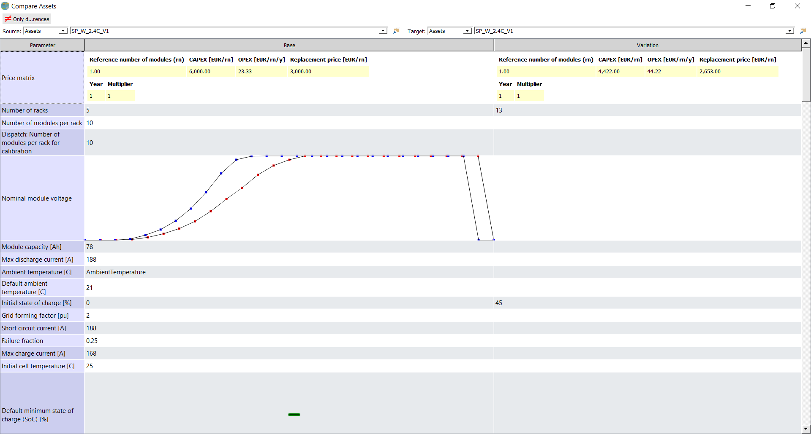
Compare assets window
As long as the type of the assets is the same (e.g. Genset/Genset)
every combination is valid. This allows, for example, to compare an asset from the
current project with an asset from the file system. The second combo box selects the
name of the asset, which is used for the comparison. Once two valid assets have been
selected, the comparison starts automatically.
Note: If an asset from the current project has been
selected in the Compare assets window and its values are updated in ISED later, it may be necessary to update the
asset comparison result: To update the view, click on the Compare assets window, which
refreshes the comparison result. The result is displayed in nearly the same way as the
Parameters View in the Equipment tab. The first column Parameter contains the Parameter
description, whereas the second column Base contains the actual values of the assets.
Further columns are added if one of the two assets has variations. A value cell with red
background denotes a difference between both assets. When displaying the different
values, the following principle applies: The source asset value is on the left side and
the target asset value is on the right side, separated by a slash, as in this example:
10/20. If no value is available, or only one of the two assets has a variation, two
dashes are displayed instead: --/20.
If the values of a parameter are visualized as a graph, the following
principles apply:
If both graphs are equal, only one graph is painted with green graph coordinates
(small squares).
If both graphs are different, two graphs are drawn. The graph coordinates (small
squares) of the left asset are always drawn in blue whereas the graph coordinates of
the target asset are always drawn in red.
Note: To maximize the size of both graphs, the
scale of both graphs is likely to be different!
If one of the assets has a variation, which the other asset does not have, only one
graph is painted in the corresponding color: the left asset with blue graph
coordinates and the right asset with red graph coordinates
Projects opens a new window, in which a source and a target project can be compared. The
source project is always the currently loaded project. The target project is selected in
the file dialog. The project comparison is started after the target project has been
selected. As project files can be big in size, the comparison is started only once. Use
the Refresh Projects toolbox button in order to restart the project comparison.
The results (shown below) are divided into five
parts of each ISED project:
Project Compares the project information from the
project tab.
Resources The available ISED project resources like time series or
fuels. Each line is corresponding to a concrete time series or fuel. The comparison
result is aggregated, e.g. Equal/Different/Added/Removed.
Equipment The available ISED project assets. If two assets are
compared and marked as different, a double click on the cell opens up a new window
with a detailed asset view. An additional toolbox button in this window can show
only differences from the comparison.
Note: If multiple assets point to the same time
series, which has been changed, the assets are marked as different (the comparison
follows associations/links in assets).
Simulation & Dispatcher Compares the simulation
parameters and logging from the Simulation & Dispatcher tab.
Imports a (correctly formatted) PVSyst or HelioScope export with an
(optional) associated Meteonorm file.
Note: As a guideline, HelioScope is recommended to be
used for pre-qualification, opportunity and non-binding Solar PV simulations.
PVsyst
can be used for all kinds off simulations from pre-qualification up to binding
guarantees.
If the Meteonorm file is not provided, then the PVSyst data is imported as an hourly
time series. If the Meteonorm file is provided, it is assumed that the PVSyst/HelioScope
calculation was carried out on Meteonorm data and the provided Meteonorm file is the
interpolated 1 minute resolution file from the same source. During the import, the
time-series are created and interpolated.
Note: The imported data is normalized (divided) and
then re-multiplied by the peak power. This allows for easy scaling if different
variations of PV plants are simulated.
A PV plant is added to the equipment tab and automatically linked to
the associated time-series.
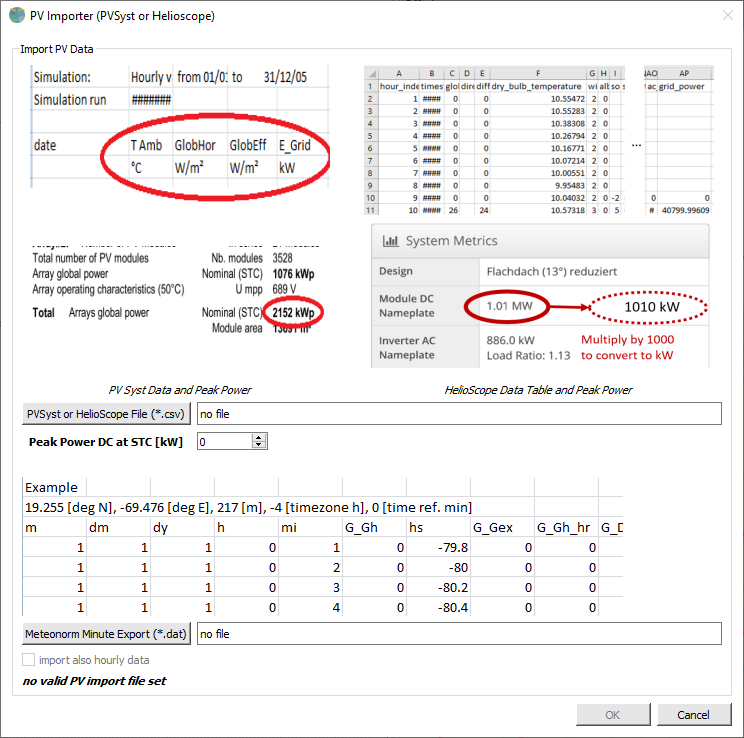
PV import dialog
Results Menu
View Results Shows the results of the last simulation run.
At the start of ISED the results view will always be empty. To see results
from past simulations, the associated results database must be loaded using. View Database entry in ProjectMenu.
Tool Bar
In the upper left corner the ISED UI contains six buttons:
Save Saves a project setup.
Run simulation Runs a simulation based on the
current project setup for one year.
Simulate a few days only Runs a simulation based on
the current project setup for one week.
View results This button has the same function as
the "View Results" in the Results Menu.
Show manual Opens this manual.
Dispatch Optimization Switches between Decarbonization Study
and Dispatch Mode. More details are here.
Tool bar
Tabs
Six tabs are used as following:
Project Tab The project information is shown.
Resources Tab The time series and fuel resources
are shown.
Equipment Tab The equipment used for the project
are selected and shown.
Topology Tab The energy supply topology is shown
Dispatch Optimization Tab Parameters used for the
dispatchers are shown.
Simulations Status Tab Logs from simulation are
shown.
Tabs
Result View
The results view shows the aggregated Key Performance Indicates(KPI) of the
last simulation run. It contains detailed technical KPIs and provides a rough evaluation of
their economic impact. Clicking the symbol in the upper left corner of the results view
triggers the financial evaluation view. A detailed economic evaluation may also be accessed
from this view.
Financial Tool
A basic financial evaluation tool is integrated in ISED and the economic results from simulation are
represented in this tool with post-processing.
Seaview
A trending tool has been customized to work with ISED. Seaview allows for the simple import of
Comma-Separated Values(CSV) and ".txt" files, and the view of trends and heat maps. The
CSV file may be either "comma" or "semicolon" separated. The user must define the time
resolution when importing the time series (in seconds - i.e. 1 hour = 3600). Multiple
files can be viewed simultaneously.
The Seaview tool can be accessed either by opening directly via the
desktop or via ISED.
View Time Series From the resources tab, the "View
Time Series" button will open Seaview, and include all loaded time series.
View Logs After simulating, by right clicking on a
given configuration, Seaview will be loaded with the selected log.
Drag-and-drop If Seaview is open, it is possible to
drag and drop a .csv or .txt file into the tool, and it will be selectable to view.
Note: If a time series is loaded this way, then the
first line of the file will always be used as the name of the time series. This can lead
to confusion if the first line should instead be a value for the first time point.
General Features
Tables Some tables in ISED have a tree-like structuring that allows to
collapse and expand sets of rows. Double clicking on the header row will expand/collapse all
rows.
Copy and Paste Most input tables in ISED support copy and paste from outside sources such
as EXCEL. For example, to copy a cost table from EXCEL to ISED, copy (ctrl-c) it in EXCEL, then click anywhere
into the table in ISED and paste it (ctrl-v).
Help Manual Having the mouse over a text in the UI and
pressing the F1-key will open the manual and look up the text in the index. If it is not
found in the index, a full text search is performed. All parameter tool tips are also part
of the help text. To find that click onto a parameter's name and then press the F1-key.
Technology Abbreviations
AbC Absorption Chiller
Cb Cable
CC Compression Chiller
CfB CoalFiredBoiler
CHP Combined Heat and Power System (formerly Recip Engine)
CHy Conventional Hydro
CWL Cold Water Load
CWL Cold Water
CWS Cold Water Storage
DCl District Cooling
DHt District Heating
DL Deferrable Load
EHWB Electric Hot Water Boiler
EL Electric Load
ELB Electric Load Bank
ESS Electrical Energy Storage System
EStB Electric Steam Boiler
EV Electric Vehicle Charging Station
GB Gas Boiler
Grd Electric Grid
GS Generator
GT Gas Turbine
HE Hydro Electric
HtP Heat Pump
HTS Hot Temperature Storage
HWB Burner
HWB Hot Water Boiler
HWL Thermal Load
HWL Hot Water Load
HWS Heat Storage
HWS Hot Water Storage
HWV Steam Valve
H2C Hydrogen Compressor
H2E Hydrogen Electrolyzer
H2FC Hydrogen Fuel Cell
H2Grd Hydrogen Network
H2L Hydrogen Load
H2S Hydrogen Storage
H2T Hydrogen Turbine
H2V Hydrogen Valve
PrP Process Plant
PHy Pumped Hydro
PV Photovoltaic
ST Steam Turbine
StB Steam Boiler
StL Steam Load
StV Steam Valve
VT Vent
WT Wind Turbine
Project Tab
The project tab contains the following fields:
Project Tab
Project Information
Customer
The customer for the project is set up here. This field is used for informational
purposes only.
Project Name
The project name is set up here. This field is used for informational purposes
only.
Project Lifetime
The time period for which the KPIs are calculated.
Carbon Tax
Certain assets consume Fuels, which tend to release carbon into the environment. In
certain regions, the amount of carbon produced may result in taxes. In such circumstances, the user
may configure the taxable amount per metric ton CO 2. The user may define
a timeseries to capture variation in the price of carbon over time, with annual multipliers
capturing the effect over years. If a time series is selected, then the constant value is ignored.
Each Fuel resource contains a "Carbon content" parameter, indicating the amount of
carbon dioxide (in grams) generated per MJ (megajoule) of lower heating value consumed.
This tax is considered by the dispatcher as an additional cost on the energy
produced by each asset which consumes fuel, namely
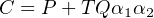
where
C is the effective cost of the fuel,in currency per Kilowatt Hour lower heating value,
considered by the dispatcher
P is the price of the fuel in currency per kWh lower heating value
T is the value of the carbon tax in currency per metric ton of CO2
Q is the carbon content of the fuel in g=MJ
= 1 x 10 -6 is the conversion factor from grams to metric tons
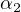 = 3:6 is the conversion factor from kWh to
MJ
In addition, KPIs for the amount of carbon emitted by each asset (in metric tons),
and the tax payed for it, are calculated.
Project WACC
The weighted average capital cost for nominal cash flow value in results table.
Include salvage
If selected, the residual value of assets that have not reached the end of their
life at the end of project will be subtracted from the overall costs.
Currency
The project currency can be defined with a three-letter abbreviation and an exchange
rate relative to euros (EUR).
Set project currency
Two options are available:
Update entire project data
This updates all financial values in a project (Decarbonization study and Dispatch optimization) to the selected
currency. This includes:
The 'Energy Values for Project LCOE (Electricity)' - project tab
The 'Carbon tax' - project tab
Fuel prices - resources tab
Any time series with a currency unit - resources tab
CAPEX, OPEX, Replacement Cost for assets and technologies. This includes any asset
already in the project, as well as the same conversion when a component is added to the
project
Any other financial parameters for components (e.g. import/export prices)
Dispatching cost parameters in the Multi-Step and MGC dispatchers
Any new simulation result databases will be saved into this currency
Any new simulation result logs will be written with this currency
Do not update project data
No numerical values are updated, but the three-letter currency code and the exchange rate
will be updated as above.
Project Notes
This field is intended for all kinds of information the user wants to store with
the project.
Set location
Overview
This button allows selection of the location of the project. This includes also the
import of preliminary weather data and a map visualization.
Set project location
Find location
The project location can be found either through its coordinates or its address.
Import weather data for PV
The integrated weather data is based on Meteonorm data. A default value for the UTC
offset is estimated when searching for new locations. This can be updated by the user if necessary.
Note: Data until 2015 is used because it is based on ground
measurements of GHI. This is data measured by national weather services and delivered via Global
Energy Balance Archive (GEBA). It normally takes some years for this data to be accessible. Also,
Meteonorm tries to use a common period of 20 years with an end date of 2005, 2010, 2015, … This
approach is considered valid as 20 years averages are quite stable and don't change that much, even
in times of strong climate change.
Note: Wind data quality - The provision of wind speed and wind
direction in Meteonorm is intended as an extension of its output for design programs requiring wind
data as input. The wind itself is not usually of great importance for solar and building (energy)
application, and the model presented here is not intended to provide more than a rough approximation
of monthly average and distributions (at 10 m above ground). The present interpolation should not be
used for designing wind power plants.
Create PV component If this check box is selected, a PV asset can
be created with the integrated weather data. It is also possible to interpolate the solar radiation
data to minute time steps by selecting the function check box.
Import time series (button) Click on this button to import the
Meteonorm data corresponding to the selected location.
List of Stakeholders
By assigning assets to different stakeholders the financial interests of different
parties can be taken into account in the financial analysis. In order to be able to assign a
stakeholder to a asset the stakeholder must first be created and added to the stakeholders' list.
Add Adds a stakeholder.
Remove Removes a stakeholder.
Energy Values for Project LCOE (Electricity)
An LCOE (Levelized Cost of Energy) value is calculated for each configuration in
the results.
When non-electrical loads exist in a project, the value of the energy flows in the project to these
loads affects the Levelized Cost of Electricity for the project. The revenue from these energy flows
offset the cost of generating the necessary electricity. For each energy type, there are two
parameters:
First Year Value This is the unit value (in EUR/kWh) of the energy
to non-electrical loads. This value does not affect dispatching.
Annual Escalation Defines the annual increase in value for the
given energy type.
Note: When a non-electrical load is present in a project, the
corresponding energy type becomes activated. E.g. if no Steam Loads are present in a project, then
it is not possible to edit the 'First Year Value' or 'Annual Escalation'.
Topology
This topology section is a simplified version of the Topology Tab. A new bus can be
added here.
Resources Tab
The resources tab contains two kinds of resources. Firstly, environmental data such
as temperature, load profiles, or other time series which influence the performance of assets.
Secondly, fuel types can be modified or defined.
Time Series
Overview
This section contains the following buttons:
Resources Tab
View time series
Opens a time series viewer and load all the resource time series for inspection.
The time series are grouped by resolution.
The imported time series are shown in a table with the following columns:
Name Name of the time series by which it is referenced within ISED
Type Type of the time series
Unit Measurement unit expected associated with the time series
Scale factor A factor to scale the original time series when used
within a asset
Annual multipliers Like an additional scale factor, which changes
from year to year. The yearly factors always refer to the original series with the static scale
factor applied.
Additional parameters Some time series might require additional
parameters, these can be seen and edited here. Wind speed is currently the only example; it
requires:
Anemometer height The height at which the time series was measured
Power law exponent The exponent used to extrapolate different
heights using the wind profile power law.
Time step (S) The resolution in
seconds, in which the time series
is provided.
If a time series is selected (by single clicking on it) an overview is displayed
below.
Statistics
Project Maximum Value (Year 1 Maximum) The maximum value in
the time series (if a scaling factor or an annual multiplier is provided with the time
series, the unscaled value is shown in parenthesis).
Project Average Value (Year 1 Average) The average value in
the time series (if a scaling factor or an annual multiplier is provided with the time
series, the unscaled value is shown in parenthesis).
Project Minimum Value (Year 1 Minimum) The minimum value in
the time series (if a scaling factor or an annual multiplier is provided with the time
series, the unscaled value is shown in parenthesis).
Project Cumulative Value (Year 1 Cumulative) The cumulative
value of the time series, e. g. it presents the annual energy consumption when it is the
load profile.
Heatmap
The heatmap has on the x-axis the days and on the y-axis the time of day.
Therefore are changes from the left to the right "seasonal" changes, meanwhile changes from the
bottom to the top are representing changes during the day.
Timeseries Database
The Timeseries Database (TSDB) is a web application aimed to provide a convenient way for sharing
timeseries.
Overview
Timeseries that are shared with the support desk (with an appropriate disclosure on sharing within
ISED) are uploaded to an integrated database to provide access to all users. A tree structure is
provided to help users navigate to areas of interest. A timeseries can be scaled and noise can be
added, and then downloaded to a ISED project. The TSDB is updated during the installation of
ISED.
Timeseries Database overview
A tree structure with the available timeseries is shown on the left-hand side of the TSDB popup. This
structure is defined by the ISED development team and can be modified as necessary. When selected,
Timeseries are shown in the right-hand side of the popup. The popup includes:
The timeseries name
Main KPIs for the timeseries e.g. Min, Max, average and the cumulative value.
The capacity factor is defined as:
Visualization of the timeseries as a plot
A section to customize the timeseries before downloading:
Defining a new average
Defining a new spread. Spread is defined as:
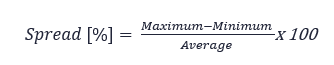
Adding noise for:
Each time step –adds randomly generated noise to each timestep
Daily – adds randomly generated noise to each day
Information is provided for each timeseries including:
Description – a text description on the timeseries
Average, spread and timestep information for the original timeseries
Owner – a contact on who provided the timeseries
Version, last modified and created time stamp
Please contact IESsupport.spa.cn@siemens.com if you have timeseries that you would like to add to the database.
Timeseries Editor
The TimeSeries Editor (TSE) is a web application aimed to provide a convenient way
for creation, editing and sharing timeseries configurations.
Functionality
Overview
Preparing realistic input data is a significant part of the simulation process. To
achieve the best simulation accuracy, it is important to consider various load profiles like
electrical and thermal, and power limits. TimeSeriesEditor (TSE) is a tool enabling users to gather
the information from a variety of sources and quickly create yearly timeseries for simulation.
TSE Main screen (Daily View)
On the first run of TSE, the user is prompted to provide the Name and the 1st day of the Year for
a new timeseries configuration.
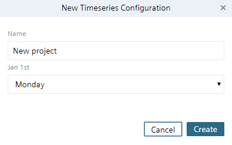
New timeseries configuration pop-up window
From this point, a user's journey towards creating Yearly Profile is about to start.
In the TSE first screen (Daily View), the user can start working with the
application by adding profiles, configuring daily profiles in Daily Load Profile Editor and
visualizing selected daily profiles in Daily Load Profile Viewer.
After the user has added daily profiles, he can get to the TSE second and third
screens by selecting "Yearly View" and "Heatmap" tabs at the top of the screen. In these screens the
user can find the generated Yearly Timeseries in Trend and Heatmap
charts, analyze KPIs, adjust Monthly
Scales, change timeseries interpolation type, and apply
noise by selecting time step noise or daily variation. See the details in following chapters.
TSE second tab (Yearly View)
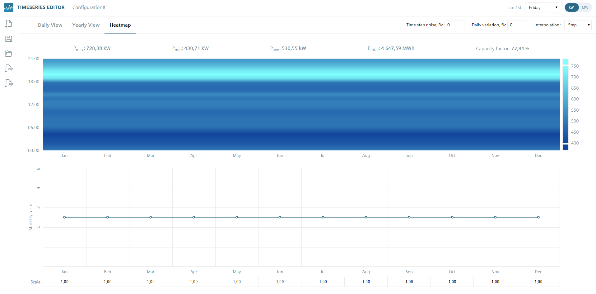
TSE third tab (Heatmap)
If the Yearly Timeseries is available (at least one daily profile has been added),
the user has following actions enabled:
Export timeseries configuration to a file,
Export yearly profile to txt file,
Export yearly profile to ISED,
Start working with another timeseries configuration via importing from the existing timeseries
configuration file,
Discard all changes and create new timeseries configuration.
Navigation
The user can navigate in TSE using tabs: Daily View, Yearly View and Heatmap. In
Daily View the user can configure input profiles. In Yearly View and Heatmap he can see the
generated Yearly Timeseries.
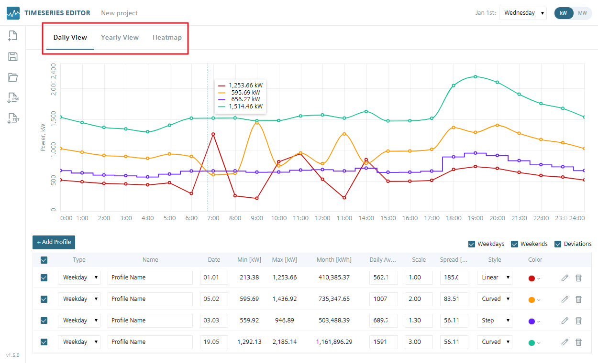
TSE tabs: Daily View, Yearly View, Heatmap
Global settings
Two global parameters affecting the whole configuration are available in Timeseries
Editor:
kW/MW units: this setting changes the order of magnitude of all values shown in
the UI, but it will not affect the exported data unit which are assumed to always be is kW.
Jan 1st (day of the week): defines the target year for timeseries generation:
this setting defines the weekend distribution along the yearly timeseries. Please note that leap
years are not currently supported.
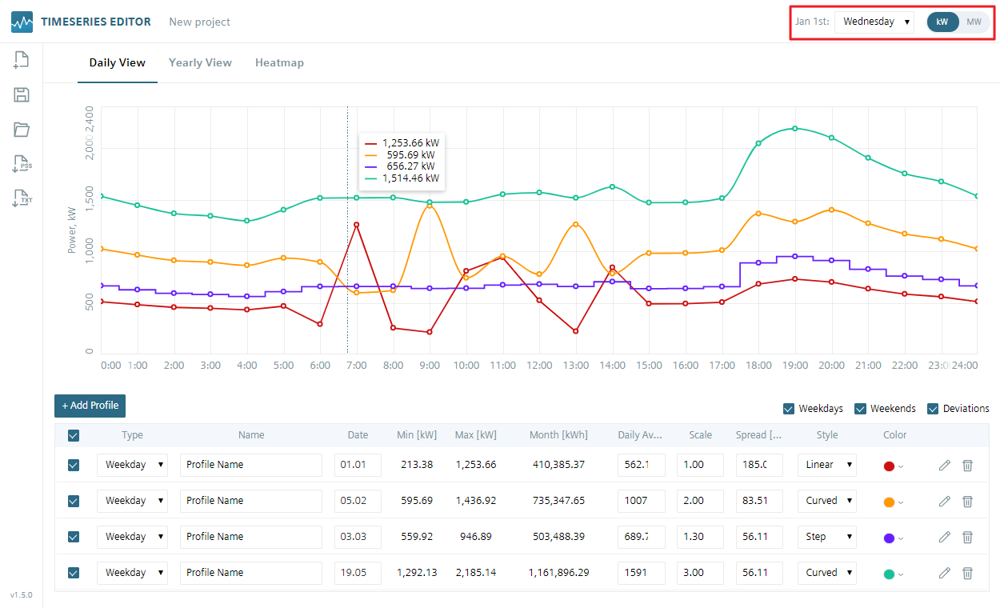
Global settings: units and 1st day of the year
Timeseries Configuration
Timeseries configuration is a whole set of input data created by the user: daily
profiles, colors, interpolation types, etc. Timeseries editor allows to create new timeseries
configuration, export (save) or import (load) timeseries configuration to/from the file.
All the modifications of a timeseries configuration are immediately saved by the
application (autosave). Therefore, each change in Daily View has its effect in Year View and Heatmap
right away.
Autosave
To prevent data loss in case of pressing 'F5' (refresh), closing browser or
accidental shutdown, Timeseries Editor application automatically saves all the modifications.
Before creating new TSC the user is notified about the possibility to save current
TSC to a file to be able to restore this work.
Daily load profiles
Adding daily profiles
The user can start working on timeseries by using 'Add Profile' button:
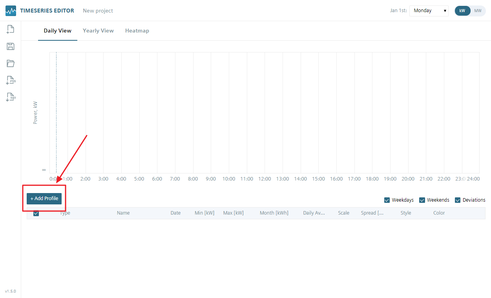
Add profile button
In the "Add Profile" dialog the user can choose to add default profile with some
pre-defined non-zero values or to import timeseries from a file using the drop-down at the top:
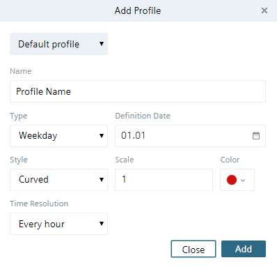
Add profile dialog
Following parameters are available for configuration of a profile:
Profile Name: user-defined name, not necessarily unique
Definition Type: Weekday (Monday – Sunday), Weekend (Saturday, Sunday)
or Deviation (might be either single date or date range)
Definition Date: a single date or date range for Deviation profiles can be
selected with a calendar picker
Style: interpolation style used in the daily profiles chart to display the profile
Scale: scale to be applied to original daily profile (see details
in Daily profile metrics calculation and setting)
Time resolution: the user can select default profile either with 24, 48, or 96
data points.
Color: color to be used in the chart to display the profile.
All settings except the time resolution can be changed later in the daily profile editor table.
Important: Definition dates of Weekday and Weekend profiles are
constrained by a rule: there should be only one profile of the same type assigned to one
month. In case if there is already a profile assigned to the same
month, the adding will not be allowed, and a warning will be shown: “Cannot
assign more than one profile of the same type to one month.”
For Deviation profiles the rule is different: there should be no overlapping of date ranges
for deviation profiles. If the user tries to add a deviation profile with the date
range overlapping already existing one, the warning will be shown: “Deviation profile date
ranges cannot overlap. Please choose another date range.”
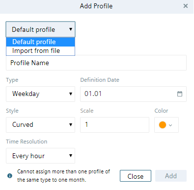
Warning: Month is already occupied
In case of importing values from file, following validation rules are applied to the data by TSE
application:
data points in the file must have the "line feed" delimiter only ('space' and 'comma' are not
supported)
the file must contain valid number of points: 24, 48 or 96 (according to supported range of time
resolutions).
Once the user has added a daily profile, its chart gets displayed in the Daily load profile viewer
and corresponding entry gets added to the Daily load profile editor.
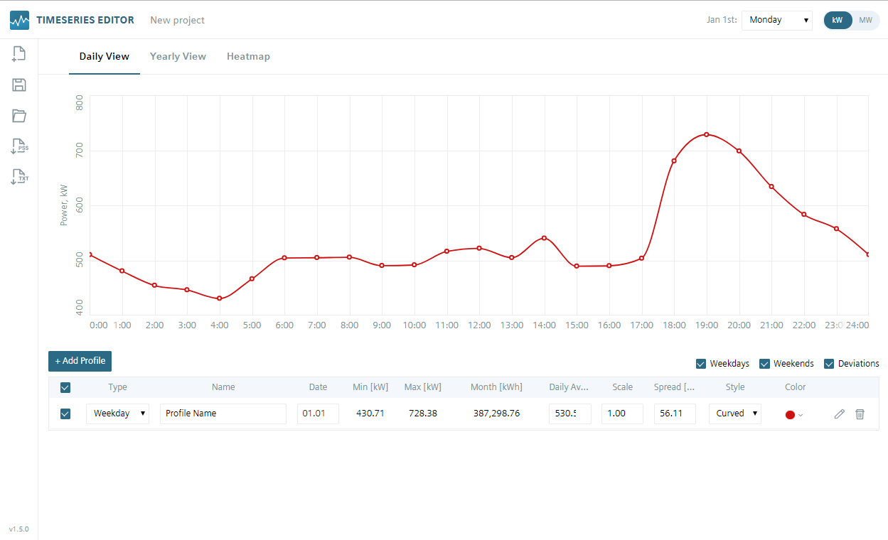
A daily profile in Daily View
Daily load profile viewer
In the Daily load profile viewer, the user has a visual representation of configured
daily profiles.
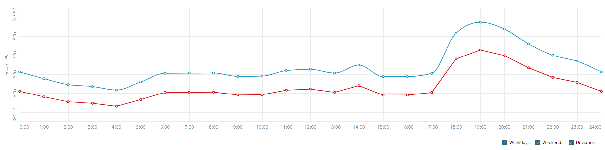
Daily viewer
The user can change values of a daily profile by Drag&Dropping points in the graph.
The application prevents the user from setting negative values for daily profiles. The Y-axis scale
is automatically adjusted to display all values of selected daily profiles.
The user can quickly show/hide groups of daily profiles from the chart using
checkboxes "Weekdays", "Weekends" and "Deviations" in the top right corner of the Daily load profile
viewer.
Please note: even if the profile is hidden from the chart, it still is included in
calculation of Yearly Timeseries unless it is switched off in the editor table.
Editing Daily Profile
In the Daily load profile editor, the user can configure a profile using following parameters:
Definition Type
Profile name
Date/Date range
Calculated metrics:
Minimum [kW/MW]
Maximum [kW/MW]
Month [kWh/MWh]
Daily Average [kW/MW]
Scale
Spread [%]
Style
Color
Minimum, Maximum and Month are read-only metrics of a daily profile. All others are
editable and can be changed at any time.
Changing Daily Average, Scale and Spread
(see Daily profile metrics) will immediately affect the values of the profile.
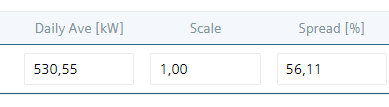
Daily Average, Scale and Spread
Note: Daily Average is equivalent to Scale in terms of affecting
the profile, because changing of the Average is converted to changing the Scale.
It is also possible to edit values manually in edit mode. In order to do that press edit button on
the right side of the daily profile entry:
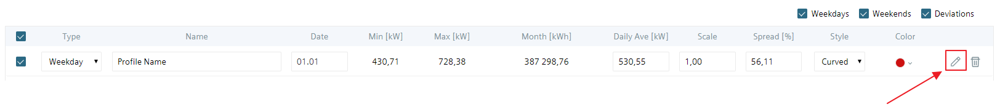
Edit Daily Profile button
In this mode the user can see the table with load values for each time point in the
profile. The values can be edited by typing a new value the changes can be discarded or applied by
pressing "Discard" or "Apply" buttons.
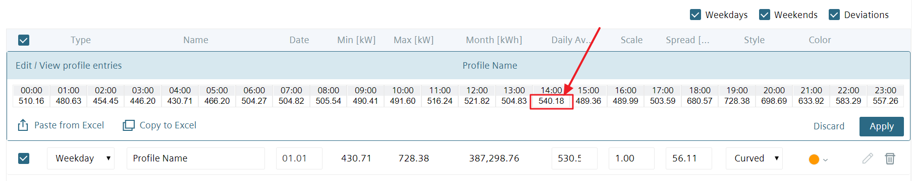
Profile Edit mode
It is also possible to Drag&Drop daily profile points in the chart in the Daily load
profile viewer (see the next section). This will take immediate effect.
Import from/to Excel
The user can import profile data from Microsoft Excel document via copy/paste operation from the
Excel sheet into the value row in editing mode. For that purpose:
In Excel copy the range of values (24, 48 or 96 values)
In TSE open edit mode for one of profiles
Click button “Paste from Excel”
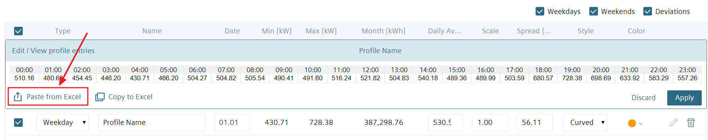
Paste from Excel button
Another option to paste from Excel is to use keyboard shortcut:
In Excel copy the range of values (24, 48 or 96 values)
In TSE put the cursor in one of the cells
Press "Ctrl+V" and the values will be pasted into the daily profile entry
Press "Apply" to make changes or "Discard" to get back to previous state of the profile and exit
the entry edit mode
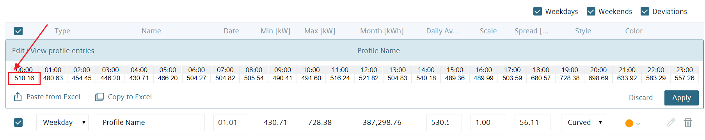
Paste from Excel using shortcuts
The values can be copied back to Excel via pressing button "Copy to Excel":
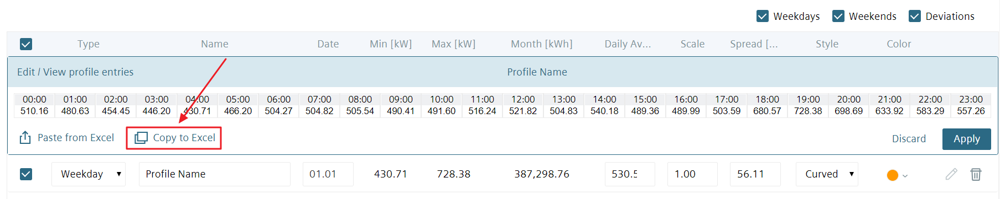
Copy to Excel button
All values of the currently opened profile will be copied to the clipboard and can be pasted in Excel
as a column.
Note: Selecting a row of values in the editor table is not
supported.
Delete Daily Profile
The user can delete the daily profile via "recycle bin" button. Please note that
this action cannot be reverted. Consider temporary hiding from the profile described in the next
section if the profile might contain useful data.
Daily Profiles Selection
The user can select/deselect daily profiles using the checkbox on the left side of
the profile entry. It shows/hides the profile from the chart in the Daily load profile viewer. What
is more important, this setting also influences on whether this daily profile is used for generating
Yearly Timeseries or not. Effectively, using this checkbox the user is turning the profile off and
on.
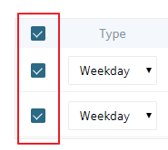
Checkboxes to turn a profile on and off
Definition Types and Definition Dates
The configuration of definition type and selecting definition
dates is an important part of generating Yearly Timeseries.
Definition Types
The user can assign one of the following types to a daily profile: weekday, weekend
and deviation.
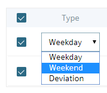
Definition Types
Depending on the definition type the profile will be applied to yearly timeseries in
one of ways, see next sections.
Definition Date
The definition date is a date on which a daily profile starts to be applied to
the target Year until another definition date of the same definition type is met (only for
Weekday and Weekend types). Definition date of a
Deviation profile denotes a single day or a date range to which the deviation will
be applied.
The user can select the date for a daily profile using the calendar picker, see the picture below:
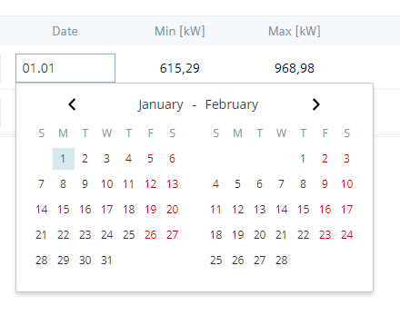
Single date selection in Calendar Picker
Daily profiles of Deviation type can be configured either for a single date or for
a date range.
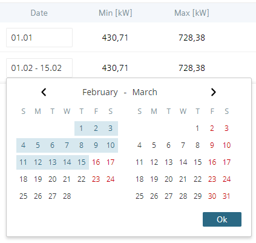
Date range selection in Calendar Picker
Important: Definition dates of Weekday and Weekend profiles are
constrained by a rule: there should be only one profile of the same type assigned to one
month. In case if there is already a profile assigned to the same
month, the adding will not be allowed, and a warning will be shown: “Cannot
assign more than one profile of the same type to one month.”
For Deviation profiles the rule is different: there should be no overlapping of date ranges
for deviation profiles. If the user tries to add a deviation profile with the date
range overlapping already existing one, the warning will be shown: “Deviation profile date
ranges cannot overlap. Please choose another date range.”
Profiles application rules
Daily profiles are applied to the yearly profile according to the following rules:
At first all Daily profiles of type Weekday are sorted by date and one by one
are applied to the yearly profile. Each profile is applied to all days starting from
its definition date to the next profile definition date.
Then in the yearly profile obtained after Step 1, all Daily profiles of type
Weekend (sorted by date) one by one are applied to the Saturdays and
Sundays starting from a definition date to the next definition date of a weekend profile.
Then all Daily profile of type Deviation are applied specifically
to a definition date or definition range for the yearly profile resulting from Step 2.
Weekend profiles and deviation profiles essentially override the values propagated from weekday
profiles. In other words, a weekend profile has higher priority than a weekday one and a deviation
profile has higher priority than a weekend one.
Daily profile metrics
Several metrics characterizing a daily profile are displayed in the Daily Load Profile Editor panel.
Let's consider them in details.
Read-only metrics:
Min [kW or MW] - minimal value in current profile. The value is
read-only.
Max [kW or MW] - maximum value in current profile. The value is read-only.
Month [kWh or MWh] - the amount of energy that might be consumed in
one month if current daily profile would hold for the whole month. No other profiles are
considered, monthly scaling defined in Yearly View or on Heatmap View is also not considered.
The value is calculated according to the formula:
This characteristic is read-only and aimed to give an understanding about how the profile of interest
will contribute to final amount of energy consumed in a year.
Editable metrics:
Daily Ave [kW or MW] - average power in a daily profile. It has unit kW or
MW depending on current state of the toggle kW/MW. Daily average is calculated as arithmetical
mean of all values in a daily profile. This value is editable. When the user
changes the average it calculates new corresponding scale and daily profile gets recalculated.
So, this change is equivalent to scaling the profile.
Scale [-] - multiplier that allows to scale the given profile along the Y
axis.
Spread [%] - the characteristic showing the difference between
maximum and minimum value relatively to the average value of the profile. Current spread is
calculated according to the formula:
spread = (maximum - minimum) / average
This value is editable. When the user changes the spread the application recalculates the daily
profile, moving each value from the average by the relative spread change. So, this change will
take an effect of stretching the profile along the Y axis relatively to average value. Note that
average will stay the same. When the user changes a value in the spread edit field, each value
in the profile is updated according to the relation:
It should be noted that all metric changes are immediately applied to daily profiles and to
timeseries configuration. It means that recalculation of the yearly profile is triggered on every
change. If the user opens the Yearly View or Heatmap tab after a metric change, he should see the
updated yearly profile graph.
Initial values of the profile do not get overridden by change of average, scale or spread. If the
user sets the scale back to 1, and the spread back to the initial value, he will see initial values
of the profile. However, in the case the user Drag&Drops points on the chart or edits them
manually in the daily editor table, source values do get changed in accordance with current scale.
In that case even after reverting the scale and spread back to initial values, the changed point
will be different from the source value.
Yearly profile generation
Yearly profile gets created after each change in the timeseries configuration. All
the inputs in Daily profiles screen and settings in Yearly View or Heatmap are considered for yearly
profile calculation. Below you can find the description of available settings in Yearly View and
Heatmap.
Yearly profile time resolution
It is allowed to have daily profiles of different time resolution in one timeseries
configuration. Time resolution of yearly profile is automatically derived from the input data and is
equal to the highest resolution among the input daily profiles.
All daily profiles with lower resolution are resampled before being applied to
yearly profile. For that purpose, linear interpolation is used to fill gaps between values and reach
the required step size. The resulting extended daily profile is applied to yearly profile during its
calculation.
KPIs
The KPI panel is displayed above the yearly profile chart and the heatmap. It includes the following
indicators:
Pmax [kW / MW] – maximum power during the year
Pmin [kW / MW] – minimum power during the year
Pave [kW / MW] – average power during the year
Etotal [MWh / GWh] – total amount of consumed energy during the year
Capacity factor [%]
Setting up timeseries interpolation type
There are two types of timeseries interpolation that can be displayed in the graph:
step and smooth. Step interpolation effectively means no additional modification of values.
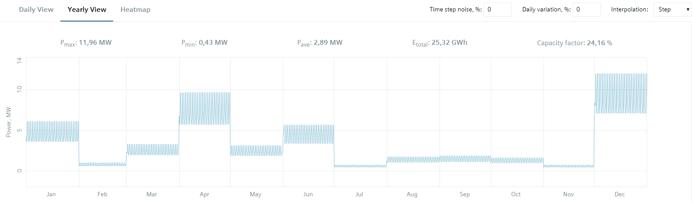
Step interpolation of a yearly profile
Smooth profile is calculated from step profile using special algorithm. The main
idea of smoothing algorithm is to get rid of abrupt jumps caused by daily profile difference or by
monthly average scaling.
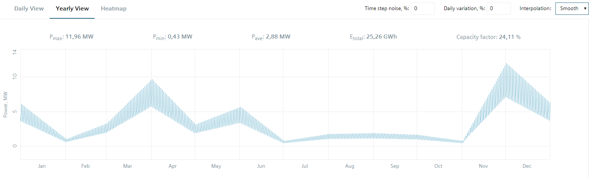
Smooth interpolation for different monthly scales
Weekdays are smoothed independently of the weekends since the algorithm considers
trends for them separately. Deviation days are not changed by interpolation at all.
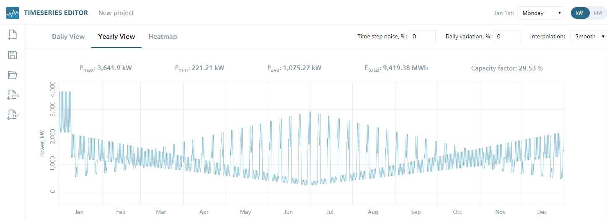
Smooth interpolation for profiles with different definition types
Setting up time step noise
Timestep noise and daily variation are the mechanisms aimed at adding normal noise
to the yearly profile and imitating real load data. Time step noise is applied independently to each
value in the yearly profile, so the random multiplier is chosen for each of them.
Setting up daily variation
Similarly to time step noise, daily variation is used to add random noise (or
variation to a yearly profile. Daily variation differs from the timestep noise by the lifespan of
the random part: once calculated it stays the same for one day.
Monthly scaling
Adjusting the monthly scales is another way to customize the yearly profile. It can
be done by dragging the point on monthly scales chart or by manual input of the scale for a month.
See the picture below:
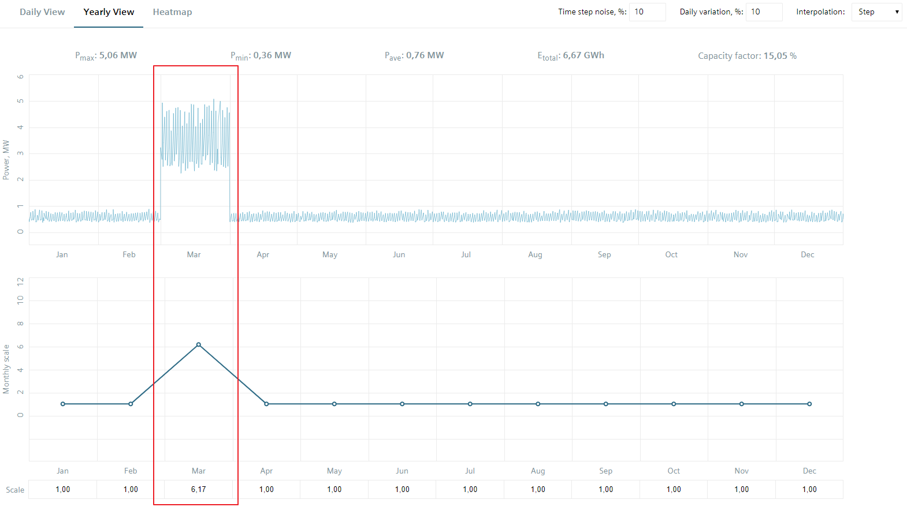
Monthly scales
By default, the scale factor table is initialized with "1". The user can easily
revert all changes made through the pane by setting scale values in the table to 1.
Export yearly timeseries
As soon as the user has finished all the required adjustments and is ready with the Yearly
Timeseries, he might want to Export Yearly Timeseries to the file
(.txt) or Export Yearly Timeseries to ISED project
(tool).
Action bar
Timeseries Editor has following action buttons in the left sidebar:
Sidebar with action buttons
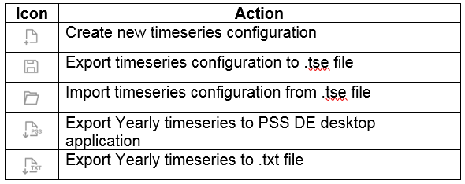
Creating new timeseries configuration
The user can create a new timeseries configuration using the action button in the
left sidebar.
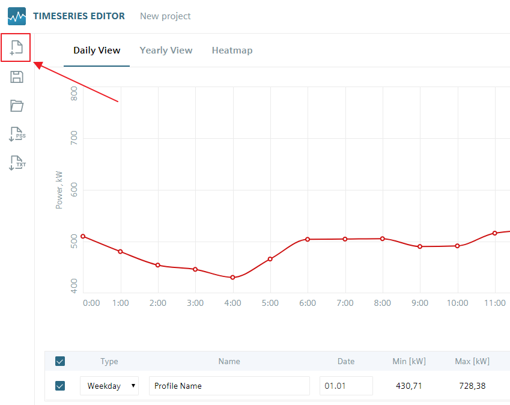
Creating new timeseries configuration
The application will offer the user to export (save) the existing timeseries
configuration to a file or to proceed with creating new timeseries configuration.
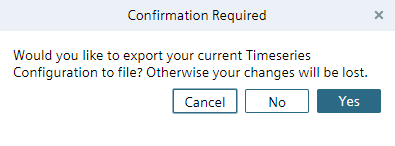
Confirmation before creation of new configuration
If the user chooses "Cancel" the action is cancelled and the TSC is left intact. If
the user chooses “No”, the current TSC is discarded and its data gets lost. In case if 'Yes' option
is selected, the user is presented to an overlay with initial TSC settings and he should provide TSC
name (Project name) and the target Year. Effectively, creation of new timeseries configuration is
equivalent to discarding of all changes made by user.
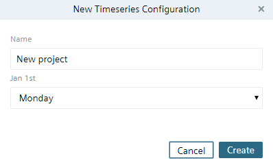
New timeseries configuration dialog
Import/export timeseries configuration
The user can export the TSC to a file in the format .tse. As a
result of the export, a file with TSC in internal format is created and saved to the "Downloads"
folder.
Save timeseries configuration to a file
The user can load TSC by importing from the .tse file created by TSE application. In
that case the file browser is shown to the user prompting to select a file in his machine.
Export and import of TSC allows users to share the data between each other e.g. via
emails.
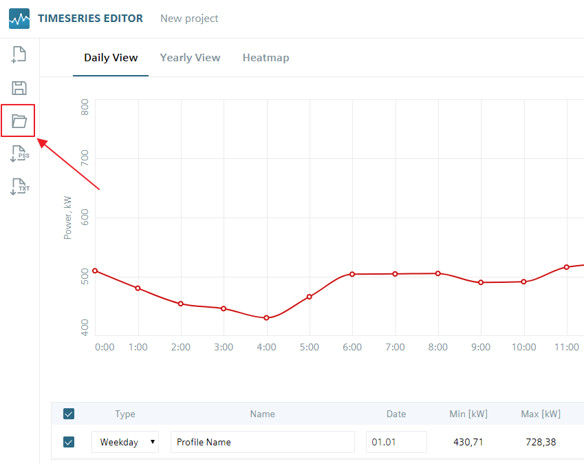
Open timeseries configuration from file
Export Yearly Timeseries to ISED
The most seamless and advanced way of sharing Yearly Timeseries in TSE is exporting
it directly to ISED project in case if TSE application has been started from ISED application.
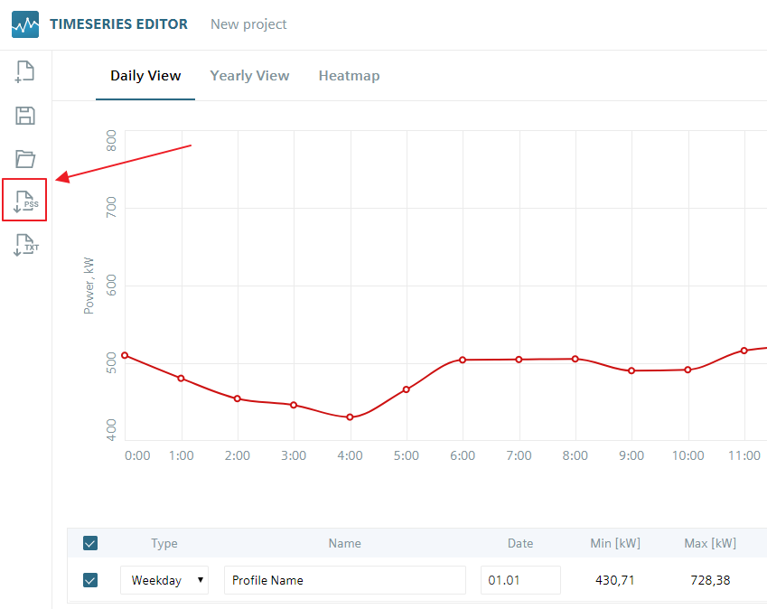
Export yearly profile to ISED
The user will need to provide Interpolation Type and Decimal
Separator parameters; the current TSC name displayed in the TSE header will
be used as a ISED project name.
If ISED is running and has open connection with TSE (web server is ready to process TSE export
request), the user in TSE will get the notification about successful export.
In case of a failure, the user gets the following notification in TSE:
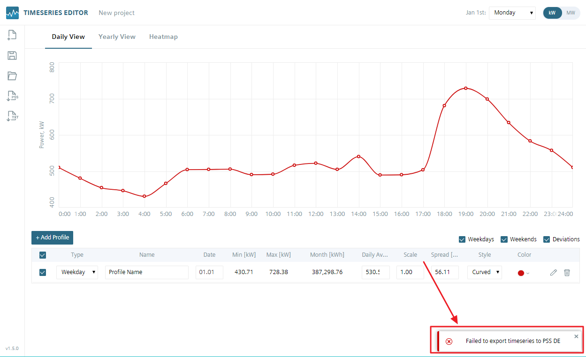
Error notification
Export Yearly Timeseries to file
The user can export Yearly Timeseries to a .txt file using Action Buttons in the
left sidebar.
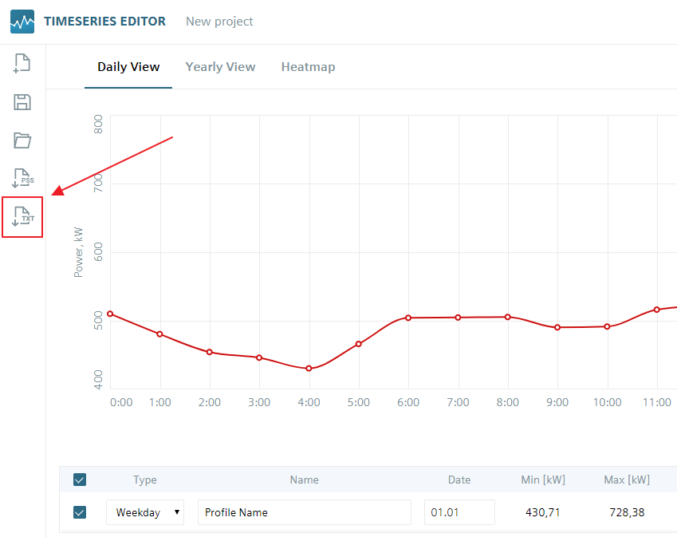
Export yearly profile to .txt
Then the popup gets shown prompting the user to specify: File name, Interpolation Type
(Step, Smooth) and Decimal separator (comma, dot).
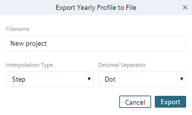
Export yearly profile dialog
On pressing "Export" button, the file is generated and saved to "Downloads" folder.
Generate weather data
This button opens a dialog that allows to set the project location and at the same
time import preliminary weather data. This is the same popup as described in the Project Tab "Set
Location"
Add time series
This button opens a dialog for adding a new time series. When adding a time series,
the following information must be provided:
File name
The name of the file to import. Use the button "Browse" to choose a file from disk. Files may either be .csv or a simple .txt file.
The following format options are available:
Format option 1: If each row contains only a single number, this is interpreted as the value at a given point in time.
The file is assumed to represent 1 year, and the values are spread evenly. For example, if 8760 values are given, then each value has a time of 3600 seconds.
If 365 values are given, then there will be a single value for every day.
Format option 2: When the first row contains the text: "#timestepSizeInSeconds=xxxx" (without "") then the values will be spaced xxxx seconds apart,
regardless of how many values are present (e.g. xxxx = 3600 for hourly data, xxxx= 1800 for half hourly data).
This can be useful to create a multiyear timeseries when more than one year's worth of data is available, each year needs to be copied sequentially into a file.
The following applies for timeseries with this format:
1. If the timeseries contains less than one year data, then the data will be repeated until the first year is completed.
2. If the timeseries contains a data partial period that is more than one year, and if a simulation is set to “Simulate all (entire project lifetime)”,then the timeseries repeats so that beginning of the first year is reused to complete the partial final year
3. If the time series is for multiple years, but is shorter than the project length, and if a simulation is set to “Simulate all (entire project lifetime)”, then the last year will be repeated until the end of the project.
Name
The name by which the time series is later referenced by assets.
Type
The type of the time series. Possible types include:
Power The customer load to be satisfied by the hybrid power
plant. It is usually provided by the customer.
Global horizontal irradiation Used by the HVAC asset to
determine the influence of irradiation on container heating. Usually provided by customer
measurements or Meteonorm data.
Temperature The ambient temperature used by the battery and
HVAC.
Wind speed The measured wind speed, used as an input for
the wind park. Usually provided by either customer measurements, or a wind data provider
such as AWS.
Normed output power to peak power Used by the PV asset to
calculate the maximal PV output. The time series is assumed to be calculated from a
reference PV model and normed to the DC peak power under STC of the reference block.
Note: Typical values for pvnormed are in [0,1.2]
Operating reserve A time series of time dependent operation
re- serve fractions. This time series allows specifying time dependent operation reserve
fractions for wind and photovoltaic assets.
Deferrable load This is a load that can be connected to a
reservoir. Together the load and the reservoir allow to configure a deferrable load, i.e. a
load that must be satisfied at some point, but is decoupled by a storage. A water tower with
an outflow is a good example. The "water load" must be satisfied, but this imposes no
restrictions on the electrical load of the pumps as long as the tank is not empty and not
full.
Energy price Grid assets may have variable prices, which
can be set by these time series.
Remove time series
Removes the currently selected time series from the project. Will not delete the
time series from the file system.
Export time series
Exports a time series to the file system.
Fuel
The fuel section contains five buttons:
Add cost
Adds a variation of cost to the search space for a specific fuel. When defining a
reference configuration, the cost in the first column is used to define the cost for the reference
case.
Remove cost
Removes a cost variation from the search space for the specific fuel.
Add fuel
Adds a fuel type from a selected file. The fuel is also then saved to the user's
default library location on their computer. For most users, this is "Documents\ISED\UserLibrary\Fuels"
Remove fuel
Removes a fuel from the project.
Save to library
Saves a fuel type to file (in the standard fuel library folder "Documents\ISED\UserLibrary\Fuels" ).
Name Name of the fuel
Density The mass per unit volume. Density is used for the
calculation of cost at different fuel units, so it should be consistent with the density
where the cost of the fuel is measured.
Annual multipliers Yearly factors for fuel costs. The
yearly factors always refer to the original fuel price.
Lower heating value (LHV) The lower heating value (also
known as net calorific value) of a fuel is defined as the amount of heat released by
combusting a specified quantity (initially at 25 °C) and
returning the temperature of the combustion products to 150 °C, which assumes the latent heat of vaporization of water
in the reaction products is not recovered.
Heating (calorific) value is a characteristic value for each substance,
specifying the amount of heat released during its combustion. It is measured in energy per
unit of substance and subdivided into the superior (higher) and inferior (lower) calorific
value. The inferior value is given by the superior value, reduced by the vaporization heat
of the water contained in the substance. The standardized abbreviations according to ISO
15971:2014 are Hs (superior) and Hi (inferior). Several other regional notions exist, e.g.,
in US the Hs is commonly known as higher heating value (HHV), gross calorific value (GCV) or
higher calorific value (HCV). Similarly, lower heating value (LHV), net calorific value
(NCV) or lowercalorific value (LCV) is used for the Hi.
Carbon content The carbon content of the fuel is used as a
percentage of its mass. This value is used for Carbon Emissions and Carbon Taxes.
Unit A determinate quantity adopted as a standard of
measurement for fuels. This value is used to convert fuel costs in the KPIs.
Cost Cost of fuel per unit. When defining a cost, the user
may select between setting a constant value, or by selecting a time series. Internally, this
value is converted ack to EUR/kWh for economic dispatch decisions.
Note: The fuel price is defined based on the unit. The
dispatcher always uses a basis of EUR/kWh. The following table describes how prices in various
units are converted to EUR/kWh for the dispatcher.
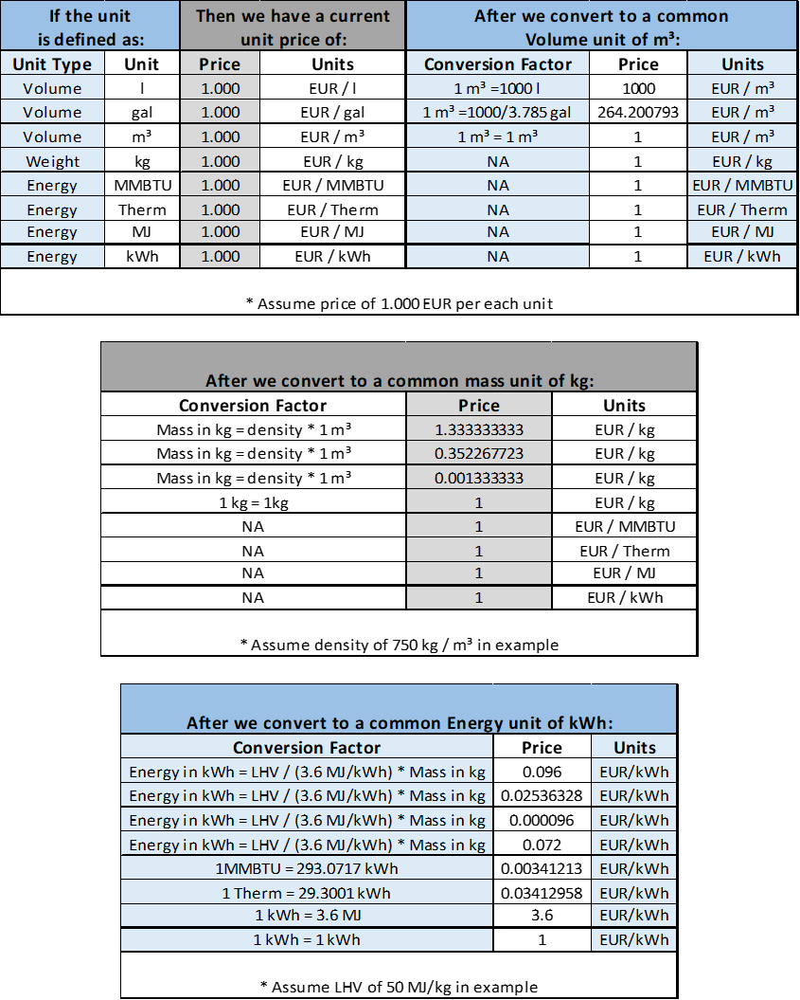
Fuel price conversion to EUR/kWh
Note:
If a constant value is selected, then the units may be freely selected. However, currently,
only kWh are supported for the Time Series option.
A quick way to find the conversion factor from some units into EUR/kWh is to first set the
price to 1 EUR for the unit of the timeseries. Next, set the fuel unit to 'kWh'. The scaling
factor for the time series should be set to the resulting fuel price value.
Note: If a fuel cost with a time series is defined, the annual
multipliers from the time series are used. Any annual multiplier defined for the fuel will be
ignored by the time series. The annual multipliers will continue to be used for any constant
value cost variations.
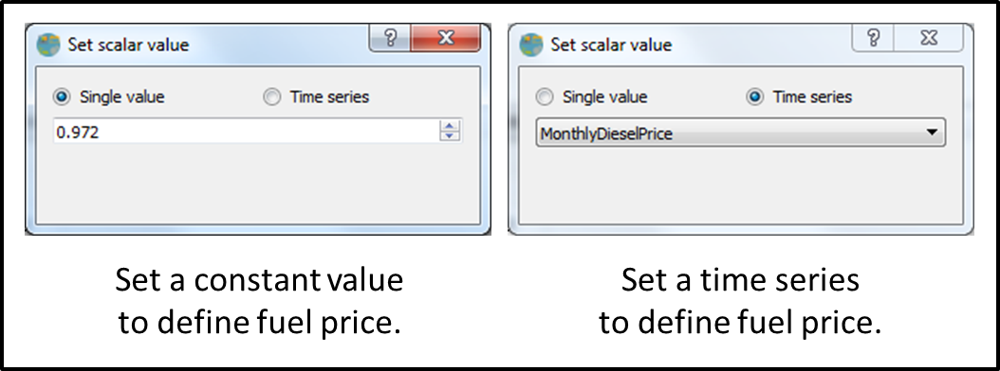
Fuel Cost definition
Decarbonization Study
Decarbonization Study is an alternative to Dispatch Optimization and can be selected with the toggle
button in the tool bar.
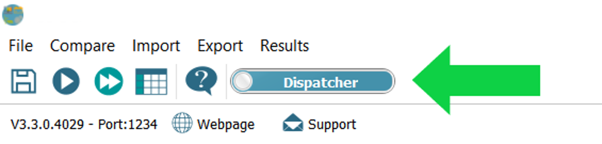
Decarbonization Study
Overview
Decarbonization Study helps determine an unbiased technology type and size suggestion for customer
projects. This sizing algorithm uses “perfect foresight” (i.e. the entire year) to simultaneously
optimize the design and dispatch of an energy system with respect to a weighting in cost and CO2
emissions. It is possible to solve for a specific weighting, or to automatically run multiple
scenarios for differing CO2 emissions. Decarbonization Study is intended for initial design as
simplifications are made in both the algorithm and technology models.
The reference configuration is configured to reflect either the existing energy generation system
for brown- or green- field projects, or the “standard” generation system alternative for greenfield
projects. Relevant loads (electrical, steam, hot or cold water and hydrogen) are also defined. More
complex systems can be modeled by adding additional energy types (buses) and configuring how
technologies are connected. Components can be copied multiple times as necessary.
Opportunities for optimizing cost and/or CO2 emissions are simulated in alternative scenarios.
Technologies of interest can be activated with an associated range of size.
As shown in the diagram below,
cost and CO2 reduction are normally conflicting goals, as lower costs will typically cause higher
CO2 emissions, and lower CO2 emissions will typically require higher costs. The Environmental
Tradeoff Analysis (ETA) automatically creates a range of scenarios with staggered CO2 emissions,
providing an overview of this relationship. For more information about the charts comparing
configurations - see here.
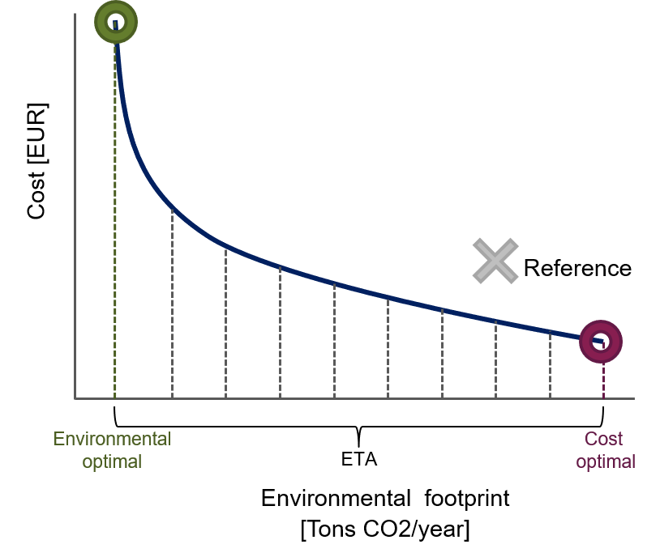
Environmental Tradeoff Analysis
Simulation results provide financial and technical KPIs for each scenario including the size of
opportunity technologies. Technologies that do not benefit the optimization target will have a rated
size of 0. Trends showing the dispatch decision at each time step are scenario are available, and
the energy flow can be viewed in a Sankey diagram.
A scenario from the results can be selected for conversion to a Dispatch Optimization project.
Loads, reference equipment with the rated size and opportunity equipment with the suggested size are
shown. Relevant assets from the ISED library can be
selected from a dropdown and the number of units and/or size can be set. During the conversion, the
selected loads and components are added to the project and relevant timeseries are connected. Any
non-default parameters will be identified for specific consideration. The converted project can then
be used as a basis for simulation in the dispatch optimization.
The following simplifications in the Decarbonization Study algorithm and models are made:
Simulation of either four (4) equidistant weeks in year with extrapolated results, or an entire
year
Simplified models linear models. Characteristics including part-load efficiencies, lower
limits, degradation and ambient temperature correction are not considered.
Multiple year simulations are not possible, so annual multipliers, delayed installation and
replacement strategy are not simulated
Spinning reserve including operating reserve and redundancy is not considered, except as a
buffer for oversizing an asset.
The workflow for the Decarbonization Study is shown in the diagram below.
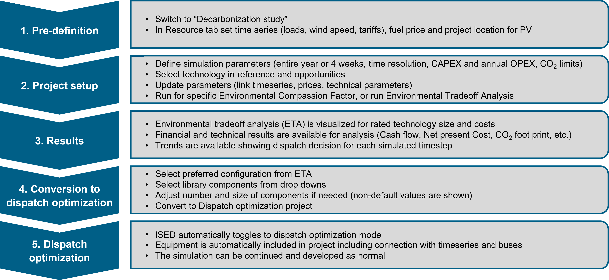
Decarbonization Study Workflow
1. Pre-Definition
ISED can toggle between Decarbonization Study and Dispatch
Optimization in the tool bar.
Activate Decarbonization Study
Timeseries can be defined in the resource tab for:
Loads (electrical, steam, hot and cold water as well as hydrogen)
Import and export prices
Wind (must be connected for wind turbines)
Irradiation (for PV) - if needed not connected, then these will be automatically downloaded from
the Meteonorm DB and connected for the first stimulation. A warning is given if the project
location is still the default.
Fuel prices (these must be connected to the fuel on the resource tab)
Fuels can be configured for:
Price (as constant or timeseries)
CO2 content
2. Project setup
The project needs to be setup for the project on the Decarbonization Study tab. The Simulation Settings
are defined on the left side of the tab, and the System is defined on the right side.
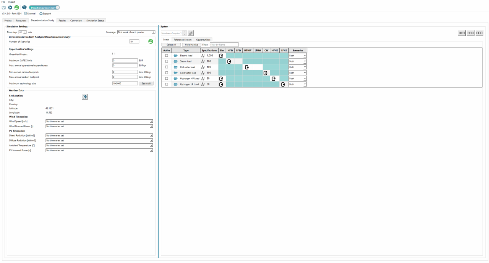
Project Setup
Simulation Settings
The timestep can be defined in minutes. A choice can be made to solve for an entire year, or to save
time by simulating less time throughout the year (i.e. first week of January, April, July and
October).
Opportunities settings:
Greenfield Project
If selected, then the Technologies in the Reference Configuration will not be included in the
Opportunities scenarios. This is typical for a greenfield project. Often there is a clear choice
between 2 distinct alternatives: either a grid with local heating or a microgrid with renewables.
As an example, an industrial site that will be built in 2 years is considering:
Option 1: a large grid connection + boiler for hot water
Option 2: a combination of renewables, storage, and heat pumps with small or no grid connection.
In this case, there is only a large grid connection in the reference scenario, but not in the
Opportunities scenarios.
Maximum CAPEX limit
Maximum annual operational expenses, which includes fuel, O&M, replacements , import and exports
as well as demand charges.
Minimum and maximum CO2 limits (these values also set the CO2 limits for the ETA)
Maximum technology size updates the maximum value of the range for all technologies in the
opportunities as larger sizes will require longer solving times.
Weather data can be configured:
Select location opens the same popup from the Project and Resource tab. Within the popup the
project location can be selected, which will be used to download and connect irradiation data if
PV is simulated in the project and timeseries are not connected.
Wind park - a wind timeseries needs to be connected if wind is simulated
PV park - The timeseries used for PV will be shown.
System
The loads, reference and opportunity technologies can be defined in the System window. It is possible
to copy any load or technologies, as well as add a bus for any energy type. Energy types are kept
consistent in all views. The connection of any load or technology type can be updated by clicking on
the cell representing the preferred bus for the technology. Checks are made to ensure consistency
for technologies that have an input and output of the same energy type. Search, select all, and hide
inactive functions help find and show the technology of interest. Technology parameters are derived
from library equipment, the source for each technology is shown with the mouse-over text.
Loads Loads can be defined as either constant values or timeseries
with the appropriate unit.
Loads can be assigned to the Reference configuration, the Opportunities scenarios, or both using the
dropdown menu. Standard assignment for new and existing projects is both. This functionality can be
used to depict demand side savings by inserting two loads: Load without savings to the reference scenario,
decreased load to the opportunity scenario.
Reference System The Reference System defines the existing
generation system for a brown field project, or the expected generation alternative for a green
field project. Specific technologies need to be selected, and the rated size configured. Any
technology parameter can be updated for a project including timeseries, prices, technical
parameters. Note that the CAPEX for all reference technologies is set to 0 EUR by default.
Opportunities Technologies of interest can be defined in the
opportunities tab. A technology needs to be activated to be considered in a simulation.
A minimum component as well as minimum and maximum project size can be defined.
The minimum component size defines the smallest size that an asset could have, for example, the
smallest gas turbine in Siemens portfolio. It could be possible for the technology to be either
0, or between the min and max range.
The minimum project size is the lower limit specified for a project. Al least this size of
technology must be installed. For example, a customer may specify that at least 1MW of
photovoltaic must be installed.
The maximum project size is the upper limit for the size considered in a simulation.
Note: Simulation speed is affected by all three parameters.
Simulation speed is affected by all three parameters. Nonzero values for minimum component size will
cause slower simulation, while reducing the maximum project size may increase simulation speed. All
of the maximum values can be set for a project with the parameter "Maximum technology size" in the
Limits section of the Simulation Settings.
Any technology parameter can be updated for a project, including timeseries, prices, technical
parameters
A fixed spinning reserve can be set for the following components:
Gensets
Reciprocating engines (CHP)
Gas turbines
Steam turbines
For Electrical Grid Connections Net metering can be activated.
Net metering is an incentive mechanism used in the US for encouraging photovoltaic
installations.
It
provides revenue by crediting excess energy generated by PV when it is exported to the grid. The
exported energy is credited at the same price that electricity is imported, thereby offsetting
electricity import costs that occur in the same month.
The credit system can only offset imported energy costs, so that the monthly energy bill is
lowered.
It is not possible to credit more energy than is imported, so the monthly energy bill can never
be
positive. If additional energy is exported, then the credits can be carried to a future billing
period. Therefore, it is possible to accumulate credits in summer, and use these during winter
months when there is less PV generation.
As an approximation ISED enforces that the amount of
annual exported energy to the grid cannot exceed the amount of annual imported energy.
State legislation, regulation and implementation means that the specific credit mechanism varies
by
location. These details are not modelled in ISED.
Net metering is not supported for custom period simulations.
Simulation A simulation can be run for the cost-optimal case plus the reference case.
As an alternative, multiple scenarios can be run as
an Environmental Tradeoff Analysis (ETA) plus the reference case. The number of scenarios in the ETA
can be defined, and an algorithm will automatically calculate the CO2 footprint for the minimum cost
and minimum CO2 scenarios. These CO2 footprints will be divided equally by the remaining number of
simulations, which is then used as a target for the optimization for each scenario. The simulation
should normally result in scenarios with regular step increases in their CO2 footprints.
Warnings will be given if:
The simulation is infeasible, for example if insufficient generation exists for a load
PV is included in the simulation and project location is default
Loads are activated with standard parameters (this is considered unlikely)
Prices for fuels that are simulated are default (this is considered unlikely)
Note on Infeasible Projects:
The algorithm used to simultaneously size and dispatch technologies is very different than the
ones used for Dispatch Optimization projects. Therefore, it is difficult for ISED to give targeted feedback for why exactly a problem is
infeasible. Especially for complex projects, several factors could be the cause. Here, we
describe a general process for identifying why a project is infeasible, and tips for how to make
your project feasible.
General Causes and Solutions for Infeasible Projects:
Insufficient Generation: On at least one bus, there isn't
enough power to meet a required load. Consider adding an expensive power source to each bus
until the project becomes feasible, or increasing the maximum size of the considered
technologies.
Excessive Generation: On at least one bus, there is too
much power available that cannot be dealt with. Consider adding Thermal Vents, Electric Load
Banks, or allow External Energy Networks to export power. This error is common if a Gas
Turbine or Gas Engine produces too much thermal power.
System Cost Constraints: The 'Max. initial investment' or
the 'Max. annual operating expenditures' limits are exceeded. Note that the Decarbonization Study
algorithm uses slightly simplified calculations of costs relative to the
ISED KPI calculations. This can lead to minor
discrepancies (usually much less than 1%) between the two algorithms. Consider relaxing
these system cost constraints slightly.
System Carbon Footprint Constraints: The 'Min. annual
carbon footprint' or the 'Max. annual carbon footprint' limits cannot be met. Note that the
Decarbonization Study algorithm uses slightly simplified calculations of carbon relative to
the ISED KPI calculations. This can lead to minor
discrepancies (usually less than 1%) between the two algorithms. Consider relaxing these
system carbon constraints slightly. Also check that the fuel carbon content (on the
resources tab) and the carbon content in External Energy Networks are correct.
3. Results
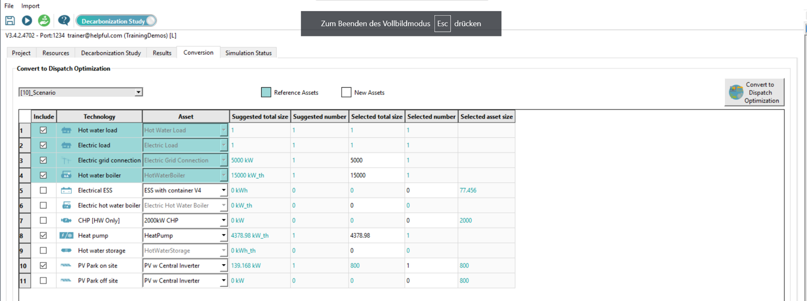
Decarbonization Study Results Tab
Results are shown as a tab. The left window shows an overview of the simulated configurations. Each
configuration is shown as a column, with the recommended sizing for each component shown as rows in
this table. Reference System components are listed first, and Opportunities are listed afterwards.
If a component is not recommended, then the sizing will be listed as "0".
A specific scenario can be selected by either clicking on the table - or via the dropdown box. Once
selected, the results for a scenario are shown on the right window. The view is consistent with the
results for Dispatch Optimization results, see above for details. Specifically, this includes:
Cash flow
Technical KPIs
Indicative LCoE
Messages
Sankey
Plots can be shown for all scenarios, or for a selected scenario.
Additionally, the KPI selection tab can be used to select specific results from selected scenarios.
4. Conversion
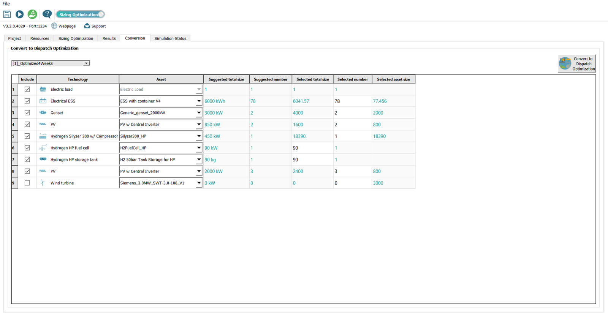
Conversion Tab
In the Conversion tab the user can view the simulated technology and suggested sizes for the selected
scenario. For each technology a dropdown is provided for the relevant assets in the ISED library. The number of units that are suggested to
installed is calculated to ensure that more than the suggested capacity is installed. The user can
override the suggested number of assets in the Actual number column. Generic assets that do not have
a specific capacity simply take the suggested power e.g. boilers, electrical grid connection, etc.
Once the correct assets have been configured these can be downloaded to a ISED project with the "Convert to ISED" button.
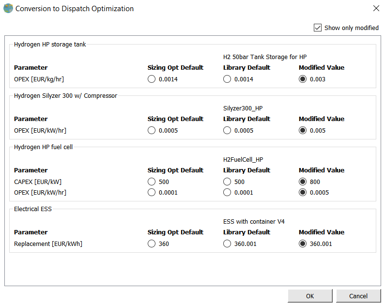
Conversion Popup
Timeseries used in the Decarbonization Study are automatically connected to the relevant asset. Any
parameters that have been changed from the default will be shown, and the user can choose which
value should be used in the new Dispatch Optimization assets
Environmental Tradeoff Analysis
The Environmental Tradeoff Analysis allows the user to automatically compare different weightings of
cost versus environmental impact (as quantified by Carbon Footprint). If 10 stages are selected,
then the reference case + 10 configurations (varying from full environmental emphasis toward full
cost emphasis) will be optimized.
The results of this analysis can then be examined in the dedicated chart views, or in the standard
table view (previously described in the Results section of the Workflow.
Environmental Tradeoff Analysis Charts
Opportunities Rated Power and Capacity
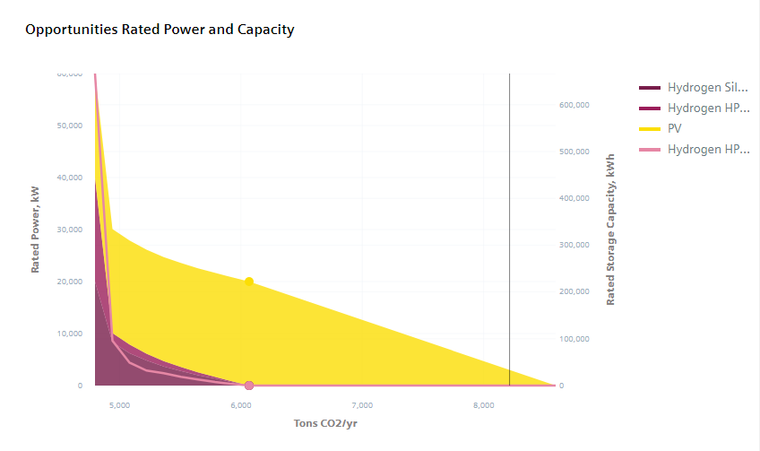
Opportunities Rated Power and Capacity
The first chart describes the optimized rated sizes of the Opportunities in each configuration. All
power generating or transformation assets are described in units of kW (or kW_th) and energy storage
units are described in units of kWh. The horizontal axis shows the annual carbon footprint for the
particular configuration. More environmentally friendly configurations are further to the left.
Typically, the Reference case is furthest to the right.
By moving the mouse over the various configurations, it is possible to see recommended sizes for
each component. By clicking on a point, it is possible to select a configuration to see the detailed
KPIs on the right part of the screen.
Costs
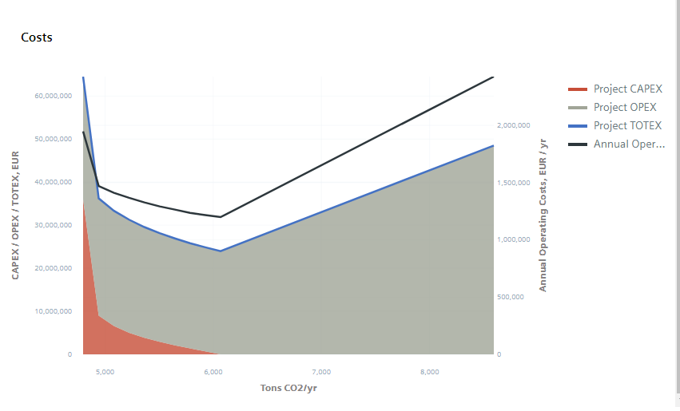
Costs
The second chart describes the costs associated with each configuration. Again, the horizontal axis
shows the annual carbon footprint for the particular configuration. More environmentally friendly
configurations are further to the left. Typically, the Reference case is furthest to the right.
Typically, costs will be highest in the reference case and in the most environmentally friendly
configurations, as these imply the greatest investment in new assets.
By moving the mouse over the various configurations, it is possible to see the specific cost
breakdowns for a configuration. The following cost KPIs are computed:
Project TOTEX - Total system cost over project lifetime
Project CAPEX - Initial system investment cost
Project OPEX - Total system operating cost over project lifetime (including O&M, fuel, import
costs...)
Annual Operating Costs - The total system operating cost for the first year
By clicking on a point, it is possible to select a configuration to see the detailed KPIs on the
right part of the screen.
Equipment Tab
Basic Functionality
On this tab, the user can see the library of different assets of different types of technologies,
create an energy system by connecting assets, and customize the assets by setting parameter
values.
User Interface Basics
Asset Library
Asset Library Section
In the Asset Library section, the available assets are shown in one table
with the
following data:
Asset type Type of the asset.
Library asset Name of the asset, identifying a
specific
library asset
Note: Depending on the type of license you have, you may
not have
access to all of these asset types.
A 'small' license contains only electrical asset types
A 'medium' license contains electrical and thermal asset types
A 'large' license contains electrical, thermal, and hydrogen asset types
These are noted in the list below with a (S)(M) or (L), indicating whether the
component is
present
for
a given license type.
Currently the following category types are supported in the library. Within
each
category exist potentially multiple asset types:
Loads
Load (M)(L)
DeferrableLoad (S)(M)(L)/li>
SteamLoad (M)(L)
HotWaterLoad (M)(L)
ColdWaterLoad (M)(L)
H2Load (HP Hydrogen Load) (L)
H2Load (LP Hydrogen Load) (L)
Electric Vehicle Charging Stations
EVStation (S)(M)(L)
External Energy Networks
Grid (S)(M)(L)
DistrictSteam (M)(L)
DistrictCooling (M)(L)
DistrictHeating (M)(L)
H2Network (HP Hydrogen Network) (L)
H2Network (LP Hydrogen Network) (L)
Wind Turbines
ImportedWT (S)(M)(L)
WindTurbine (S)(M)(L)
Photovoltaic Systems
ImportedPV (S)(M)(L)
InternalPV (S)(M)(L)
Electric Energy Storage System
Energy Storage System (ESS) (S)(M)(L)
LithiumIonBatter (S)(M)(L)
Reciprocating Engines
GenSet (S)(M)(L)
DualFuelGenset (S)(M)(L)
CHP (M)(L)
Gas Turbines
AeroderivativeGT (M)(L)
IndustrialGT (M)(L)
LargeFrameGT (M)(L)
GenericGT (M)(L)
H2Turbine (Hydrogen Turbine) (L)
Steam Turbines
SteamTurbine (M)(L)
Steam Systems
SteamLoad (M)(L)
SteamTurbine (M)(L)
SteamBoiler (M)(L)
CoalFiredSteamBoiler (M)(L)
ElectricSteamBoiler (M)(L)
HighTemperatureStorage (M)(L)
SteamValve (M)(L)
SteamVent (M)(L)
Hot Water Systems
HotWaterLoad (M)(L)
DistrictHeating (M)(L)
HotWaterBoiler (M)(L)
CoalFiredHotWaterBoiler (M)(L)
ElectricHotWaterBoiler (M)(L)
HeatPump (M)(L)
HotWaterStorage (M)(L)
HotWaterValve (M)(L)
HotWaterVent (M)(L)
Cold Water Systems
ColdWaterLoad (M)(L)
DistrictCooling (M)(L)
AbChiller (M)(L)
CompressionChiller (M)(L)
ColdWaterStorage (M)(L)
ColdWaterValve (M)(L)
ColdWaterVent (M)(L)
Cable, Valves, and Vents
Cable (S)(M)(L)
ElectricLoadBank (S)(M)(L)
SteamValve (M)(L)
SteamVent (M)(L)
HotWaterStorage (M)(L)
HotWaterValve (M)(L)
HotWaterVent (M)(L)
ColdWaterStorage (M)(L)
ColdWaterValve (M)(L)
ColdWaterVent (M)(L)
H2Compressor (L)
H2Valve (L)
Hydrogen Systems
H2Load (HP Hydrogen Load) (L)
H2Load (LP Hydrogen Load) (L)
H2Network (HP Hydrogen Network) (L)
H2Network (LP Hydrogen Network) (L)
Electrolyzer (L)
H2Turbine (Hydrogen Turbine) (L)
H2FuelCell (Fuel Cell) (L)
H2Compressor (Hydrogen Compressor) (L)
H2Valve (Hydrogen Valve) (L)
Process Plant (Ammonia Plant) (L)
Process Plant (Ammonia Plant [HW]) (L)
Process Plant (Endothermic Plant) (L)
Hydrogen Storage Systems
H2Storage (L)
Central Equipment
FixedCosts (S)(M)(L)
MGC (S)(M)(L)
Multi-Step (S)(M)(L)
In order to deploy a given asset, it has to be dragged to the assets table
in the
bottom left corner.
Assets
In the assets section, the currently deployed and configured assets are
shown.
Asset Section Details
Copy asset Inserts the given number of copies of the
selected
asset to the deployment. The asset to be copied must already be part of the deployment.
Assets
cannot be copied from the library.
Save to asset library... Save the selected asset and
its
configuration to file and automatically add it to the asset library. Assets should be
saved to
the default UserLibrary in order to ensure that they will be available for future use.
Delete asset Delete a asset from the deployment. The
asset
table has the following columns:
The lower left-hand side of the Equipment Tab contains a tabular
overview of
the current project setup.
Double clicking on the header row will collapse/expand all asset types.
Double clicking on a single asset type will collapse/expand only this asset type.
The table has the following columns:
Asset type The type of the asset.
Asset name The name of the asset. This entry is
editable
and must be unique within a project.
Reference If a asset is labeled by the user as a
Reference,
it is included into the reference configuration. In the Topology Tab such assets are
shown
with a green background.
Replacement If a asset is labeled by the user as a
Replacement, then this asset will not be installed at the beginning of the
simulation.
Rather it is installed after a separately defined asset reaches its end of life. In
the
Topology Tab such assets are shown with a purple background.
Owner The owner which is assigned to a asset. The
owner is
charged with all expenses associated with a asset and all its revenues.
Summary Displays a short summary of important KPIs
for each
asset. If multiple configurations for a asset exist within one project a table is
shown.
Topology
This topology section is a simplified version of Topology Tab. "Show
frame
lines, Show names and Fit in view" from the tool bar are shown here and same
manipulations can
be applied.
Parameters
The parameters section shows the parameters and their values of the
deployed asset,
which has been selected in the assets table. It has two buttons:
Add variation
If a particular parameter value is selected in the table below,
clicking the
"Add variation" Button will add a new variation to the table to allow editing a
variation to
this parameter. The new parameter will become part of the search space.
Remove variation
If a parameter value is selected, clicking on the "Remove variation"
button
will remove this parameter value from the search space.
Parameter categories
Base The "Base" view can be enabled (blue) or disabled
(grey).
No categories are selected: When "Base" is enabled only the base parameter are
shown. When
"Base" is disabled all parameters are shown.
One or more categories are selected: When "Base" is enabled the base parameters AND
the
parameters belonging to the selected categories are shown. When "Base" is disabled
only the
parameters belonging to the selected categories are shown.
Other Categories They can be enabled (blue) or disabled
(grey).
It is possible to select none or multiple categories. When one or more categories are
selected
only the parameters belonging to the selected categories are shown.
Filter by parameter name
This search and filter parameters can be used to filter in more detail
for text
inside of the parameter name. This filter is applied only to the currently visible
parameters.
To filter for multiple words use " " (whitespace), "," (comma) or ";" (semicolon). This
text
filter is based on an OR concatenation. This means that when looking for multiple values
a
parameter will be shown if one of the values matches the filter. An Example: "Fuel,
Energy; kw
cost" will return a parameter containing one of the four substrings. If the parameter
name is
"Cost function" this parameter will be visible when using the above filter string.
Search and filter for parameters
Parameter Table
The parameter table has the following columns:
Parameter Name of the parameter. Hovering over this
field
with the mouse will yield a short help description.
Base The base parameter value of this
configuration. These
values will be used for the reference configuration and for any other configurations
if no
variations are specified.
Variation All variations of the parameter that are
included
in the search space.
Special Parameter Types
Each asset type will have some parameters which are unique to that particular
type.
However, many parameters are common between many or all assets. Here, some of these parameters,
especially those which are particularly complex, are described.
Price Matrix
Price Matrix
The Price Matrix is common to all assets. It describes the main economic
aspects of the asset.
Size: the size for which the prices are set
CAPEX: initial price for an asset
OPEX: hourly cost for an asset
Replacement Price: the price for replacing an asset
Annual Multiplier: multiplier for replacement cost, in
case
of delayed install this multiplier is also used for CAPEX. This does not affect OPEX.
Year: year in which the multiplier is being applied
CAPEX, OPEX and Replacement Prices are for a turnkey delivery including logistics,
installation
and commissioning. The price should include gross margin, risk, and other margins. Every
project
has its own specific costs e.g. labor, logistics, risk etc., the user needs to make sure
that
the price used is suitable for the project. The values provided in the tool are typical
values
provided by experts, and can be used as an indication on the type of value that might be
expected.
Price Matrix
As shown in the figure above, the Price Matrix can have multiple rows. In each row, a
specific
size is listed, and then the corresponding CAPEX, OPEX, and Replacement Price for that size
can
be defined. Then, the prices at other sizes can be calculated by interpolation (red example)
or
extrapolation (purple example). For the special case where only a single row is defined
(blue
example) the prices are extrapolating assuming 0 price at 0 size.
Heat Balance Table
Heat Balance Table (HBT)
Some assets allow the user to directly enter a range of set points for all
power and fuel flows within a asset. Each asset with a heat balance table interprets these
values in a slightly different manner; please refer to the specific sections on each asset.
However, all assets that have a Heat Balance Table will also have some type of "Rated
Power", be
it electrical, thermal or Hydrogen output.
If the "Rated power" parameter is different than the output power value in the last row of
the
heat balance table, then all values (power, fuel consumption, hydrogen, etc.) are scaled by
the
factor Rated power / Output power value in the last row of the heat balance table. This
ensures
that the efficiency remains unchanged.
If a configuration has two or more assets that are identical, then it can occur that an infinite numbers of different power-dispatch solutions (combinations of power levels of assets) will have the same global effect (economical value). By nature, two identical asset will lead to at least two optimal power dispatch solutions that are economically equally viable and can be transformed into one or the other by exchanging the power setpoints of the two assets.
These symmetries can slow down finding the optimum solution. For speed, ISED uses symmetry breaking techniques. Based on an internal ranking, asset usage is disincentivized with a very small, unique factor per asset. This very small weighting between assets shall not influence the overall economical evaluation of the configuration. When economical evaluation has multiple equal solutions, the dispatch of identical assets tends towards a fixed priority ranking. As an effect, you will experience dominant/ordered dispatch behavior among multiple identical assets. In other words, identical assets tend not have the same power solutions as might be expected.
An easy example: two identical assets A and B with rated power 100kW and constant efficiency (no minimum power requirements, no additional OPEX / other costs, etc.) shall cover a constant load of 100kW. Optimal power dispatch solutions are:
A: 100kW, B: 0kW
A: 50kW, B: 50kW
A: 0 kW, B: 100kW
In fact, there are infinitely many equivalent solutions, namely all, that have a combined power output sum of A and B equal to 100kW.
ISED symmetry breaking will disincentivize the power production of asset B with a very small weighting factor and as a result the optimal solution presented by the dispatch optimizer will be:
A: 100kW, B: 0kW
Minimum or Maximum Power Output
Many assets that have a heat balance table also contain parameters that
describe the minimum and maximum output power (as a function of time).
Minimum and Maximum Load for Assets with a Heat Balance Table
The assets that have a starting mode (Gas Turbine, Gas Engine, Steam Turbine) are not limited
by
a minimum power while starting. Similarly, Maximum output is only a limiting factor if it is
less than 100%:
Minimum output power < First row of HBT -- First row of HBT is active
Minimum output power > First row of HBT -- Minimum output power is active
Maximum output power < Last row of HBT -- Maximum output power is active
Maximum output power > Last row of HBT -- Last row of HBT is active
For assets without a starting mode (Boiler, CompressionChiller, HeatPump, Electrolyzer,
FuelCell), the minimum and maximum out powers are always active, as long as they are between 0
and
100%:
Minimum output power < First row of HBT -- Minimum output power is active
Minimum output power > First row of HBT -- Minimum output power is active
Maximum output power < Last row of HBT -- Maximum output power is active
Maximum output power > Last row of HBT -- Last row of HBT is active
Note: Gas Turbines (GTs) are the only asset that presently
have
a temperature correction for efficiency and power. The “Minimum allowed electrical power
[kW]”
timeseries is unaffected by the temperature correction. For example, if a GT has a lower
limit
in the Heat Balance Table (HBT) of 10MW at ISO conditions (15C and 1013mbar), at lower
temperatures generally the power output and efficiency as defined in the HBT will increase.
If
the “Minimum allowed electrical power [kW]” is set to 10.5MW, then this will be active until
the
temperature is so low, that the lower limit in the HBT exceeds this. The same logic in
reverse
applies for the upper limit.
Outages schedule
Outages overview
Outages Definition Max: In January, the asset is down everyday from 2am to 5am.
Many assets have an outages schedule which reflects scheduled/unscheduled downtime of the asset.
While in such a period, the asset may not produce or consume power.
In the Overview tab, the outages over the entire year are visualized.
To define the downtime, the user selects a year and switches to the Definition Max tab.
Here the user can define the downtimes on an hourly base for every single day in a month by
marking the corresponding downtime hours as "0" (default color = blue).
The user can then apply the defined downtime of any defined month to any other month.
When switching back to the overview, the outages schedule of one year can also be applied to other years.
Note: It is possible that when generating downtime events
in
this way, that multiple downtime events will overlap. As a result, fewer individual events
may
seem to occur, with a longer downtime.
To define planned downtime, the user may load a profile via text file. A
valid
file has two values per line (timestamp) (value). Where (timestamp) is the time in seconds
from
the beginning of the year, and (value) =0 if in downtime, and (value)=1 if not in downtime.
This
time series supports a sparse formatting, and so only transitions (breakdowns and repair
times)
must be included.
Availability
Availability
Many assets have an Availability parameter, which allows the user to
include
planned or unplanned downtime. While in such a period, the asset may not produce or consume
power. To define unplanned downtime, the user can define the number of expected faults per
month
throughout the year, as well as the minimum and maximum amount of downtime per occurrence.
Note: It is possible that when generating downtime events
in
this way, that multiple downtime events will overlap. As a result, fewer individual events
may
seem to occur, with a longer downtime.
To define planned downtime, the user may load a profile via text file. A
valid
file has two values per line (timestamp) (value). Where (timestamp) is the time in seconds
from
the beginning of the year, and (value) =0 if in downtime, and (value)=1 if not in downtime.
This
time series supports a sparse formatting, and so only transitions (breakdowns and repair
times)
must be included.
Potential errors include:
Text characters - only "0" and "1" are valid entries for an availability time series
values.
Commas - In some countries, commas are used to denote values smaller than 1. Do not use
commas in ISED
Thousand separators - Do not use comma separators when loading a time series for
thousands,
millions, etc.
Time stamps must be increasing - Do not list the availability out of chronological
order.
This is relevant especially for multiple years. e.g. 1 minute = 60s. 1 year = 365 * 24 *
60
* 60 = 31536000. The first minute of year 2 = 31536000 + 60 = 31536060.
Replacement Strategy
Replacement Strategy Pop-up with Default Strategy
Many assets have a replacement strategy parameter, which allows the user to
specify what happens with the asset after its end of life is reached. If the user does not
specify anything the default strategy is applied.
The default strategy is that the asset is replaced by an identical asset
with
exactly the same configuration except that the lifetime counter is reset to the maximal
lifetime.
The second replacement strategy is that the asset will be removed from the
deployment after its end of life is reached.
The third replacement strategy is that the asset is replaced by possibly
multiple other assets. This means that the asset is removed from the deployment after its
end of
life is reached and instead possibly multiple other replacement assets are installed. Once
the
user has chosen this option the available replacement assets are shown and can be marked,
see
this figure. The available set of replacement assets consists of
those
assets for which the replacement column is checked in the asset section; Furthermore, each
replacement asset can only be installed as replacement for one specific asset. For this
reason
only those replacement assets are listed in the figure which are
not
yet assigned to another asset.
Pop-up with Replacement by other Assets
Other Common Parameters
Must Run: For a asset, if the 'Must run' parameter is set to 'true', then
the
minimum allowed power is always enforced. If the minimum allowed power is not zero, this
will
mean that the unit must be running, and cannot turn 'Off'. If it is not possible to operate
the
asset at at least the minimum allowed power, then this will trigger a blackout. The 'Must
run'
parameter does not affect starting modes (e.g. gas turbine, CHP, steam turbine).
Maximum annual full load hours: The maximum number of full
load hours that each individual unit is allowed to operate during a year.
For generators, this value is per generator unit. If this
value is empty, then it is ignored.
Maximum annual running hours: The maximum number of running hours
that each individual unit is allowed to operate during a year.
For generators, this value is per generator unit. If this
value is empty, then it is ignored.
Full load scaling factor: This value scales with the
rated capacity of an asset. This value is used to determine the amount of
'Full load hours' that an asset has operated in a year,
which can be limited by the 'Maximum annual full load hours [h]' parameter.
Loads
Electric Load
Electric Load in Topology View
Overview - "What is this asset"
Electric Load is the load that serves the DES customer needs. It
usually does
not contain losses. Losses are assumed to associate with assets and must be
parameterized there.
An electric load may be assigned costs for not satisfying it. This can be used for
example to
quantify blackout costs.
Important: In the financial analysis the owner of a
load is not
necessarily the beneficiary. This is always the offtaker. The owner is just the party to
which
possible non-conformance costs are associated.
Parameters - by category
Capacity
Load [kW]
A time series describing the requested load in [kW]
Default load [kW]
When no time series is set for "Load[kW]", this value is used.
Stability (Grid, OR)
Operating reserve
Operating reserve is additional energy that the dispatcher must ensure available
(e.g.
online), so that if an unexpected change in either load or generation occurs. This
concept
allows short term changes in loads and renewable energy generation to occur without
causing
blackouts, because additional generation is available to meet these changes.
Operating
reserve has an associated cost, as it requires more generation to be online,
therefore a
system should be defined so that only the necessary operating reserve is kept.
Relative Operating reserve [pu]
A time series describing the required relative operating reserve. The relative
operating
reserve is calculated by a factor of the load and the timeseries at each time step.
Therefore, if the load or the time series increases in a time step, then the
relative
operating reserve also increases.
Default relative operating reserve [pu]
If no time series is set for "Relative Operating Reserve [pu]", this value is used.
This is
a fixed value that is multiplied with the load at each time step. Therefore, if the
load
increases in a time step, then the relative operating reserve also increases.
Typcially
relative operating reserve is set to cover multiple loads that accumulate as the
load
increases.
Peak Operating Reserve [pu]
A time series describing the required peak operating reserve. The maximum load
value in a
year is multiplied with the Peak Operating Reserve time series at each time step.
Therefore,
if the time series increases in a time step, then the peak operating reserve also
increases.
Default Peak Operating Reserve [pu]
If no time series is set for "Peak Operating Reserve [pu]", this value is used. The
maximum
load value in a year is multiplied with the Peak Operating Reserve default value at
each
time step. Therefore, the peak operating reserve is constant independent of whether
the load
increases at a time step or not. Typically the peak operating reserve is set for the
largest
load in a system that might start unexpectedly, e,g. a large motor; so that enough
operating
reserve is always available when the load is started.
Requires redundancy
If true, the load requires the existence of redundant power generation
capabilities. This
parameter is only active if the dispatcher must provide redundancy. If a load is
critical
and must be considered in the redundancy calculation then this value should be true.
If a
load is defined as non-critical and does not need to be considered in the redundancy
calculation, then this value should be false.
Shedding
Shedding priority
When Shedding Priority is -1, this is a primary load, otherwise it is sheddable.
When the loads cannot be met, sheddable loads can remain unfullfilled.
Sheddable loads with high priority numbers are shedded first. All sheddable
loads with
the same priority are shedded simultaneously.
Starting priority
After being shed, loads with low priority numbers are started first
Shedding event cost [EUR]
One-time cost incurred when load is shed, e.g. penalties due to startup times for
the
production process, damaged equipment replacement costs
Shedding time cost [EUR/h]
Hourly cost incurred while load is shed, e.g. penalties due to production losses
over time.
Minimum shedding duration [s]
Minimum required downtime before safe operation may resume
Ramp rate after shedding [%/s]
Ramp up of load can take a certain time (relative to requested power). A value of 1
means
that it will take 100 seconds to ramp up the full load after a shedding event.
Time
Installation delay [y]
The time delay (in years) after simulation start at which the asset is installed.
CAPEX is
booked and OPEX start after this delay. A delay of 5 years means that the unit
starts
producing at the beginning of year 6.
Explanation for Load Model
Loads require a certain amount of Operating Reserve, how much is
specified in
the corresponding parameters. That means, other assets should be able to deliver an
additional
amount of power to guard against short term fluctuations. Moreover, if redundancy is
required, it
is ensured that
Loads that are not tagged as primary loads can be shedded, i.e. the
dispatcher
can decide not to fulfill these loads and pay the specified shedding costs instead.
Deferrable Load
Deferrable Electrical Load in Topology View
Overview - "What is this asset"
This is a load that can be connected to a reservoir. Together the load
and the
reservoir allow configuring a deferrable load, i.e. a load that must be satisfied at
some point,
but is decoupled by storage. A water tower with an outflow is a good example. The "water
load"
must be satisfied but this imposes no restrictions on the electrical load of the pumps
as long
as the tank is not empty and not full.
Parameters - by category
Economics
Charging incentive [EUR/kWh]
The deferrable load increases storage only when power is available at cost below
the value
of the charging incentive [EUR/kWh]
Capacity
Load [m³/h]
A timeseries for the outlet flow rate from the deferrable load's storage, e.g. for
a fluid
reservoir this may be a volume flow rate [m³/h]
Default load [m³/h]
When no time series is set for "Load", this value is used.
Conversion curve [x: kW, y:m³/h]
Curve defining transfer function from electric input power in kW into inlet flow
rate. e.g.
for a fluid reservoir, this may be in [m³/hr / kW]. The upper and lower limit
of the
curve also define the limits of operation for the load, i.e. maximum and minimum
power
consumption at a given time.
Storage capacity [m³]
Maximum capacity of the deferrable load e.g. for a fluid reservoir this may be in
[m³]
Maximum capacity timeseries [%]
Timeseries defining the maximum allowable fraction of the storage capacity [%]
Default maximum capacity [%]
When no time series is set for "Maximum capacity timeseries", this value is used.
Minimum capacity timeseries [%]
Timeseries defining the minimum allowable fraction of the storage capacity [%]
Default minimum capacity [%]
When no time series is set for "Minimum capacity timeseries", this value is used.
Stability (Grid, OR)
Relative Operating reserve [pu]
A time series describing the required relative operating reserve.
Default relative operating reserve [pu]
If no time series is set for "Relative Operating Reserve [pu]", this value is used.
Peak Operating Reserve [pu]
A time series describing the required peak operating reserve.
Default Peak Operating Reserve [pu]
If no time series is set for "Peak Operating Reserve [pu]", this value is used.
Requires redundancy
If true, the load requires the existence of redundant power generation capabilities
Shedding
Shedding priority
When Shedding Priority is -1, this is a primary load, otherwise it is sheddable.
When the loads cannot be met, sheddable loads can remain unfulfilled.
Sheddable loads with high priority numbers are shedded first. All sheddable
loads with
the same priority are shedded simultaneously.
Starting priority
After being shed, loads with low priority numbers are started first
Shedding event cost [EUR]
One-time cost incurred when load is shed, e.g. penalties in PPA, damaged equipment
replacement costs
Shedding time cost [EUR/h]
Hourly cost incurred while load is shed, e.g. penalties in PPA, cost for loss of
production
Minimum shedding duration [s]
Minimum required downtime before safe operation may resume
Ramp rate after shedding [%/s]
Ramp up of load can take a certain time (relative to requested power). A value of 1
means
that it will take 100 seconds to ramp up the full load after a shedding event.
Time
Initial capacity level [%]
The initial capacity level of the deferrable load storage reservoir, as a fraction
[%]
Installation delay [y]
The time delay (in years) after simulation start at which the asset is installed.
CAPEX is
booked and OPEX start after this delay. A delay of 5 years means that the unit
starts
producing at the beginning of year 6.
Explanation for Deferrable Load Model
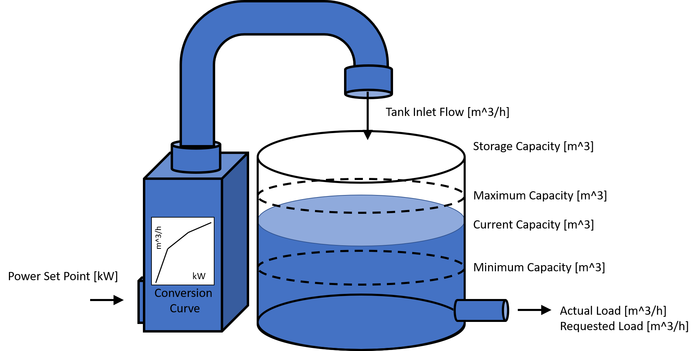
Deferrable Loads Model Explanation
Deferrable electric loads are loads that have some flexibility in when
they
need to be fulfilled. Flexibility means that the power required for the load can be
supplied at
an optimal point in time (e.g. when energy is cheap, or renewable energy is available)
Typically, there is a reservoir or other other physical buffer (e.g. building thermal
latency,
industrial process latency). The model includes a conversion unit (e.g. pump for a water
or
similar) if a ISED model is being used, this
conversion
can be set to 1. The model is indifferent to the medium and storage type. The user must
define
units and conversion. For the example of a water storage reservoir, in order to fill the
water
storage, power has to be used by the pump. The conversion curve specifies how much input
power
is needed for a given flow rate.
In order to make sure, that a single-step dispatcher, which only knows
the
present situation, fills the storage, the charging incentive can be used.
Like electric loads, deferrable electric loads require operation
reserve and
can be shedded.
Thermal Load (Steam, Hot Water, Cold Water)
Various Thermal Loads in Topology View
Overview - "What is this asset"
The Thermal Load allows the user to specify the load which shall be
met, either
using a time series or a constant value. The Thermal Load can also be installed at a
time later
than the start of simulation. The Thermal Load is an optional asset; it is not required
for
simulation, if instead a Deferrable Thermal Load is used.
Parameters - by category
Capacity
Thermal Load[kW_th]
A Timeseries describing the requested thermal load in kilowatts
Default Thermal Load [kW_th]
When no time series is set for "Thermal Load", this value is used.
Time
Installation delay [y]
The time delay (in years) after simulation start at which the asset is installed.
CAPEX is
booked and OPEX start after this delay. A delay of 5 years means that the unit
starts
producing at the beginning of year 6.
Explanation for Thermal Load Model
Currently, all thermal loads are primary loads, i.e. all thermal loads
must be
fulfilled to avoid blackouts.
Hydrogen Load
Hydrogen Load Topology View
Overview - "What is this asset"
The Hydrogen Load allows the user to specify the load which shall be
met,
either using a time series or a constant value. The Hydrogen Load can also be installed
at a
time later than the start of simulation.
Parameters
Capacity
Load [kg/h]
The amount of hydrogen per hour required to satisfy the load.
Losses
Operational losses [kW]
Electric losses incurred during operation. The value is absolute and not scaled
with the
asset size.
Permanent losses [kW]
Electric permanent losses. The value is absolute and not scaled with the asset size.
Electric consumption [kWh/kg]
Auxiliary electricity used to operate infrastructure (e.g. compressors)
proportional to the
flow.
Time
Installation delay [y]
The time delay (in years) after simulation start at which the asset is installed. o
indicates at the beginning of simulation, 1 would be the beginning of the second
year.
Explanation for Hydrogen Load Model
The hydrogen loads are primary loads, i.e. all hydrogen loads must be
fulfilled
to avoid blackouts.
External Energy Networks
Grid
Grid in Topology View
Overview - "What is this asset"
For energy imports the Grid is usually modeled as an IPP with a
grid-asset
inside, which sells energy at cost. By default all grid-assets are assigned to an IPP
called
Grid. All energy export go to some undefined anonymous external grid. Each IPP or
offtaker
generation facility is assigned a tariff, at which it sells to this grid.
Explanation for Grid Model
Demand Charges
The user can choose between two kinds of demand charges: Monthly
Demand Charges and Yearly
Ratchet Demand Charges.
Since the maximum energy demand dictates the size of transmission
lines,
transformers, etc. it may be reasonable to use energy storage systems (ESS) or other
power
generation units in order to reduce the maximum peak power demand from the grid
connection
If the use case Demand Charge
Reduction is
activated (parameters in the UI are set) in the grid asset, the dispatchers 'Robust Single-Step'
and 'Multi-Step'
will take the additional costs from these time-dependent demand charges into account and
relevant KPIs will be computed.
An example Monthly Demand Charge Use Case from California looks like
this:
If the grid connection has an active Monthly Demand Charge Reduction
use case,
for every Tariff the dispatcher keeps track of the maximum power consumption from the
grid (grid
to bus) for every month. If this maximum exceeds the expected peak power for this
tariff, the
dispatcher enforces penalty costs. If you as a user are not able to estimate the
expected peak
power, zero as default input is used. The dispatcher will continually update the current
peak
power and make an economic dispatch decision accordingly.
In the transition phase from one month to the next the dispatcher is
doing the
following:
If no estimate for the expected peak power is given, the dispatcher will implictly
try to
reduce the peak power in the next month down to 80% of the peak power in the current
month.
If a user input is available, the dispatcher tries to reduce the peak in the next
month to
this specific value.
In case of undesired behavior, like increase of peak power in the last
day of a
month, please check your input for expected peak power.
Note: If the Ratchet Demand Charges use case is active,
the
ratchet is reset every year on December, 31st.
Coincidental Peaks
Coincidental Peaks (CPs) consider the electrical energy imported by a customer (at the site level)
during periods when a utility or region has its highest electrical demand in a 12-month period.
Typically, 1 to 5 CPs are used, and these must occur on different days (i.e. there cannot be two CPs on the same day).
Utilities or regions have specific definitions of dates when CPs may occur, and how they are defined.
Service providers track demand and weather conditions to provide a forecast of when CPs might occur.
It is common to have a forecast where up to 20 possible CP events are predicted 24 hours in advance.
Based on this forecast, customers can use ESS, onsite generation or reduce loads to minimize their imported electrical energy during a CP.
These CP forecasts have inaccuracies, and many customers may try to avoid the same potential CP, thereby changing the electrical demand of the utility or region.
Therefore, there is a risk that the actual CP period differs from the forecast CP.
It is common practice to try and reduce loads both before and after a forecast CP to increase the probability of have a low load during the actual CP,
which is determined after the 12-month period is complete.
The following examples of CPs are known to be applied. Other examples may exist:
PJM, US: 5 CPs/a,
ERCOT, US: 4 CPs/a,
NY, US: 2 CPs/a,
ISO NE, US: 1 CP/a,
IESO (Ontario), CA: 5 CPs/a.
Implementation in ISED
For the implementation of Coincidental Peaks in ISED a timeseries is used to define the periods when potential CPs may occur.
Each period should include a forecast CP, as well as any time before or after that is used to minimize risk of missing an actual CP.
The ideas for including this use case into the dispatchers are the following:
If in a time step potentially a Coincidental Peak occurs, the additional costs defined by
“Dispatch: Coincidental Peak Costs [EUR/kWh]” are added to the objective function of the dispatcher.
This discourages the dispatcher from utilizing the grid during potentially
expensive Coincidental Peak
periods.
For the Robust Single-Step Dispatcher this may lead to an empty battery over time. It is
therefore possible to add an additional charging incentive in case of activated triads
depending on the SOC of the battery:
Multiply the existing charging incentive with a factor f(x) determined as a linear interpolation such that
f(BA.maxEnergy) = 1
and
f(BA.minEnergy) = max {1, coincidentalPeakCost}.
Energy Contract
Energy can sometimes be purchased more cheaply in advance for a defined
timeframe. This fixes the costs for both the purchaser and seller over the contract
period. The
Energy Contract algorithm allows this to be modeled in an electrical grid connection.
Energy Contract
The Energy Contract allows:
Activation of the algorithm (Activated)
Definition of multiple energy contracts. Only one contract can be active at a
particular
point in time. Each contract must be assigned to an integer, and a time series
defines the
active contract (Time Series for Defining Active Contract). A “0” value means that
no
contract is active, and the normal grid import and export prices will be used.
The expected consumption of a contract integrated over time. The user must define
how the
energy is expected to be used over time. This is defined in a cumulative timeseries
for each
contract. The algorithm attempts to follow this forecast. The larger the deviation,
the
stronger the incentive is to return to the forecast. For example, it could be that
higher
consumptions are expected during the week, and consumption is lower during weekends.
An
appropriate curve would adjust for this accordingly.
For each contract, the energy price can be defined as a fixed value in Contract
Costs.
For each contract, an overshoot limit can be defined. Within this limit, overshoot
energy
can still be purchased at the contract cost.
For each contract, an undershoot limit can be defined. No costs are incurred for
energy not
purchased in the undershoot range.
For each contract, an overshoot cost can be defined. Any energy that is consumed in
addition
to the expected consumption + overshoot will be purchased at this price.
or each contract, an undershoot cost can be defined. Any energy that is not consumed
relative to the expected consumption - undershoot will incur a penalty at this
price.
Below is an example with two energy contracts.
Contract 1 runs from January to the end of April and then continues from the
beginning of
September until the end of October.
Contract 2 runs from the beginning of May until the end of August.
In November and December there isn’t an energy contract.
Energy Contract Example
Contract 1 and 2 are optimized separately. The timeseries for “Expected
Consumed Energy [kWh]” must start at 0 for contract 2 and return to the last value of
contract 1
end of April when the contract starts again in September.
The parameter “Time Series for Defining Active Contract” must change
accordingly. This means from January to the end of April and from the beginning of
September
until the end of October it has a value of 1. From the beginning of May until the end of
August
it has a value of 2. For November and December, it has a value of 0.
Note that if energy is exported, then the export price is not affected
by the
energy contract and it is exported as defined by the grid export price (constant, time
series or
ToU editor).
Balancing (Ancillary Services)
Grid Providers have to deal with variability in load. Service providers
can
provide Frequency Response and Power Reserve (positive export to grid, negative import
from
grid). Service providers can earn money from availability (declaring balancing
capability) and
utilization (actually providing power for balancing services). There may be a time gap
between
the signal that balancing is required and actual utilization (response time). Out of
scope for
now: Participation decision, a priori decision if assets can meet response time
requirements
(ramps).
Balancing 1
Balancing 2
A preprocessing step is carried out, to determine different "service
modes"
within availability periods. These are also logged within the dispatcher logs as
"balancing
service mode [-]"
Balancing Service Modes
Unavailable
[-2] - The Grid is either unavailable, or is this is not a declared period of
availability
for balancing.
Available
[-1] - The Grid is available, and this is beginning a declared period for
availability for
balancing.
Recovery Time
[0] - Recovery times are sometimes provided by the utility for ancillary services with ESS. It is a period during which the requirements for ancillary services are stopped so that an ESS can be charged or discharged as the ESS operator wants. It means that predominantly periods of charging or discharging the probability that the ESS reaches an SoC limit.
Response Time
[1] - The Grid has been notified of a pending utilization signal.
Utilization
[2] - The Grid is being utilized and is providing balancing within the contstraints
of the
contract.
Balancing 3
If “Balancing – Requested Power” is non-zero outside of periods deemed as "utilization", this will be ignored.
The only information the service provider knows in advance is whether balancing is currently available, and the maximum offered capacities. In particular, it is not known in advance when balancing will be utilized. To simulate this, the “Balancing – Requested power” is not included in the forecast of the multi-step dispatcher.
If the project contains an ESS, the parameters "Required Time for Positive/Negative Battery Reserve" are important. The dispatcher uses these parameters to calculate how much energy must be reserved for ancillary services. The dispatcher then only uses the remaining capacity of the ESS to provide additional functionality. For example, an ESS may provide energy shift peak shaving simultaneously while providing ancillary services.
Balancing parameters
Balancing (Ancillary Services): Activated
Determines if Tariff Use Case "Balancing Services" is active.
Balancing: Offered Availability Time Series
Defines when balancing services are offered. 1 = availability is being offered; 0 when not.
Balancing – Requested power Time Series [kW]
Defines when balancing is requested. Positive values mean "deliver more power to the grid" (decrease import / increase export). Negative values mean "deliver less power to the grid" (decrease export / increase import).
Note:
The requested balancing is deliberately not included in the forecast of the multi-step dispatcher. This is because a utility calls balancing power depending on the state of the network and does not plan balancing events. Therefore, the time of a balancing request is not known in advance.
Balancing: Follow Expected Grid Power Setpoint When Balancing Offered
If true, the time series defined in “Balancing: Expected Grid Power Setpoint Without Balancing Requests Time Series” is used by the dispatcher as the hypothetical reference for grid power setpoint if balancing had not been offered. It is only respected when balancing is offered (i.e. the same if the balancing service mode = -1, and this setpoint minus the Requested power when the balancing service mode = 2.
Balancing: Expected Grid Power Setpoint Without Balancing Requests Time Series [kW]
Defines the expected power setpoint of the grid if the balancing request = 0. Positive values mean "import" negative values mean "export". This timeseries is not interpolated.
This is useful in projects with loads and on-site generation, for example PV or a CHP. Utilities will expect sites that provide balancing power to show that they have added or reduced power relative to their “normal” grid consumption. This time series represents the normal grid consumption.
For generation only projects, then this time series should normally be zero.
The easiest way to define this time series is to run a project with balancing deactivated, and then copy the electrical grid power setpoint.
The easiest way to define this time series is to run a project with balancing deactivated, and then copy the electrical grid power setpoint.
This time series is only respected if “Balancing: Follow Expected Grid Power Setpoint When Balancing Offered” is set to true.
Balancing: Max. Offered Positive/Negative Balancing Power [kW]
Positive: Maximum positive balancing power (increase of export to grid / reduction of import from grid) as Time Series. This timeseries is not interpolated.
Negative: Maximum negative balancing power (increase of import from grid /reduction of export to grid) as Time Series. This timeseries is not interpolated.
If ESS is used for balancing, then this parameter is used together with the parameters “Balancing: Required Time For Positive/Negative ESS Reserve [s]” to determine the ESS SoC so long “Balancing – Requested power Time Series” = 0kW.
Balancing: Response Time [s]
Maximum response time to a balancing request, typically defined by the network utility.
The response is typically intended for different technologies. Shorter response times typically have higher revenue. Gas turbines might participate in a market with a 15-minute response time, ESS is often used in a market with a response time < 2 seconds.
This parameter should be equal or longer than the simulation timestep (ideally it should be a multiple of the timestep).For example, for ESS set this to 0. For other assets like GTs that have a longer ramp rate, this response time should coincide with the simulation timestep.
Balancing: Recovery Time [s]
Minimum period after an utilization request, during which balancing power does not need to be provided. Typically a network utility will provide this to allow ESS to recharge.
Balancing: Maximum Duration of Utilization [s]
Maximum duration of balancing utilization. Typically a network utility defines this to allow ESS to participate. 0 is interpreted as no duration limit is given.
If the balancing service mode is [2] (Utilization) for this period of time, then the balancing service is considered complete, and the balancing service mode will change to 0 (recovery time). This allows an ESS to be charged or discharged as necessary to have a suitable SoC.
Balancing: Maximum duration of null utilization requests [s]
If the requested power remains zero for this period after a utilization request, the corresponding utilization period is considered to be over.
Balancing: Required Time For Positive/Negative ESS Reserve [s]
The dispatcher uses this parameter to calculate the battery capacity that must be reserved for ancillary services. The dispatcher only uses remaining capacity to provide different functionality. For example, an ESS may provide energy shift peak shaving simultaneously while providing ancillary services.
Balancing: Income per hour for offered power (sum of positive and negative balancing power) [EUR/h/kW]
Income per hour of offered availability for balancing services.
Balancing: Default income per hour for offered power (sum of positive and negative balancing power) [EUR/h/kW]
Default value for income per hour available, used if no time series is set.
Balancing: Reward during Positive/Negative Balancing [EUR/kWh]
Price paid by the Grid provider during negative balancing (either increase imports or reduce exports relative to “Expected Grid Power Setpoint Without Balancing Requests Time Series”). This value is used if the "Reward during Negative Balancing Time Series" is not defined.
Balancing: Reward during Positive/Negative Balancing Time Series [EUR/kWh]
Price paid by the Grid provider during positive balancing (either reduce imports or increase exports relative to “Expected Grid Power Setpoint Without Balancing Requests Time Series”). This value is used if the "Reward during Positive Balancing Time Series" is not defined.
Balancing: Bound for Overfulfillment/Underfulfillment of Balancing [p.u.]
Overfulfillment: (1 + this fraction) of the requested balancing is the upper bound for interaction with the Grid.
Underfulfillment: (1 - this fraction) of the requested balancing is the lower bound for interaction with the Grid.
Balancing: Penalty per failure event [EUR]
Penalty incurred in the event of not meeting or only partially meeting a utilization request (i.e. exporting/importing power outside of the defined bounds). This timeseries is not interpolated.
Balancing: Default penalty per failure event [EUR]
Default penalty per failure event, used if no time series is set
Balancing: Time-based failure penalties [EUR/h]
Time-based penalties incurred while not meeting or only partially meeting utilization requests (i.e. exporting/importing power outside of the defined bounds). This timeseries is not interpolated.
Default time-based failure penalties, used if no time series is set.
Balancing 4
During utilization, dispatchers have to respect bounds on the grid
setpoints,
which are computed using several inputs: Over-/Undershoot Limits, Balancing Requests
Timeseries
and Balancing Reference Values Timeseries (if available). The over- and undershoot limit
together with the requests timeseries are used to calculate upper and lower bounds on
the
required amount of balancing. The reference values timeseries represents the expected
behaviour
of the Grid without balancing, i.e. they provide a baseline for the grid. This could
either be
imported or exported energy which was sold or purchased on a day-ahead energy market or
a
certain "normal usage" like a load, which is usually met by the grid. During
utilization, the
balancing bounds are combined with the reference values to compute the actual bounds for
the
setpoints. We will explain this using the example in the linked figure.
Here, we have a load of 600, which is usually met by the grid and a balancing contract
which
rewards deviation from "normal" behaviour, therefore the baseline is set to 600
(matching the
expected grid setpoint). Now, a balancing request of 500 is a request to decrease the
grid
setpoint by 500 kW. Therefore, during utilization we are required to import only 100 kW
from the
grid, while the remaining load has to be supplied by another asset, in this case the
battery. Of
course, the upper and lower bounds on the grid capacity are respected as well.
If no reference values are set (which makes sense in a project without
committed amounts of power exports to or imports from the grid), the baseline is treated
as if
it were 0. In that case, a balancing request of 500 would lead to a grid setpoint of
-500,
meaning that other assets have to supply enough power that 500kW can be exported to the
grid.
The question whether a reference values timeseries (baseline) is needed
ultimately depends on the specific balancing contract: Does the grid provider pay for
modification of "normal" or committed usage or for actual imported and exported energy? It is assumed that if ancillary services are offered, the ISED user intends for these to be fulfilled, therefore a black warning is triggered if they are not. If you are trying to fault find, or if you deliberately want to simulate unfulfilled ancillary services, you should set the check box for “Ignore blackouts” on the dispatcher tab to true.
Balancing 5
German Tariff Use Cases
ISED implements functionality to analyze two discount
opportunities offered by German grid operators: atypical usage (atypische Netznutzung),
for
users with power consumption peaks outside of high-demand periods, and intensive usage
(intensive Netznutzung), for very large power consumers that have a power consumption
relatively
constant in time (no large power peaks).
German grid operators charge consumers for the total annual consumption
(per
kWh imported in a year) and for the annual peak power (per kW). In addition, they define
in
advance a set of high demand periods during which the total demand on the grid is
expected to be
high. Atypical usage discounts apply only to peak power charges, and are granted to
consumers
whose annual peak power during high demand periods is considerably smaller than their
overall
annual peak power.
Peak reduction factor
Overall annual peak power
Annual peak power within
high
demand periods
Atypical usage discounts only apply to users for which the peak
reduction
factor exceed a certain minimum value defined by the grid operator: the peak reduction
threshold.
If a consumer qualifies for the discount, their peak charges are
calculated
based on their peak imported within the high demand period ( ) instead of the overall peak (
).
Typical studies of this use cases involve the scaling of Energy Storage
Systems
(ESS), used to reduce the imported power within the height demand windows. In such
cases, it is
recommended to set up the ISED project with at least two variations:
one
including no ESS (or an ESS of zero capacity) and one with the ESS. If the "Atypical
usage
activated" parameter is activated for both variations, an estimation of the savings can
be done
by comparing the KPIs from the two variations.
Intensive Usage Intensive usage discounts are applied on the condition that the user imports at
least 10
GWh in the course of the year and that they achieve a minimum value of the usage hours
("Benutzungstunden") parameter. This parameter is calculated according to the following
formula
Benutzungstunden
Energy consumed within the
year
Annual peak power imported
The minimum value of usage to qualify for this discount is 7000h.
The actual value of the discount depends on details of physical
connection
between the consumer and the grid. However, upper bounds for the discounts (which can
reach up
to 90%) are tabulated as a function of Benutzungstunden. These discounts are applied to
total
grid operator charges (those based on power peak and those based on energy consumption).
Analysis of Alternative Energy Prices (>2500h) Consumers that qualify for atypical usage discounts also have the possibility of
being
charged based on alternative energy and power prices, specifically those applicable to
consumers
with usage hours larger than 2500h. The energy price in this case is much lower, but the
peak
power price is much higher.
When the atypical usage feature is used, ISED
calculates cash
flow KPIs for both prices. By default, the dispatchers only take into account the prices
for
lower Benutzungstunden (<2500h) values. To change this behavior, the "Atypical usage:
Optimize on >2500h prices" can be activated, making the dispatcher consider the
">2500h"
instead. When both optimization strategies are of interested, a variation on that
parameter can
be used (see figure).
Analysis of Alternative Energy Prices
When a variation on the "Atypical usage: Optimize on >2500h prices"
is setup
like in the figure, two simulations will be run: One with dispatch optimization based on
the
"<2500h" prices and one using the ">2500h" prices.
KPIs
German Tariff KPIs: Grid operator charges in the German market are based on yearly values
(consumption and
power peaks), but are charged monthly. Based on the common charging practice followed by
grid
operators, monthly KPIs from January to November are calculated assuming
the discounts will be met at the end of the year. In
case the discounts are not met at the end of the year, or need to be adjusted, the
retroactive
charge is reflected in the December KPI.
In addition, monthly peak charges are calculated as one-twelfth of the
yearly
peak charged and based on the year-to-date peaks at the end of the month. In months in
which the
peak increases, a retroactive charge compensating for the lower price charged in
previous is
incurred and reflected in the KPIs. This is calculated as the difference between the sum
of all
monthly peak charges (from January to the current month) based on the new year-to-date
peak
minus the charges already made in the previous months (since January).
Atypical usage: Grid operator energy charges (under
2500h) (EUR)
Indicated the grid operator charges based on annual energy consumption based on
the
"<2500h" tariffs.
Atypical usage: Grid operator energy charges (over 2500h)
(EUR)
Indicated the grid operator charges based on annual energy consumption based on
the
">2500h" tariffs. This tariff is only available when the criteria for atypical usage
discounts is met (a high enough peak reduction factor is achieved). This reflected by
the KPI,
which shows the actual incurred cost (based in the "<2500h" tariff) in the cases in
which the
simulation results do not achieve the atypical usage
criteria. Consistent with the rest of these KPIs, for monthly KPIs this is reflected in
the
December KPI, while KPIs between January and November are calculated assuming the
discount
criteria is met.
Atypical usage: Grid operator peak power charges (under
2500h)(EUR) Indicated the grid operator charges based on annual peak power based on the
"<2500h"
tariffs.
Atypical usage: Grid operator peak power charges (over
2500h)(EUR) Indicated the grid operator charges based on annual peak power based on the
">2500h"
tariffs. This tariff is only available when the criteria for atypical usage discounts is
met (a
high enough peak reduction factor is achieved). This reflected by the KPI, which shows
the
actual incurred cost (based in the "<2500h" tariff) in the case in which the
simulation
results do not achieve the atypical usage criteria.
Consistent with the rest of these KPIs, for monthly KPIs this is reflected in the
December KPI,
while KPIs between January and November are calculated assuming the discount criteria is
met.
Atypical usage: Peak reduction factor (%) The difference between the overall peak power and the peak power inside
high-demand
windows, expressed as a percent of the overall peak. Monthly KPIs show year-to-date
values of
this parameter (i.e. using peak values between start of the year and end of
corresponding
month).
Atypical usage: Annual peak power (kW) Overall peak power. Monthly KPIs show year-to-date values.
Atypical usage: Annual high demand peak power (kW) Peak power within high demand periods. Monthly KPIs show year-to-date values.
Intensive usage: Grid operator energy charges (EUR) Indicated the grid operator charges based on annual energy consumption. When
intensive
usage is activated ">2500h" grid operator tariffs are used.
Intensive usage: Grid operator peak power charges
(EUR) Indicated the grid operator charges based on annual peak power When intensive
usage is
activated ">2500h" grid operator tariffs are used.
Intensive usage: Annual peak power (kW) Peak power. Monthly KPIs show year-to-date values.
Intensive usage: Usage hours (Benutzungstunden) (h) Yearly values indicate the Benutzungstunden. Monthly values represent a
projected
Benutzungstunden value, calculated as the quotient between the projected annual energy
consumption, based on the year-to-date average consumption, and the year-to-date peak
power.
Grid Ramprates
Use Cases Ramprates on grid assets are intended to simulate the situation where a hybrid power
plant
is grid connected and the grid code penalizes power increase or decreases at the point of
common
coupling, if they exceed certain predefined levels. If the hybrid plant is primarily
composed of
strongly fluctuating energy sources such as photovoltaics, this situation exposes the plant
operator
to a financial risk, if he cannot guarantee the required ramprates.
In these cases a ISED simulation is intended answer the
following
question:
What is the financial risk if renewable fluctuations are directly translated to power
fluctuations on the point of common coupling
Is it a financially beneficial strategy to mitigate the risks by curtailing a fixed
amount of
renewable energies proactively in anticipation of drops in production
Can the financial invest into a storage system be justified by the avoided penalties
Grid Asset To simulate such a use case first of all a grid asset must parameterized to reflect
the grid
code.
Ramprate for increased exports
This parameter contains the ramp rate restrictions for increased exports to
the
grid. If the grid also provides power to the plant the parameter also limits decrease in
imports.
The ramprates pose no hard limit. They merely indicate above which level of change penalties
start
to apply.
Ramprate for decreased exports
This parameter applies to the change, if exports decrease or imports
increase.
Ramprate estimation interval
This is the measurement interval which used to determine the penalties. If
within
the interval the power increases by more than p kW above the allowed ramprate, the penalties
for p
kW in this interval are incurred.
Ramprate infringement cost for increased exports
With this parameter the penalties can be configured. The table contains the
penalties per kW by which the ramprate is exceeded.
because the table is linearly interpolated between points and linearly
extrapolated
at the end.
Ramprate infringement cost
Ramprate infringement cost for decreased exports
A second table is provided to configure penalties for decreased exports.
Timestep size and resolution The timestep size should be 1 minute (or below), as the renewable fluctuations are
otherwise
masked by insufficient resolution in time. By the same token all timeseries for such
simulation
should be provided in 1 minute resolution.
Use Case 1: What is the financial risk if renewable
fluctuations are
directly translated to power fluctuations on the point of
common
coupling Set up a grid with ramp rates and penalties. Set the PV operating reserve to 0. This
way the
PV is assumed fully trustable and all fluctuation in the PV are also seen at the point of
common
coupling.
Use case 1
In this case very little PV energy is curtailed but the export revenues on
cloudy
days are small compared to the penalties.
Use Case 2: Is it a financially beneficial strategy to
mitigate the
risks by curtailing a fixed amount of renewable energies proactively
in
anticipation of drops in production To simulate this use case set the operating reserve of the PV to e.g. 0.3. This way
PV
production is assumed to drop at any time by 30%. The exports to the grid are automatically
reduced
such that a 30% will not result in penalties.
Use Case 2
The curtailment is now higher but the penalties are lower.
The penalties are reduced as arriving clouds are detected and exports are
Use Case 3: Can the financial invest into a storage-system be
justified by the avoided penalties Set the PV operating reserve to 1, i.e. do not trust the PV infeed at all and add a
battery
with power to compensate for all possible fluctuations, i.e. PV peak power.
Use Case 3
In this case all PV energy can be exported and not penalties are incurred.
The
state of charge of the battery is automatically adapted to always contain sufficient energy.
Net metering
Net metering is a billing mechanism that credits solar energy system owners for the electricity they add to the grid.
Annual vs. monthly billing
In NEM 2.0 customers may choose between annual an monthly billing. In NEM 3.0, incurred charges must be paid every month.
Annual billing: Solar customers pay once a year for their net energy consumption instead of every month. The true up month has no effect on the true up statement, because credits
form excess energy production can be used to cancel out consumption form any month in the year.
Monthly billing: Credits must be built in the previous months before they can be used in future months.
True up month
is the month when the 12-month billing cycle ends. At the end of the billing cycle, all charges and credits are reconciled to determine the remaining balance.
For annual billing, true up month is set to December.
Non-bypassable cost [EUR/kWh]
is charged per kWh of imported energy from the grid. NBCs are "non-bypassable" because they cannot
be offset with the accumulated credits from solar energy.
Net surplus compensation rate [EUR/kWh]
is paid out in case of remaining credits. Dividng the credits by the average export price over the billing cycle the equivalent value in kWh is determined.
The determined power value is compensated with the NSCR that is usually much lower than the import price.
NEM 2.0 vs NEM 3.0
The major difference between NEM 2.0 and NEM 3.0 is the export price that is much lower in NEM 3.0. Under NEM 2.0, the price for providing excess self-generated
power to the grid is equal to the export price of the grid. In NEM 3.0 the exported energy is recompensated with the whole-sale price.
Since the revenue from exported energy can be used to offset import energy costs, in NEM 2.0 the owner can make signifcantly higher savings by selecting the ideal
true up period compared to NEM 3.0.
Project Setup
Step 1: Activate Net Metering in the grid and define the required parameters for Net Metering. For NEM typically TOU schedules are used.
Annual billing: True up month = 12 , Monthly billing: True up month from 1 to 12.
NEM 2.0: Import price is equal to export price + NBC
NEM 3.0: The export prices are in the same range as the NSCR and significantly lower than the import prices.
Run the simulation with NEM start values set to zero.
Step 2 is only necessary in case of monthly billing (only available for NEM 2.0).
NEM parameters with Start values equal zero
Step 2: Retrieve the end-of-year values from the logs and set these as NEM start values. Rerun the simulation to obtain the correct balance for the specified true-up month in the logs.
Results from simulation with start values equal zero
Set end-of-year values as NEM start values
Results from simulation with start values from end-of-year values from first simulation
Parameters - by category
Economics
Price matrix
See Price Matrix under "Special Parameter Types".
Grid import energy price [EUR/kWh]
Default grid import energy price [EUR/kWh]
Grid export energy price [EUR/kWh]
Default grid export energy price [EUR/kWh]
Export price modulation at setpoint
Import price modulation at setpoint
Capacity
Nominal Power [kW]
Maximum power for imports[kW]
Default maximum import power [kW]
Maximum power for exports[kW]
Default maximum export power [kW]
Ramp Rates
Ramp rate for increased exports [%/s]
Ramp rate for decreased exports [%/s]
Increased export infringment penalty per kW.
Decreased export infringment penalty per kW.
Ramp rate estimation interval [s]
Stability (Grid, OR)
Operating Reserve [%]
Default operating reserve [pu]
Grid forming factor [pu]
Short circuit current [A]
Failure fraction
Permissible overload [%]
Demand Charges
Monthly Demand Charges
Define Parameters by Double-Clicking the Right Panel
Ratchet Demand Charges
Define Parameters by Double-Clicking the Right Panel
Contracted Energy Purchase
Time Series for Defining Active Contract
Time Series that consists of consequent indices starting with 1 indicating which
contract
is active at which time. 0 means no contract is active.
Expected Consumed Energy [kWh]
Time Series that gives the expected cumulated energy consumption within the energy
contract
that is active at the current time.
Contract Costs [curr/kWh]
Mapping of energy contracts and costs for taking energy from these. For each
integer
representing a contract a value should be set.
Overshoot Limit [kWh]
Mapping of energy contracts and upper limit of overshooting the expected energy
consumption
without penalty costs. For each integer representing a contract a value should be
set.
Undershoot Limit [kWh]
Mapping of energy contracts and lower limit of undershooting the expected energy
consumption without penalty costs. For each integer representing a contract a value
should
be set.
Overshoot Costs [curr/kWh]
Mapping of energy contracts and penalty costs for overshooting the expected energy
consumption for more than the overshooting limit. For each integer representing a
contract a
value should be set.
Undershoot Costs [curr/kWh]
If consuming less energy than allowed by the contract (including undershoot limit)
these
additional penalties are charged.
Balancing Services
Offered Availability Time Series
Time series for offered balancing availability. 1 if availability is being offered
or 0
when not.
Requests Time Series [kW]
Requests Time Series [kW]. Together with the baseline, this determines the desired
setpoint
during balancing. A negative request is a request to import more from (resp. export
less to)
the grid.
Reference Value Time Series [kW]
Balancing amount is calculated w.r.t. this timeseries, i.e. if this TS has a value
of 600
and balancing utilization is 500, the desired setpoint is 100.
Max. Offered Negative Balancing Power [kW]
Upper bound for negative balancing power (import from grid /reduction of export to
grid))
as Time Series or default value.
Max. Offered Positive Balancing Power [kW]
Upper bound for positive balancing power (export to grid /reduction of import from
grid))
as Time Series or default value.
Response Time [s]
Response time (time between signal and utilization).
Recovery Time [s]
Recovery time (minimum wait after an utilization request ends).
Maximum Duration of Utilization [s]
Maximum duration of balancing utilization.
Maximum duration of null utilization requests [s]
Maximum time the requested power can remain equal to zero during utilization,
before the
corresponding utilization period is considered to be over.
Required Time For Positive Battery Reserve [s]
Length of time the batteries should be prepared to supply energy during balancing
services
(in case of export utilization requests), used in operating reserve.
Required Time For Negative Battery Reserve [s]
Length of time the batteries should be prepared to receive energy during balancing
services
(in case of import utilization requests), used in operating.
Income per hour available [curr/h]
Income per hour of offered availability for balancing services as Time Series or
default
value.
Reward during Negative Balancing [curr/kWh]
Price paid by the Grid provider during negative balancing (import from grid) as
Time Series
or default value.
Reward during Positive Balancing [curr/kWh]
Price paid by the Grid provider during positive balancing (export to grid).
Bound for Overfulfillment of Balancing [p.u.]
(1 + this fraction) of the requested balancing is the upper bound for interaction
with the
Grid.
Bound for Underfulfillment of Balancing [p.u.]
(1 - this fraction) of the requested balancing is the lower bound for interaction
with the
Grid.
Penalty per failure event [curr]
Penalty incurred in the event of not meeting or only partially meeting a
utilization
request (i.e. exporting/importing power outside of the defined bounds) as Time
Series or
default value.
Time-based failure penalties [curr/h]
Time-based penalties incurred while not meeting or only partially meeting
utilization
requests (i.e. exporting/importing power outside of the defined bounds) as Time
Series or
default value.
Coincidental Peaks (CP)
Periods
Time Series that consists of 0 and 1 and indicates if Grid Charges might be applied
within
this time (1=yes, 0=no). This timeseries is used by the dispatcher.
Dispatch Costs [curr/kWh]
Costs for applied grid charges within a Coincidental Peak period.
Dispatch Default Costs [curr/kWh]
Default costs for applied grid charges, used if no cost time series is set.
German Tariffs
German tariffs: Grid operator energy price
(<2500h)[EUR/kWh]
Grid operator price for energy import per kWh. Tariffs for users with lower
Benutzungstuden
values (under 2500h). Different values can be set for different years. If no value
is set
for a given simulation year, the closest earlier value is used.
German tariffs: Grid operator energy price (>2500h)
[EUR/kWh]
Grid operator price for energy import per kWh. Tariffs for users with higher
Benutzungstuden values (over 2500h). Different values can be set for different
years. If no
value is set for a given simulation year, the closest earlier value is used.
German tariffs: Grid operator peak price (<2500h)
[EUR/kWh]
Grid operator charges based on annual peak imported power. Tariffs for users with
lower
Benutzungstuden values (under 2500h). Different values can be set for different
years. If no
value is set for a given simulation year, the closest earlier value is used.
German tariffs: Grid operator peak price (>2500h)
[EUR/kWh]
Grid operator charges based on annual peak imported power. Tariffs for users with
higher
Benutzungstuden values (over 2500h). Different values can be set for different
years. If no
value is set for a given simulation year, the closest earlier value is used.
Atypical usage activated
Activates the "atypical usage" ("atypische Netznutzung") tariff use case.
Atypical usage: Optimize on >2500h prices
If "false" the dispatcher considers grid operator energy and power peak prices
assigned to
lower Benutzungstuden values (<2500h). If "true" prices for larger
Benutzungstunden
values (>2500h) are considered.
Atypical usage: High demand windows
Timeseries with 1 and 0 values which indicates whether the corresponding point in
time is
within a high demand window (1 = yes, 0 = no).
Atypical usage: Expected peak power [kW]
Expected annual peak imported power, used to support dispatching to optimize for
the
"atypical usage" use case. Different values can be set for different years. If no
value is
set for a given simulation year, the closest earlier value is used.
Atypical usage: Discount threshold [%]
Minimum peak reduction factor necessary to qualify for "atypical usage discounts".
Different values can be set for different years. If no value is set for a given
simulation
year, the closest earlier value is used.
Increases the discount threshold value the dispatcher will try to maintain. Adding
a larger
value here makes the dispatcher more conservative, but might lead to a less than
optimal
solution. A value of zero can set here for aggressive dispatching, but this could
lead to
failure to meet the "atypical usage" criteria for complex configurations. Different
values
can be set for different years. If no value is set for a given simulation year, the
closest
earlier value is used.
Intensive usage activate
Activates the "intensive usage" ("intensive Netznutzung") tariff use case. When
this use
case is activated, grid operator energy and peak costs for larger Benutzungstuden
values
(>2500h) are considered used.
Intensive usage: Expected consumption [kWh]
Expected annual energy consumption, used to support dispatching in optimizing for
the
"intensive usage" use case. Different values can be set for different years. If no
value is
set for a given simulation year, the closest earlier value is used.
Value of Benutzungstunden (quotient between annual energy consumption and annual
peak
power) that the dispatcher will try to achieve during optimization. Different values
can be
set for different years. If no value is set for a given simulation year, the closest
earlier
value is used.
Intensive usage: Discount levels [%]
Discount values applied to the grid operator (energy and peak) costs, given that a
certain
minimum Benutzungstunden value is reached.
Losses
Operational losses [kW]
Losses incurred during use. The value is absolute and does not scale with size
Hour of day losses [kW]
Losses as function over time in a day
Permanent losses [kW]
Losses are absolute and not scaled with size
Linked Asset
Dedicated Converter
Link to an assigned converter. If no converter is assigned a default converter with
no
limits or losses is assumed.
Emissions
Carbon content [g/kWh]
The amount of carbon dioxide produced for the generation and transport of energy to
the
project location. Note that this amount affects the total carbon footprint for a
project,
but is excluded from calculation of carbon taxes.
Time
Grid availability
Lifetime [y]
Lifetime, i.e. the time between replacements in years
Installation delay [y]
The time delay (in years) after simulation start at which the asset is installed.
CAPEX is
booked and OPEX start after this delay. A delay of 5 years means that the unit
starts
producing at the beginning of year 6.
Replacement Strategy
See Replacement Strategy under "Special Parameter Types".
District Heating / Cooling
District Heating and Cooling in Topology View
Overview - "What is this
asset"
District Heating and Cooling assets allow the import (purchase) and
export
(sale) of thermal power.
Library Assets
DistrictCooling
DistrictHeatingHotWater
DistrictHeatingSteam
Parameters - by category
Economics
Price matrix
See Price Matrix under "Special Parameter Types".
District import energy price [kW_th]
The price at which energy can be imported from the district. The price can be given
either
as a constant value or as a timeseries.
District export energy price [kW_th]
The price at which energy can be exported to the district. The price can be given
either as
a constant value or as a timeseries.
Capacity
Nominal Capacity [kW_th]
The nominal capacity is the default capacity of the unit. This value is used to
calculate
capital, operating, replacement costs and salvage value.
Maximum power for imports [kW_th]
The maximum amount of power which can be imported from the district. This value can
be
given either as a constant value or as a timeseries.
Maximum power for exports [kW_th]
The maximum amount of power which can be exported from the district. This value can
be
given either as a constant value or as a timeseries.
Limits
Ramp rate for increased imports
The maximum rate at which the district heating or cooling unit may increase its
setpoint
(move toward importing additional power from the district)
Ramp rate for increased exports
The maximum rate at which the district heating or cooling unit may decrease its
setpoint
(move toward exporting additional power to the district)
Losses
Operational losses [kW]
Losses incurred during use. The value is absolute and does not scale with size.
Permanent losses [kW]
Losses are absolute and not scaled with size.
Emissions
Carbon content [g/kWh]
The amount of carbon dioxide produced for the generation and transport of energy to
the
project location. Note that this amount affects the total carbon footprint for a
project,
but is excluded from calculation of carbon taxes.
Time
Lifetime [y]
Lifetime, i.e. the time between replacements in years
Installation delay [y]
The time delay (in years) after simulation start at which the asset is installed.
CAPEX is
booked and OPEX start after this delay. A delay of 5 years means that the unit
starts
producing at the beginning of year 6.
Outages schedule
See Outages schedule under "Special Parameter Types".
Replacement Strategy
See Replacement Strategy under "Special Parameter Types".
Hydrogen Network
Hydrogen Network Topology View
Overview - "What is this asset"
The Hydrogen Network unit can sell or buy high or low pressure hydrogen.
This value must be equal or larger than the export limit.
Export limit [kg/h]
Maximum amount of hydrogen that can be exported at a given point of time. If this
value is
negative, then the unit MUST import at a minimum this amount.
Import limit [kg/h]
Maximum amount of hydrogen that can be imported at a given point of time. If this
value is
negative, then the unit MUST export at a minimum this amount.
Losses
Operational losses [kW]
Electric losses incurred during operation. The value is absolute and not scaled
with the
asset size.
Permanent losses [kW]
Electric permanent losses. The value is absolute and not scaled with the asset size.
Electric consumption [kWh/kg]
Auxiliary electricity used to operate infrastructure (e.g. compressors)
proportional to the
flow.
Emissions
Carbon content [g/kWh]
The amount of carbon dioxide produced for the generation and transport of energy to
the
project location. Note that this amount affects the total carbon footprint for a
project,
but is excluded from calculation of carbon taxes.
Time
Lifetime [h]
The number of operating hours before the Hydrogen Network unit is replaced
Installation delay [y]
The time delay (in years) after simulation start at which the asset is installed. 0
indicates at the beginning of simulation, 1 would be the beginning of the second
year.
Outages Schedule
See Outages Schedule under "Special Parameter Types".
Replacement Strategy
See Replacement Strategy under "Special Parameter Types".
Ramp Rates
Positive ramp rate [%/s]
The maximum rate at which the set point of the asset can be increased as a
percentage of
the rated capacity per second.
Negative ramp rate [%/s]
The minimum rate at which the set point of the asset can be decreased as a
percentage of
the rated capacity per second.
Explanation for Hydrogen Network Model
When exporting hydrogen there is a revenue for every kg of exported
hydrogen.
Electrical Equipment
Electric Vehicle Charging Station (EVStation)
EVStation in Topology View
Overview - "What is this asset"
The Electric Vehicle Charging Station is a location where several
Electric
Vehicles (EV) can be charged or discharged over time. The following graphic gives an
example
description of the layout of an EV Charging Station.
EV Charging Station Layout
Parameters - by category
Economics
Price matrix
See Price Matrix under "Special Parameter Types".
Capacity
Number of Chargers [-]
The number of chargers present at the EV Station. This defines the maximum number of
EVs
that charge (or discharge) simultaneously.
Maximum charging power (per charger)[kW]
The maximum power that each individual charger can supply when charging.
Maximum discharging power (per charger)[kW]
The maximum power that each individual charger can accept when discharging.
Limits
Maximum station power [kW]
The maximum amount of power that can be delivered to (charging) or by (discharging)
the
station.
Losses
Charging efficiency (for charger) [%]
The efficiency with which power can be delivered from the power source to the EV
(charging)
excluding losses in the vehicle.
Discharging efficiency (for charger) [%]
The efficiency with which power can be delivered from the EV to the power grid
(discharging)
excluding losses in the vehicle.
Operational losses [kW]
Losses incurred during use. The value is absolute and does not scale with size
Permanent losses [kW]
Losses are absolute and not scaled with size
Hour of day losses [kW]
Losses as a function of time of day
Time
Lifetime [y]
Lifetime, i.e. the time between replacements in years
Installation delay [y]
The time delay (in years) after simulation start at which the asset is installed.
CAPEX is
booked and OPEX start after this delay. A delay of 5 years means that the unit
starts
producing at the beginning of year 6.
Model
EV Charging Station Editor
This parameter is used to describe the types of Electric Vehicles arriving to the station,
as well
as the behavior of these EVs (e.g. when they arrive, how long they remain, price
information, etc).
This behavior is described in a series of four tabs.
Behavior - Define EV users and assign vehicles
EV Tariffs - Define Tariffs specific to this EVStation
Vehicles - Define Electric Vehicles
Advanced Setup - Assign all tariffs
EV Charging Station - Behavior Tab
In this tab, EV users can be defined as Personas, and some basic attributes can be set.
a: The desired tab can be selected here.
b: The selected Persona is shown, and other personas can be selected.
c: The configuration can be saved, or downloaded to file.
d: The vehicle can be assigned for a persona. The vehicle is defined on the Vehicles
tab.
e: A plot shows the arrivals for the selected persona, as well as the number of vehicles
present. If selected, all vehicles covering all personas can also be shown.
f: By dragging the time selection window, the plot in 'e' can be extended from 1 week to
1 year.
g: Definition Days are used to define behavior for a persona over time.
h: By clicking on the edit icon (pencil) the detailed view becomes available (next
picture).
i: OK will save the current state and close the popup, Cancel will not save the current
state
when closing.
EV Charging Station - behavior Tab - Definition Day
In this detailed section, the behavior for a persona can be defined.
a: Arrivals - defines the number of cars arriving in a given time period. The table can
be used,
or a timeseries can be selected. Only timeseries of type 'Unitless' can be selected.
b: Visit Time - defines the length of time that a vehicle arriving will remain at the EV
Station
in hours [h]. Visit Time must be positive whenever a vehicle is arriving. The table can
be used,
or a time series can be selected. Only timeseries of type 'Time' or 'Unitless' can be
selected.
c: Initial SoC - defines the State of Charge of the vehicles when they arrive. The table
can be
used, or a timeseries can be selected. Only timeseries of type 'Percent' can be
selected.
d: Target SoC - defines the State of Charge that the vehicles should have when leaving.
If they
are not charged to at least this value, then an undercharging penalty will occur. The
table can
be used, or a timeseries can be selected. Only timeseries of type 'Percent' can be
selected.
e: The distance enabled by this charging is shown. The calculation is (target-initial
SoC)*
capacity * number of cars arriving / Vehicle efficiency.
f: The initial and target SoC are shown in blue.
g: the number of vehicles arriving ar shown as a dark blue line.
h: the Visit Time is shown in green
i: The changes must be applied or discarded before continuing.
EV Charging Station - Tariffs Tab
In this tab, tariffs can be defined. This UI is based off of the Time Of Use tariff UI.
a: New Tariffs can be defined, and the selected tariff is shown.
b: New price tariffs can be added or configured.
c: Using the paintbrushes, the tariffs can be defined throughout the year.
EV Charging Station - Vehicles Tab
In this tab, Vehicles can be defined.
a: New Vehicles can be defined, and the selected vehicle is shown.
b: The vehicle parameters can be defined.
EV Charging Station - Advanced Setup Tab
In this tab, all tariff details can be defined for all personas.
a: Personas are shown as rows in this tab.
b: All tariffs can be set here. Prices can be set to a constant value, or a tariff from
the EV
Tariffs tab can be used, or a timeseries from the main Resources tab can be selected.
Only
Timeseries of type 'Energy Price' can be selected.
c: V2G - Vehicle to Grid selected means that it is allowed for a vehicle to discharge at
the
discharge price. This is only allowed if the Vehicle is V2G capable, as defined on the
Vehicles
tab. If discharging price is lower than charging price, then the vehicles may enter
arbitrage
with each other. See the special topic below on 'EVStation - Arbitrage'.
d: Incentives do not affect KPIs, and only affect dispatcher behavior. They can be used
in
situations like this, where the user 'Facilities Staff' does not pay for their vehicle
to be
charged, but it is still desired to charge these vehicles.
Note: 'EVStation - Arbitrage'
When two groups of
vehicles are
both present at the charging station, the dispatcher must decide how to charge or
discharge
them. If the discharging price (including discharging incentive) for vehicle A is less
than the
charging price (including charging incentive) for Vehicle B - the dispatcher will
purchase power
from Vehicle A, and use it to charge Vehicle B. This can lead to strange and unintuitive
effects, especially if the grid (or other power source) is more expensive than the
discharging
price. For this reason it is recommended that the discharging price (including
discharging
incentive) is always higher than the charging price (including charging incentive).
Due to the extra complexity of this effect, dispatch time can also become very slow. This
is only
relevant if discharging is allowed, so it is recommended to not allow discharging,
unless
explicitly desired.
Note: As more and more EV Types are included, the
simulation
becomes slower - due to the increased computations required. Therefore, it is generally
better to
use the minimum number of EV Types. However, if multiple EV Types are necessary for a given
scenario, this can be addressed in the excel based tool.
For the charging and discharging powers, these will limit how much power could be supplied
to or
from a vehicle. This limit will be combined with the charging station limits, and the most
restrictive of both will define the system limits.
For the charging and discharging efficiencies, these will reduce the amout of power sent
from the
charger that actually reaches the vehicle. These losses are combined with the charger losses
(e.g.
95% charger efficiency and 90% Vehicle charging efficiency result in a total efficiency of
85.5%).
For the Battery Capacity - this defines the "full" capacity of a single vehicle in kWh.
For the Maximum/Minimum allowed SoC - these define absolute limits on the SoC for a single
vehicle.
Initial SoC must always be within these bounds.
If discharging is possible for a vehicle, then it may be discharged over a short time if
economically desirable.
There are 6 types of Tariffs relevant for an EV Type:
Price for Charging [EUR/kWh] - The price for charging
is
constantly varying. Any EV in a persona always pays the same price.
Incentive for Charging [EUR/kWh] - This is an
artificial
dispatch incentive that can be used to steer the system to operate in a certain manner.
Price for Disharging [EUR/kWh] - The price for
discharging is
constantly varying. Any EV in a persona always receives the same price.
Incentive for Discharging [EUR/kWh] - This is an
artificial
dispatch incentive that can be used to steer the system to operate in a certain manner.
Undercharging Penalty [EUR/kWh] - A fixed penalty is
defined
when an EV arrives at the charging station; if not charged to its target SoC when
leaving, this
penalty is enforced on the charging station operator.
Overcharging Price [EUR/kWh] - A fixed price is
defined when
an EV arrives at the charging station; if charged above the target SoC when leaving,
this price
is enforced on the charging station operator.
Note: Simulation timestep size can have an effect here!
E.g. if the
timeseries is defined in 15 minute increments, and simulation is performed with hourly
timesteps,
then arrivals will be 'rounded' to the next hour.
InternalPV
There are two types are PV assets modeled within ISED. The
ImportedPV is used to import the PV analysis from external tools (such as PVSyst or
helioscope),
while the InternalPV calculates PV power available using an integrated internal model.
InternalPV in Topology View
Overview - "What is this asset"
A photovoltaic system, also PV system or solar power system, is a power
system
designed to supply usable solar power by means of photovoltaics. It consists of an
arrangement
of several assets, including solar panels to absorb and convert sunlight into
electricity, a
solar inverter to change the electric current from DC to AC, as well as mounting,
cabling, and
other electrical accessories to set up a working system.
Parameters - by category
Economics
Price matrix
See Price Matrix under "Special Parameter Types".
Curtailment Priority
If excess renewable energy is available, assets with higher curtailment priorities
are
curtailed first
Renewable Incentive [EUR/kWh]
Economic incentive for the energy produced by this asset, in case it is renewable
Capacity
Number of Inverters
The number of Inverters used in the PV installation
Inverter Capacity [kW]
The maximum power flow that a single inverter can support
DC Ratio
Describes the ratio between the peak inverter power and the peak PV cell power. For
example, if 1 Inverter with 500kW capacity exists and DC Ratio = 125, then
1*500*125/100 =
625 kW of cell peak power is installed. Total power production is still limited by
Inverter
Capacity
Environment
Direct Normal Irradiance Timeseries [W/m²]
DNI is the amount of sunlight passing through the atmosphere directly. The angle at
which
it strikes the PV panels depends on the time of the day/year and the PV location and
orientation
Diffuse Horizontal Irradiance Timeseries [W/m²]
DHI is the sunlight hitting a flat surface on the ground, after removing the effect
of DNI.
Ambient Temperature [°C]
The ambient temperature in the area of the PV installation
Wind Speed [m/s]
The wind speed at the height of the PV installation
Ground Albedo
A fraction defining the portion of DHI that is reflected by the ground. Typical
Values:
[Asphalt - 0.04, Grass/Soil - 0.2, Sand - 0.4, Snow - 0.8]
Stability (Grid, OR)
Operating Reserve [%]
Timeseries of operating reserve to simulate time (weather) dependent operating
reserve.
Default operating reserve [pu]
When no time series is set for Operating Reserve [%], this value is used.
Grid forming factor [pu]
The relative amount of load the PV can sustain in terms of grid stability. The
value is
given as a factor of the maximal power of the PV Installation. 1 is usually
considered
conservative; 2 aggressive.
Short circuit current [A]
Amount of short circuit current that can supplied by the PV installation
Model
Orientation Matrix
The orientation of various groups of PV panels in the installation Percentage
[%]: The percentage of the total power
installation in a given orientation (must sum to 100%) Direction:
The
direction in which the panels are facing.
Default of 0 degrees is directly towards the equator. 90 degrees is either directly
East or
West. Tilt [deg]: The tilt from horizontal for the
panels
in the current group. Recommended angle is 23.5 degrees less than the latitude, but
at least
10 degrees.
Efficiency at STC [%]
The cell efficiency under standard testing conditions. (usually 25 °C and 1000W/m 2 and no wind)
Inverter Efficiency [%]
Efficiency of the inverter
Efficiency Temperature Coefficient [% / K]
The (positive) term defining the loss in cell efficiency attributable to increases
in cell
temperature. Then, Net_Efficiency = Efficiency_At_STC * (1 -
Efficiency_Temperature_Coefficient / 100 * (T_cell - T_STC))
Constant Heat Transfer Coefficient [W/m°K]
Describes the effectiveness of the panel in venting heat to the environment.
Typical
values: [Freestanding - 29.0, Well Insulated - 15.0]
Convective Heat Transfer Coefficient [W/m°K / m/s]
Describes the effectiveness of the panel in venting heat to the environment via
wind.
Typical values: [Freestanding - 0, Well Insulated - 0]
Incidence Effect Parameter
The ASHRAE parameterization factor of the incidence effect, accounting for the
angle at
which radiation strikes the panel
Ground Tilt [degrees]
If the PV is installed on a hillside, the tilt from horizontal of that hillside
Hourly Shading Loss Profile
The fractional loss of power due to shading. This daily profile reduces the DC
power
produced at the Solar Panels due to effects of self or near shading.
Losses
Operational losses [kW]
Losses incurred during use. The value is absolute and does not scale with size
Hour of day losses [kW]
Losses as function over time in a day
Permanent losses [kW]
Losses are absolute and not scaled with size
Linked Asset
Dedicated Converter
Link to an assigned converter. If no converter is assigned a default converter with
no
limits or losses is assumed.
Time
Lifetime [y]
Lifetime, i.e. the time between replacements in years
Derating Factor [%]
Defines the degradation of a the PV park over time. A time series annual multipliers can be used for multiyear effects.
Note that this is multiplied with the degradation annual multipliers.
Degradation Annual Multipliers
Yearly degradation of PV panels
Installation delay [y]
The time delay (in years) after simulation start at which the asset is installed.
CAPEX is
booked and OPEX start after this delay. A delay of 5 years means that the unit
starts
producing at the beginning of year 6.
Replacement Strategy
See Replacement Strategy under "Special Parameter Types".
Explanation for PV System Model
Sunlight can be converted directly into electricity using PV-systems.
The power
supply of a PV-system to a grid is limited to the radiation of the sun and the size and
efficiency of the PV-system. Therefore, the PV feed-in curves is based on two models:
the solar
irradiance model and the PV-system model.
The irradiance on a surface dominant daily generation patterns
depending on the
season and short-term effects induced by clouds and other weather phenomena. Total
radiation
hitting a surface includes three parts:
Direct Normal Irradiance (DNI): Sunlight that makes it directly through the
atmosphere and
hits the surface
Diffuse Irradiance (DHI): Sunlight that gets redirected by the atmosphere and then
hits the
surface
Reflected: Any sunlight (direct or diffuse) that hits the ground and is then
reflected onto
the surface.
Global Horizontal Irradiance = DNI + DHI hitting surface laying on the
ground
The basic parts of a PV-system are the PV panel and the inverter. A PV
panel is
a semiconductor device that converts solar energy into DC electricity and an inverter
connects
the PV-system to the grid. The figure shows a structure of a
PV
system.
PV system structure
ISED implements a PV cell temperature model which is
based on
the Faiman module temperature model. The PV performance model comes from the National
Renewable
Energy Laboratory online PV performance calculation application.
Renewable Incentives And Curtailment Priorities
Curtailment priorities and renewable incentives have to be consistent,
to this
end, the renewable incentives are reduced if necessary. That means, the higher the
curtailment
rank, the lower the renewable incentive. This way, the assets can be ordered by their
(modified)
incentives and curtailment ranks will automatically be respected (because the assets
that should
be curtailed first are also the ones whose economic incentive is smallest). The user
will be
warned if incentives are modified. Photovoltaic Systems and Wind Turbines are treated
together
here.
ImportedPV
There are two types are PV assets modeled within ISED. The
ImportedPV is used to import the PV analysis from external tools (such as PVSyst or
helioscope),
while the InternalPV calculates PV power available using an integrated internal model.
Imported PV in Topology View
Overview - "What is this asset"
The explanation of PV system can be found in the section of InternalPV.
The
imported PV system uses the PV power defined in a timeseries. To ensure that costs are
operating
reserve are correctly calculated, then the power timeseries should be normalized. This
means
that the entire timeseries is scaled (divided) by the nominal power of the PV plant.
ISED uses the nominal power for necessary calculations, and multiplies
the
normalized time series to ensure that the correct power value is used.
At first glance, this process can seem unnecessarily complicated. The following example
is given
to explain the background: A 10MW PV park is located close to a proposed
ISED
project. A year’s measured data is provided by the customer, with the request to size
the system
including a new PV park. When the timeseries is normalized (divided by 10,000), it means
that
the original 10MW size of the existing PV/wind park is neutralized, and a search space
of
different PV park sizes (e.g. 15MW, 20MW and 25MW) can be defined in the nominal power.
The
CAPEX, OPEX, replacement cost and operating reserve are correctly scaled for each size
in the
search space.
Library Assets
There is one type of imported PV in the library:
Default PV
Parameters - by category
Economics
Price matrix
See Price Matrix under "Special Parameter Types".
Curtailment Priority
If excess renewable energy is available, assets with higher curtailment priorities
are
curtailed first
Capacity
Nominal power at STC
The nominal power is the nameplate DC capacity of the photovoltaic.
Normed power to peak power output
A time series of normalized power. Power is assumed to be AC power normalized by DC
peak
power under STC.
Ramp Rates
Ramp rate in percent of prime power per second
[%/s]
Ramp rate in percent of prime rated power per second [%/s]
Stability (Grid, OR)
Operating Reserve [%]
Timeseries of operating reserve to simulate time (weather) dependent operating
reserve.
Default operating reserve [pu]
When no time series is set for Operating Reserve [%], this value is used.
Grid forming factor [pu]
The relative amount of load the PV can sustain in terms of grid stability. The
value is
given as a factor of the maximal power of the PV. Usually no grid forming is assumed
for PV,
i.e. 0.
Short circuit current [A]
Amount of short circuit current that can supplied by the PV installation
Failure fraction
The fraction in per unit in which the PV fails, e.g. 1 means the PV is all or
nothing
Losses
Operational losses [kW]
Losses incurred during use. The value is absolute and does not scale with size
Hour of day losses [kW]
Losses as function over time in a day
Permanent losses [kW]
Losses are absolute and not scaled with size
Linked Asset
Dedicated Converter
Link to an assigned converter. If no converter is assigned a default converter with
no
limits or losses is assumed.
Time
Lifetime [y]
Lifetime, i.e. the time between replacements in years
Derating Factor [%]
Defines the degradation of a the PV park over time. A time series annual multipliers can be used for multiyear effects.
Note that this is multiplied with the degradation annual multipliers.
Degradation Annual Multipliers
Yearly degradation of PV panels
Installation delay [y]
The time delay (in years) after simulation start at which the asset is installed.
CAPEX is
booked and OPEX start after this delay. A delay of 5 years means that the unit
starts
producing at the beginning of year 6.
Replacement Strategy
See Replacement Strategy under "Special Parameter Types".
Explanation for PV System Model
The ImportedPV serves as an interface for external models, such as
PVSyst or
HelioScope. These modeling tools contain details well beyond those included within the
InternalPV model. As such, these external tools are intended to be used by experts. For
additional details regarding these models, please see the corresponding tool manuals.
Within ISED, the results of an external tool study is
reduced
to the amount of power available from the PV layout. This available power is converted
into a
timeseries, and is scaled, such that the final time series multiplied by the capacity of
the PV
layout yields the power in kW.
KPIs
Per PV Plant
Aggregated over all PV Plants
Wind Turbine
Wind Turbine in Topology View
Overview - "What is this asset"
Wind Turbine converts the kinetic wind energy into electric energy. The
output
power of a WT depends on the wind speed at the hub height and the technical parameters of
the WT.
Parameters - by category
Economics
Price matrix
See Price Matrix under "Special Parameter Types".
Curtailment Priority
If excess renewable energy is available, assets with higher curtailment priorities
are
curtailed first
Renewable Incentive [EUR/kWh
] Economic incentive for the energy produced by this asset, in case it is renewable
Capacity
Number of turbines
The number of turbines in Wind Park
Rated power [kW]
The nameplate capacity of the wind turbine.
Power over wind speed curve [x: m/s,y: kW]
Describes the ratio between the peak inverter power and the peak PV cell power. For
example, if 1 Inverter with 500kW capacity exists and DC Ratio = 125, then
1*500*125/100 =
625 kW of cell peak power is installed. Total power production is still limited by
Inverter
Capacity
Ramp Rates
Ramp rate in percent of prime power per second
[%/s]
Ramp rate in percent of prime rated power per second [%/s]
Environment
Wind speed time series [m/s]
The wind speed at the height of the WT installation
Stability (Grid, OR)
Operating Reserve [%]
Timeseries of operating reserve to simulate time (weather) dependent operating
reserve.
Default operating reserve [pu]
If no time series is set for Operating Reserve [pu], this value is used.
Grid forming factor [pu]
The relative amount of load the wind turbine can sustain in terms of grid
stability. The
value is given as a factor of the maximal power of the wind turbine. Usually no grid
forming
is assumed for wind turbines, i.e. 0.
Short circuit current [A]
Amount of short circuit current that can supplied by the wind park
Failure fraction
The fraction in per unit in which the wind park fails, e.g. 1 means the wind park
is all or
nothing 1/[no of turbines] means the wind park fails turbine per turbine
Model
Hub height [m]
Height of hub in meters
Losses
Operational losses [kW]
Losses incurred during use. The value is absolute and not scaled with the wind park
size.
Hour of day losses [kW]
Losses as function over time in a day
Permanent losses [kW]
Losses are absolute and not scaled with size
Linked Asset
Dedicated Converter
Link to an assigned converter. If no converter is assigned a default converter with
no
limits or losses is assumed.
Time
Lifetime [y]
Lifetime, i.e. the time between replacements in years
Installation delay [y]
The time delay (in years) after simulation start at which the asset is installed.
CAPEX is
booked and OPEX start after this delay. A delay of 5 years means that the unit
starts
producing at the beginning of year 6.
Replacement Strategy
See Replacement Strategy under "Special Parameter Types".
Explanation for Wind Turbine Model
The wind speed at the hub height is determined by three factors:
location, hub
height and roughness length of the ground.
The factor 'location' means that the wind speed varies in different
locations,
e.g. by moving from the coast to the interior, the wind speed decreases. Another two
factors,
hub height and roughness length of the ground, are used to calculate the wind speed at
the hub
height. Hub height is the height of the center of the wind turbine rotor above the
terrain
surface and it has increased over the years together with the growth of rated power
output. With
increasing height, the wind speed rises. Roughness length defines the roughness of the
earth's
surface. Onshore WTs are installed on landscapes ranging from agricultural terrain with
very few
buildings, trees, etc. to agricultural terrain with a closed appearance. The roughness
length is
estimated between 0.03m to 0.1m.
The Figure below shows the power output curve of a 2.35MW WT. The
cut-in wind
speed is 3m/s and the cut-out wind speed is 25m/s. A WTGS starts to produce power when
the wind
speed is more than 3m/s and it is shutdown when the wind speed exceeds 25m/s.
Wind Power Output Curve for a WT
ImportedWT
ImportedWT in Topology View
Overview - "What is this asset"
The explanation of Wind Turbine can be found in the section of Wind
Turbine.
The imported WT system uses the calculated WT power from other software.
Parameters - by category
Economics
Price matrix
See Price Matrix under "Special Parameter Types".
Curtailment Priority
If excess renewable energy is available, assets with higher curtailment priorities
are
curtailed first
Capacity
Rated Power
The Wind Park 'Rated Power [kW]' must be defined. This ensures that grid forming,
operating
reserve and redundancy are correctly modelled. The power timeseries must also be
'Normed
power to rated power' (Power / rated power).
Normed power to rated power output
The power timeseries must be 'Normed power to rated power' (Power / rated power).
This
ensures that grid forming, operating reserve and redundancy are correctly modelled.
The Wind
Park 'Rated Power [kW]' must also be defined. This also allows the user to rescale
the Wind
Park to various sizes easily.
Ramp Rates
Ramp rate in percent of prime power per second
[%/s]
Ramp rate in percent of prime rated power per second [%/s]
Stability (Grid, OR)
Operating Reserve [%]
Timeseries of operating reserve to simulate time (weather) dependent operating
reserve.
Default operating reserve [pu]
When no time series is set for Operating Reserve [%], this value is used.
Grid forming factor [pu]
The relative amount of load the WT can sustain in terms of grid stability. The
value is
given as a factor of the maximal power of the WT. Usually no grid forming is assumed
for WT,
i.e. 0.
Short circuit current [A]
Amount of short circuit current that can supplied by the WT installation
Failure fraction
The fraction in per unit in which the WT fails, e.g. 1 means the WT is all or
nothing
Losses
Operational losses [kW]
Losses incurred during use. The value is absolute and does not scale with size
Hour of day losses [kW]
Losses as function over time in a day
Permanent losses [kW]
Losses are absolute and not scaled with size
Linked Asset
Dedicated Converter
Link to an assigned converter. If no converter is assigned a default converter with
no
limits or losses is assumed.
Time
Lifetime [y]
Lifetime, i.e. the time between replacements in years
Derating Factor [%]
Defines the degradation of a the WT park over time. A time series annual multipliers can be used for multiyear effects.
Note that this is multiplied with the degradation annual multipliers.
Degradation Annual Multipliers
Yearly degradation of WT blades
Installation delay [y]
The time delay (in years) after simulation start at which the asset is installed.
CAPEX is
booked and OPEX start after this delay. A delay of 5 years means that the unit
starts
producing at the beginning of year 6.
Replacement Strategy
See Replacement Strategy under "Special Parameter Types".
Explanation for WT System Model
The ImportedWT serves as an interface for external models. These
modeling tools
contain details well beyond those included within the InternalWT model. As such, these
external
tools are intended to be used by experts. For additional details regarding these models,
please
see the corresponding tool manuals.
Within ISED, the results of an external tool study is
reduced
to the amount of power available from the WT layout. This available power is converted
into a
timeseries, and is scaled, such that the final time series multiplied by the capacity of
the WT
layout yields the power in kW.
Energy Storage System
ESS in Topology View
Overview - "What is this asset"
Energy Storage System (ESS) An energy storage system is composed of a
battery,
a converter and optionally a container with Heating, Ventilation and Air
Condition(HVAC).
This figure shows the structure of the ESS
in ISED.
ESS structure in ISED
Battery
An electric battery is a device consisting of one or more
electrochemical cells
with external connections provided to power electrical devices.
Two types of batteries are modeled in ISED
Lithium Ion Battery
Parameters - by category
Economics
Price matrix
See Price Matrix under "Special Parameter Types".
Setpoint SOC
A setpoint for the state of charge. Only used in cycle charging by the
dispatcher. In cycle
charging this is goal SOC to be reached when charging
Charging incentive timeseries in [Euro/kWh]
This parameter determines how the batteries are used. High values allow
charging the
battery also from convention generation, low values prohibit charging that might
damage the
battery. For further information see also here.
Default charging incentive in [Euro/kWh]
When no timeseries is set for the charging incentive, this value is used. For
further
information see also here.
Charging incentive factor at SOC
The charging incentive for any given timestep is multiplied with this factor
depending on
the current state of charge. This way SOC dependent charging behavior can be
realized.
Capacity
Number of racks
The total number of strings/racks per ESS
Number of modules per rack
Number of modules contained in one string/rack
Dispatch: Number of modules per rack for
calibration
This should be the same as the Number of modules per rack. If these numbers are
different,
then the dispatcher's estimation of the costs of aging will be impacted. Ie. if
this
parameter is higher than the actual Number of modules per rack, then the
dispatcher will
reduce its estimate of the aging cost of the battery. When calibrating the
models in the
library, the aging is based upon Capacity (in Ah), which is dependent upon the
Number of
modules per rack. If this number is changed then the calibration will no longer
be correct.
Nominal module voltage
Nominal equilibrium voltage (at SOC=50%)
Module capacity [Ah]
Capacity of a single module
Original module capacity [Ah]
Original capacity of battery module
Limits
Max discharge current [A]
Maximum current on module level that can be applied for discharging
Max charge current [A]
Maximum current on module level that can be applied for charging
Default minimum State of Charge (SoC) [%]
Minimum State of Charge (SoC) time series
defines minimal state of charge that should not be violated by dispatcher
Default maximum State of Charge (SoC) [%]
Maximum State of Charge (SoC) time series
Defines a maximum state of charge that should not be violated by the dispatcher.
U max [V]
Maximally allowed voltage (per cell)
U min [V]
Minimally allowed voltage (per module)
I max [A]
Maximal current
I min [A]
Minimal current
I max temperature dependence [C,pu]
Dependency of charging current on cell temperature (if you want to restrict
Imax at low
temperatures). Multiplied to I_max as a relative factor (lookup table,
consisting of vector
of temperatures and corresponding factorial change of Imax)
I max of SOC (pairs of floats) [%,A]
Curve of I_max (charging) values as function of SOC
I min of SOC [%,A]
Curve of I_min values as function of SOC (negative, discharging)
SOC min Temperature Dependency [c,%]
Reversible capacity decrease for low cell temperatures. We model this effect by
increasing
the SOCmin for low temperatures. This factor is multiplied on the static SOCmin
from above.
Please provide vector of T and corresponding SOCminOfT
Environment
Ambient Temperature [°C]
Time series of the ambient temperature
Default ambient temperature [°C]
When no time series is set for Ambient temperature In Celsius, this value is
used.
Stability (Grid, OR)
Grid forming factor [pu]
The relative amount of load the ESS can sustain in terms of grid stability. The
value is
given as a factor of the maximal power of the ESS. 1 is usually considered
conservative; 2
aggressive.
Short circuit current [A]
Amount of short circuit current that can supplied by the ESS.
Failure fraction
he fraction in per unit in which the battery fails, e.g. 1 means the battery is
all or
nothing 1/[no of strings] means the battery fails string per string. The ESS
converter also
has a failure fraction. The larger value is considered.
Model
Heat capacity [J/K]
Heat capacity of battery module., i.e. 100s*Ri*Imax²/K. Will
result in heat
up of 36K/hour neglecting radiation
Cooling rate [1/s]
Cooling rate of battery (K/s per K temperature difference
cell-ambient.
This should linearly approximate combined effect of radiation+
conduction+convection),
i.e. 0.5/hour means quite fast cooling
delta U0 over SOC [V/% of SOC]
Slope of U0 over SOC (defines linear model U0(SOC)), i.e.
10% over SOC
range
Temp max [C]
Maximally allowed temperature
Temp min [C]
Minimal allowed temperature
Temperature distance safety [K]
Safety margin below T_max at which to start restricting current
Resistance 1 at Temperature 1 [C, Ohm]
Internal resistance at temperature 1 (chosen by user)
Resistance 2 at Temperature 2 [C, Ohm]
Internal resistance at temperature 2 (chosen by user)
Resistance 3 at Temperature 3 [C, Ohm]
Internal resistance at temperature 3 (chosen by user)
Resistance of SOC Factor [%, pu]
SOC dependency of internal resistance. As a factor before nominal Ri. Lookup
table
consisting of vector of SOCs and corresponding f_Ri_SOC-factors
Losses
Operational losses [kW]
Losses incurred during use. The value is absolute and does not scale with size
Hour of day losses [kW]
Losses as function over time in a day
Permanent losses [kW]
Losses are absolute and not scaled with size
Time
Initial State of Charge [%]
The state of charge initially set for the storage when starting simulation.
Initial cell temperature [C]
The temperature of the cells in Celsius at the beginning
Anticipated lifetime [y]
A hint to the dispatcher how long the ESS might last, so that the dispatcher
can estimate
the ESS cost of replacement. The is used for dispatch decisions only. It is only
important
if replacement costs are subject to annual multipliers.
Aging calendaric lifetime 1 at Temperature 1
[C,y]
Calendaric lifetime in years at Temperature 1 (does not matter at which EoL!)
Aging calendaric lifetime 2 at temperature 2
[C,y]
Calendaric lifetime in years at temperature 2 (does not matter at which EoL!)
Aging calendaric lifetime of SOC [%,y]
Lifetime for certain SOCs at Temperature0 and eol as given below
Aging calendaric of voltage factor [V,pu]
Dependency of calendaric aging on cell voltage. (lookup table, relative factor
in cyclic
aging calculation. Provide vector of U and corresponding aging factor)
Aging calendaric Eol [%]
Eol definition for the lifetimes given above (capacity at end of life in
percent of
original)
Aging calendaric temperature 0
Temperature at which the lifeteimes given above were determined
Aging cyclic cyclelife at temperature 1
[C,cycles]
Provide cyclic lifetime at two temperatures T1 and T2 for
the same
arbitrary DoD. Format: T1 and cycle life at T1, T2 and cycle life at T2,
both for
arbitrary EoL definition
Ageing cyclic cyclelife at temperature 2
[C,cycles]
Provide cyclic lifetime at two temperatures T1 and T2 for
the same
arbitrary DoD.
Format: T1 and cycle life at T1, T2 and cycle life at T2,
both for
arbitrary EoL definition
Aging cyclic cyclelife of DoD [%,cycles]
Cyclic lifetime as a curve of Depth of Discharge at a temperature Temperature0
and eol as
given below
Aging cyclic temperature 0
Temperature at which cyclic aging was determined
Aging cyclic Eol [%]
eol definition for which cyclic aging was determined (relative capacity at end
of life)
Aging cyclic current dependency [A,pu]
Dependency of cyclic aging on I. (lookup table, as a relative factor in front
of cyclic
aging)
End of Life capacity [%]
The capacity at which the battery will be replaced.
Use Aging Costs in Multi-Step
Determine whether a linearized version of aging costs should be considered in
Multi-Step.
Installation delay [y]
The time delay (in years) after simulation start at which the asset is
installed. CAPEX is
booked and OPEX start after this delay. A delay of 5 years means that the unit
starts
producing at the beginning of year 6.
Explanation for Battery Model
The battery model is shown in the figure
. The model
describes the behaviour of a full battery system, not of single cells or strings.
However, since
it is based originally on a cell model, it is possible to in the future develop it
into a
battery container model with explicit representations of cells, strings, and
modules.
Battery model
The model described all battery states relevant for the usage in a
sizing tool.
Battery states are calculated by the model and the model reacts to some time-varying
inputs,
such as environmental temperature and electric power.
Additional to the battery model, the converter model sets the
limitation of
power conversion and the container model simulates performance of the heat,
ventilation and air
conditioner system.
Aging In Predictive Dispatchers
Several of the parameters in the Time Category specify the aging
behaviour of
the battery. However, many of the aging dynamics are nonlinear which means they
cannot directly
be incorporated within a predictive dispatcher. The user can choose to use a
simplified model of
aging dynamics for LithiumIon batteries in predictive dispatchers. This can be
useful if a more
precise battery model is necessary, however, it can increase the running time.
Container - "What is this asset"
A container is used to hold other assets for ESS and it must be
part of an ESS.
The HVAC system for container is modeled.
Library Assets
Default 30 ft Container_V0
Parameters - by category
Economics
Price matrix
See Price Matrix under "Special Parameter Types".
Environment
Global Horizontal Irradiation
[W/m²]
Determines the influence of direct light on the container temperature
Default Global Horizontal Irradiation
[W/m²]
When no time series is set for Default Global Horizontal Irradiation
[W/m²], this value is used.
Model
Maximal air exchange [1/h]
maximal air exchange of container during ventilation Restricts the allowed
operation of the
ventilator
Ventilation temperature difference [K]
Degrees below ambient temperature at which to start fresh air ventilation as
opposed to AC.
Absorb factor [pu]
Absorb factor of container surface. Describes how much of arriving solar
radiation is
immediately absorbed by surface, vs. how much is radiated back. (usually 0.5 or
better)
Thermal conduction [W/(m²K)]
Thermal conduction coefficient of container wall one value representing all
layers of the
wall.
Radiation convection coefficient (inside)
[W/m²K]
Radiation+convection coefficient within container lumped
coefficient for
heat transfer between container core and inner side of wall
lumped coefficient for heat transfer between container surface
and
environment
HVAC
Target temperature [C]
Target temperature for HVAC
Default target temperature [C]
Target temperature for HVAC (used if not time-series is supplied)
Maximal inverter power [W]
Maximal inverter power (used if no dedicated inverter is specified)
Inverter Efficiency
Efficiency of inverter at different relative powers. P_rel is given relative to
PInv,max
(value 0..1)
Auxiliary power consumption [W]
Power consumption of auxiliary assets (computer, lights)
Energy Efficiency Ratio (COP) [pu]
Energy Efficiency Ratio (EER) describes how much heat transport is made
possible per unit
of electrical energy invested.
EER is modeled here as a
linear function
of temperature difference between container and environment.
Slope of Energy Efficiency Ratio [1/K]
Slope of Energy Efficiency Ratio of air-condition per K.
Specific fan power [Ws/m²]
Specific fan power needed to push volume flow through
container
Technical property of a ventilation system
Allow ventilation
Allow use of ventilation
Container
Container rack capacity
The maximum number of racks a container can hold. The number of containers is
set to
provide sufficient storage space for the amount of racks specified by the ESS.
Container Height [m]
Container Height
Container Width [m]
Container Width
Container Length [m]
Container Length
Time
Lifetime [y]
Lifetime, i.e. the time between replacements in years. If set to 0, then the
container is
instead replaced whenever the corresponding battery is replaced.
Model
Converter - "What is this asset"
A converter must be associated with another asset. If it is not
used by other
assets, it is ignored. It can also be a part of an ESS.
Important: If a converter is associated with more
than one
device, it is assumed that there are multiple converters of the same type (prices
multiply
accordingly), i.e. it is not possible for assets to share a converter.
Parameters - by category
Economics
Price matrix
See Price Matrix under "Special Parameter Types".
Limits
Power rating (DC to AC) [kW]
Maximal power to be conveyed from bus 1 to bus 2. A converter limits the power
that can be
transferred.
Power rating (AC to DC) [kW]
Maximal power to be conveyed from bus 2 to bus 1. A converter limits the power
that can be
transferred.
Consumption
Efficiency (DC to AC) [%]
Efficiency from bus 1 to bus 2 in percent. Currently the efficiency is assumed
constant.
Efficiency (AC to DC) [%]
Efficiency from bus 2 to bus 1 in percent. Currently the efficiency is assumed
constant.
Stability (Grid, OR)
Failure fraction DC to AC
The fraction in per unit in which the converter fails, e.g. 1 means the
converter is all or
nothing
Failure fraction AC to DC
The fractional loss of functionality that occurs when the converter fails, e.g.
1 means the
converter is all or nothing
Time
Lifetime [y]
Lifetime, i.e. the time between replacements in years
Explanation for Converter Model
ISED currently only
considers
topologies with common AC coupling. No multi bus systems are currently supported.
Wind Turbines,
Batteries and PV plants are thus assumed to be connected to the point of common
coupling grid by
inverters. The assets itself thus already contain some parameters that are
influenced by their
associated inverter properties such as short circuits current and grid forming
ability.
The failure fraction of a converter (-group) adds to the failure
fraction of
the entire asset by assuming the worst case failure. E.g. if a PV Plant with a
failure fraction
of 0.1 is connected to the point of common coupling by an inverter-group with a
failure fraction
of 0.5, a failure fraction of 0.5 is assumed to the asset.
GenSet
GenSet in Topology View
Overview - "What is this asset"
A generator set consists of one or more reciprocating internal
combustion
engines used to produce mechanical energy and one or more generators to convert the
mechanical
energy into electrical energy. The model supports ISO 8258-5, which defines the diesel
generator
as either PRP (Prime Rated Power) or COP (Continuous Operating Power). Typically, use
cases
involving ISED are better suited for COP parameterizations, with other sources
providing peak
power as needed. The PRP parameterization is supported by the dispatchers (in which the
average
permissible power is followed over a rolling 24 hour period) but the planning of these
periods
is not guaranteed to be optimal.
Parameters - by category
Economics
Price matrix
See Price Matrix under "Special Parameter Types".
Generator unit switch-on cost [EUR]
Penalty costs for a switch-on event of a single genset unit
Generator unit shutdown cost [EUR]
Penalty costs for a shutdown event of a single genset unit. This value is not used
in
financial KPIs, and is only used to drive the desired behavior of the unit in the
dispatch
process.
Capacity
Number of generators
Number of generators in this group
Rated power [kW]
Maximal output available with varying load for an unlimited time.
Permissible average power [%]
The permissible power average as percent of prime rated power.
Ramp Rates
Maximal ramp rate in percent of prime power [%/s]
Maximal ramp rate in percent of prime rated power per second (Positive ramp rates
are
modeled; these constraint the rate at which the power set point may be adjusted.)
Minimal ramp rate in percent of prime power [%/s]
Minimal ramp rate in percent of prime rated power per second (Negative ramp rates
are
modeled; these constraint the rate at which the power set point may be adjusted.)
Start up ramp rate [%/s]
Start up ramp rate in percent of prime-rated power per second
Limits
Minimum load [%]
Minimum load fraction in percent of prime rated power.
Minimum on time [h]
Minimum time in hours the genset must be kept running after start.
Allowed starts per day
The number of maximally allowed starts for a genset in a 24 hour window
Allowed stops per day
The number of maximally allowed stops for a genset in a 24 hour window
Cooldown Time [s]
The amount of time (in seconds) required for a genset to cool 99% of the way from
its
nominal operating temperature to the ambient temperature
Warm Start Temperature Threshold [°C]
If a stopped genset is still warmer than this temperature, than it may be restarted
under
"warm start" conditions. Else it experiences a cold start.
Minimum off time [h]
Minimum time the genset must be kept off before restart
Consumption
Fuel type
The type of fuel used by the genset. Must be configured under resources to be
selectable
here.
Fuel consumption reference size [kW]
The reference size of genset for the fuel consumption
Fuel consumption curve [power [kW], lhv [kW]]
The fuel consumption curve is given for a reference size. If the actual genset size
is
different an effort is made to scale fuel consumption appropriately. The fuel
consumption is
provided as a piecewise linear curve (l/h over kW).
Cleaning Fuel
If selected, this fuel is used during starting and stopping of the genset, for the
durations specified by the "Starting Cleaning Period" and the "Stopping Cleaning
Period"
Starting Cleaning Period [s]
The duration (in seconds) that the cleaning fuel is used during a startup of a
genset
Cleaning Stopping Duration [s]
The duration (in seconds) that the cleaning fuel is used during a stop of a genset
Fuel efficiency
Time series for fuel efficiency, e.g. reduced efficiencies due to ageing
Default fuel efficiency
Default Fuel efficiency, if no time series is provided
Environment
Nominal Operating Temperature at STC [°C]
The temperature of the genset when operated at full power, at standard conditions
Ambient Temperature [°C]
The ambient temperature of the surroundings near the gensets. If not selected, the
"Default
Ambient Temperature" value is selected
Default Ambient Temperature [°C]
The ambient temperature of the surroundings near the gensets. If a time series is
not
selected for "Ambient Temperature" then this value is used.
Stability (Grid, OR)
Grid forming factor [pu]
The relative amount of load the genset can sustain in terms of grid stability. The
value is
given as a factor of the maximal power of the genset. 2 is usually considered
conservative
and 4 aggressive.
Short circuit current [A]
Amount of short circuit current that can supplied by the genset
Failure fraction
The fraction in per unit in which the genset fails, usually 1
Losses
Operational losses [kW]
Losses incurred during use. The value is absolute and does not scale with the genset
size
Hour of day losses [kW]
Losses as function over time in a day
Permanent losses [kW]
The values are absolute and not scaled with the genset size.
Underload Overload
Fuel type permissible overload [%]
The permissible overload in percent of prime rated power
Underload threshold [%]
The underload accumulation threshold determines below which point soot starts
accumulating.
Measured in percent of prime rated power.
Underload recuperation threshold [%]
The underload recuperation threshold determines above which point soot starts being
removed. Measured in percent of prime rated power.
Allowed underload [s]
Allowed time the generator is allowed to stay in underload before recuperation must
start.
Recuperation time [s]
Time needed for the recuperation after minimum underload power in seconds.
Time
Lifetime [h]
Lifetime in operating hours
Engine schedule
The engine schedule defines how many engines are allowed (or required) to run at a
given
time
Installation delay [y]
The time delay (in years) after simulation start at which the asset is installed.
CAPEX is
booked and OPEX start after this delay. A delay of 5 years means that the unit
starts
producing at the beginning of year 6.
Replacement Strategy
See Replacement Strategy under "Special Parameter Types".
Explanation for Genset Model
KPIs
Per Generator (-Group)
For generator i:
KPIs
Definitions
Electrical production (kWh)
Actual production
Clean Start Stop Fuel Consumption
Fuel consumption
Hours of operation (h)
Time in on state, i.e. ramping up or running
Number of starts
Number of starts of a generator
Number of warm starts
Overload hours (h)
Time in overload state (from model)
Specific fuel consumption (kWh_lhv/kWh)
Underload hours (h)
Time in underload state (from model)
Constant operational energy losses
Losses that occur if the set-point is greater than 0
Permanent energy losses
Losses that always occur
Time-dependent energy losses
Losses that occur at certain times in a day
Cost to cover losses
Clean Start Stop Fuel total lower heating value
Fuel price (average)
Fuel price (year 1)
Fuel total lower heating value
Aggregated over all Gensets
Electrical production (kWh)
Sum over all generators of Actual production
Hours of operation (h)
Sum over all generators of Hours of operation
Number of starts
Sum over all generators of Number of starts
Number of warm starts
Sum over all generators of Number of starts
Overload hours (h)
Sum over all generators of Overload hours
Total Overload hours
Specific fuel consumption (kWh_lhv/kWh)
Total Specific fuel consumption
Underload hours (h)
Time in underload state (from model)
Underload Time in underload state (from model)
Constant operational energy losses
Sum over all generators of Constant operational energy
losses
Permanent energy losses
Sum over all generators of Permanent energy loss-es
Time-dependent energy losses
Losses that occur at certain times in a day
Cost to cover losses
Total Fuel consumption
Sum over all generators of Fuel consumption
Dual Fuel Genset
DualFuelGenSet in Topology View
Overview- "What is this asset"
A dual fuel GenSet is a GenSet which can run on two different fuels.
Typically a
clean burning fuel is used at low part loads in order to meet emission standards.
Parameters - by category
Economics
Price matrix
See Price Matrix under "Special Parameter Types".
Lower Fuel Usage Incentive [EUR/kWh_lhv]
In order to minimize renewable curtailment one can increase this incentive. Then
the lower
fuel will be encouraged between the lower and upper switching point, even if it is
not
necessarily economical.
Generator unit switch-on cost [EUR]
Penalty costs for a switch-on event of a single genset unit
Generator unit shutdown cost [EUR]
Penalty costs for a shutdown event of a single genset unit
Capacity
Number of generators
Number of generators in this group
Rated power [kW]
Maximal output available with varying load for an unlimited time.
Permissible average power [%]
The permissible power average as percent of prime rated power.
Ramp Rates
Maximal ramp rate in percent of prime power [%/s]
Maximal ramp rate in percent of prime rated power per second (Positive ramp rates
are
modeled; these constraint the rate at which the power set point may be adjusted.)
Minimal ramp rate in percent of prime power [%/s]
Minimal ramp rate in percent of prime rated power per second (Negative ramp rates
are
modeled; these constraint the rate at which the power set point may be adjusted.)
Start up ramp rate [%/s]
Start up ramp rate in percent of prime-rated power per second
Limits
Minimum load [%]
Minimum load fraction in percent of prime rated power.
Minimum on time [h]
Minimum time in hours the genset must be kept running after start.
Allowed starts per day
The number of maximally allowed starts for a genset in a 24 hour window
Allowed stops per day
The number of maximally allowed stops for a genset in a 24 hour window
Cooldown Time [s]
The amount of time (in seconds) required for a genset to cool 99% of the way from
its
nominal operating temperature to the ambient temperature
Warm Start Temperature Threshold [°C]
If a stopped genset is still warmer than this temperature, than it may be restarted
under
"warm start" conditions. Else it experiences a cold start. (Cooling model)
Minimum off time [h]
Minimum time the genset must be kept off before restart
Consumption
Fuel type
The type of fuel used by the genset. Must be configured under resources to be
selectable
here.
Upper fuel type
If a dual fuel genset, the upper fuel can be utilized above the lower switching
point
Fuel consumption reference size [kW]
The reference size of genset for the fuel consumption
The lower fuel consumption curve is given for a reference size. If the actual
genset size
is different an effort is made to scale fuel consumption appropriately. The fuel
consumption
is provided as a piecewise linear curve (l/h or kg/h over kW).
The upper fuel consumption curve is given for a reference size. If the actual
genset size
is different an effort is made to scale fuel consumption appropriately. The fuel
consumption
is provided as a piecewise linear curve (l/h or kg/h over kW).
Switching Point
The percentage of prime rated power at which the genset is transitioned from the
lower fuel
to the upper fuel
Lower Fuel Maximum Operation limit [%]
The percentage of prime rated power above which the lower fuel can no longer be
operated,
and only the upper fuel can be utilized
Cleaning Fuel
If selected, this fuel is used during starting and stopping of the genset, for the
durations specified by the "Starting Cleaning Period" and the "Stopping Cleaning
Period"
Starting Cleaning Period [s]
The duration (in seconds) that the cleaning fuel is used during a startup of a
genset
Cleaning Stopping Duration [s]
The duration (in seconds) that the cleaning fuel is used during a stop of a genset
Fuel efficiency
Time series for fuel efficiency, e.g. reduced efficiencies due to ageing
Default fuel efficiency
Default Fuel efficiency, if no time series is provided
Environment
Nominal Operating Temperature at STC [°C]
The temperature of the genset when operated at full power, at standard conditions
Ambient Temperature [°C]
The ambient temperature of the surroundings near the gensets. If not selected, the
"Default
Ambient Temperature" value is selected
Default Ambient Temperature [°C]
The ambient temperature of the surroundings near the gensets. If a time series is
not
selected for "Ambient Temperature" then this value is used.
Stability (Grid, OR)
Grid forming factor [pu]
The relative amount of load the genset can sustain in terms of grid stability. The
value is
given as a factor of the maximal power of the genset. 2 is usually considered
conservative
and 4 aggressive.
Short circuit current [A]
Amount of short circuit current that can supplied by the genset
Failure fraction
The fraction in per unit in which the genset fails, usually 1
Losses
Operational losses [kW]
Losses incurred during use. The value is absolute and does not scale with the genset
size
Hour of day losses [kW]
Losses as function over time in a day
Permanent losses [kW]
The values are absolute and not scaled with the genset size.
Underload Overload
Lower fuel type permissible overload [%]
The permissible overload in percent of prime power when operating on the lower fuel.
Upper fuel type permissible overload [%]
The permissible overload in percent of prime power when operating on the upper fuel.
Underload threshold [%]
The underload accumulation threshold determines below which point soot starts
accumulating.
Measured in percent of prime rated power.
Underload recuperation threshold [%]
The underload recuperation threshold determines above which point soot starts being
removed. Measured in percent of prime rated power.
Allowed underload [s]
Allowed time the generator is allowed to stay in underload before recuperation must
start.
Recuperation time [s]
Time needed for the recuperation after minimum underload power in seconds.
Time
Lifetime [h]
Lifetime in operating hours
Engine schedule
The engine schedule defines how many engines are allowed (or required) to run at a
given
time
Installation delay [y]
The time delay (in years) after simulation start at which the asset is installed.
CAPEX is
booked and OPEX start after this delay. A delay of 5 years means that the unit
starts
producing at the beginning of year 6.
Replacement Strategy
See Replacement Strategy under "Special Parameter Types".
Explanation for Dual Fuel Genset Model
Cable
AC Cable in Topology View
Overview - "What is this asset"
A cable can transmit power over long distances.
Parameters - by category
Economics
Price matrix
See Price Matrix under "Special Parameter Types".
Usage Cost (Forward) [EUR/kWh]
Usage cost for power transmission from bus 1 to bus 2 in EUR/kWh
Usage Cost (Reverse) [EUR/kWh]
Usage cost for power transmission from bus 2 to bus 1 in EUR/kWh
Limits
Power rating (Forward) [kW]
Maximal power to be conveyed from bus 1 to bus 2
Power rating (Reverse) [kW]
Maximal power to be conveyed from bus 2 to bus 1
Consumption
Efficiency (Forward) [%]
Efficiency from bus 1 to bus 2 in percent
Efficiency (Reverse) [%]
Efficiency from bus 2 to bus 1 in percent
Stability (Grid, OR)
Failure fraction (Forward)
The fraction in per unit in which the converter fails, e.g. 1 means the converter
is all or
nothing
Failure fraction (Reverse)
The fractional loss of functionality that occurs when the converter fails, e.g. 1
means the
converter is all or nothing
Time
Lifetime [y]
Lifetime, i.e. the time between replacements in years
Installation delay [y]
The time delay (in years) after simulation start at which the asset is installed.
CAPEX is
booked and OPEX start after this delay. A delay of 5 years means that the unit
starts
producing at the beginning of year 6.
Explanation for Cable Model
The Cable is a asset that can be used to unite assets that are
connected over a
larger distance. Because of this distance, losses due to transmitting power become
significant.
These losses are accounted for as a bulk efficiency loss. The cable itself provides no
grid
forming, but will allow other assets to provide grid forming through the cable. Thus, a
load on
one end of a cable may be supplied via a genset on the other end of the cable, and
gridforming
will be met.
Virtual Power Plant (VPP) Virtual Private Wire Network
(VPWN)
The cable can be used either as a physical connection or as a virtual connection between
geographically separated energy systems. This virtual connection is used in the
application of
Virtual Power Plant. A VPP is a distributed power plant that aggregates several types of
energy
sources for the purpose of enhancing power generation and supply. It offers the owners
of small
energy resources the possibility to either access the power market by aggregating grid
management services, or share energy between different locations. For this second option
a
utility might require a handling fee for energy e.g. EUR/kWh, this can be modelled in
the cable
as network charges, see below.
In ISED, the asset cable can be used to model the VPP with network
charges. As
shown in the figure below, five buildings are connected virtually as one VPP. A building
operator owns buildings in different locations in a city, which are each connected to
local
power utility grid.
VPP with Five Buildings in ISED
This kind of VPP is importing and exporting energy for different buildings using the
real
electric network. The network charges are calculated as shown in the figure below. There
are two
parts in the network charges for both export and import. If the electricity is
transferred from
building 1 to building 5, the network charge includes the NCE-1 and NCI-5 in the figure.
Network Charges for VPP with Five Buildings
In ISED, the network charges can be set in the Parameter table as
shown in the
figure below. The "Usage Cost (Forward)" is used for the export network charge and the
"Usage
Cost (Reverse)" is used for the import network charge. Either fixed price or time series
can be
set here. These network charges are included in the dispatch optimization and their
economic and
technical KPIs are in results view.
Network Charges for VPP with Five Buildings
Thermal Equipment
The production, storage, export and consumption of thermal energy flows are
modelled in ISED. Steam (also known as High
Temperature), Hot Water, and Cold Water flows are possible, and each energy flow is
optimized on
a bus like electricity. The actual pressure, temperature and mass flow are not modeled in
ISED, and buses are used to ensure that only
compatible
equipment is connected. In addition to the specific buses dedicated to each energy flow, a
Generic Thermal Bus is also available that can be used to connect thermal flows. However,
note
that no conversion occurs (eg 1kW_th Hot Water + 1kW Cold Water = 2kW General Thermal).
CHP (GasEngine)
GasEngine in Topology View
Overview - "What is this asset"
A CHP is an internal combustion engine which runs on a gas fuel, such
as coal
gas, producer gas, biogas, landfill gas or natural gas. This asset can produce
electrical
energy, and also two forms of thermal energy. First, the exhaust heat from the operation
of the
GasEngine can be recovered and converted into usable heat via a heat exchanger.
Second, the
unit itself is often cooled via a fluid that produces usable hot water.
Parameters by Category
Economics
Price matrix
See Price Matrix under "Special Parameter Types".
Starting Costs
This value is multiplied by the rated capacity to determine the penalty associated
with
starting a Gas Engine. This value is only used for dispatching purposes and does not
impact
cash flow.
Stopping Costs
This value is multiplied by the rated capacity to determine the penalty associated
with
stopping a Gas Engine. This value is only used for dispatching purposes and does not
impact
cash flow.
Electrical Incentive [EUR/kWh]
This parameter describes an incentive to encourage production of power, similar to
a
renewable incentive. If positive, then the dispatcher sees an economic benefit per
kWh
produced. If negative, then the value acts as a disincentive. In either case, this
value
does not affect KPIs.
Capacity
Rated Electrical Power [kW]
The rated capacity is the maximum electrical power that can be produced by the
GasEngine
at standard testing conditions
Ramp Rates
Starting ramp rate minimum [%/s]
The minimum allowed ramp rate during starting periods for gas engines in percent of rated power per second.
e.g. with "Starting ramp rate minimum" of 0.1 and a minimum output limit of 30%, then the gas engine will take
no more than 5 minutes (300 seconds) to reach 30% after which it will be "ON". This value must be positive.
Starting ramp rate maximum [%/s]
The maximum allowed ramp rate during starting periods for gas engines in percent of rated power per second.
E.g. with "Starting ramp rate maximum" of 0.2 and a minimum output limit of 30%, then the gas engine will take no less
than 2.5 minutes (150 seconds) to reach 30% after which it will be "ON". This value must be positive.
Minimum ramp rate [%/s]
The fastest rate during normal operation that a gas engine is allowed to decrease its operating set point,
e.g. If a gas engine is operating at 80% and has a "Minimum ramp rate" of -0.08333 and a minimum output limit of 30%,
then the gas engine will take 10 minutes (600 seconds) to its minimum output limit. This value must be negative.
Maximum ramp rate [%/s]
The fastest rate during normal operation that a gas engine is allowed to increase its operating set point,
e.g. If a gas engine is operating at 80% and has a "Maximum ramp rate" of 0.16667 and a maximum output limit of 100%,
then the gas engine will take 2 minutes (120 seconds) to its maximum output limit. This value must be positive.
Limits
Minimum Allowed Electrical Power [kW]
Defines the minimum power set point for a gas engine.
This value is ignored if the gas engine is "Starting" and has not yet reached its minimum operating set point,
or if its value is lower than the minimum row in the heat balance table (scaled relative to the rated power).
Maximum Allowed Electrical Power [kW]
A time series defining the maximum desired power set point for a gas turbine at a given point in time.
This value is ignored if it is higher than the maximum value in the heat balance table (scaled relative to the rated power).
Annual Limits
Maximum annual running hours [h]
See under "Special Parameter Types".
Maximum annual full load hours [h]
See under "Special Parameter Types".
Full load scaling factor [%]
See under "Special Parameter Types".
Consumption
Heat Balance Table
See Heat Balance Table under "Special Parameter Types".
Fuel Type
The type of fuel used by the GasEngine. Must be configured under resources to be
selectable
Stability (Grid, OR)
Grid forming factor [pu]
The relative amount of load the GasEngine can sustain in terms of grid stability.
The
value is given as a factor of the maximal power of the GasEngine.
Failure fraction (electric)
The fraction in per unit in which the GasEngine fails, e.g. 1 means the
electrical supply
is all or nothing
Failure fraction (thermal)
The fraction in per unit in which the GasEngine fails, e.g. 1 means the thermal
supply is
all or nothing
Losses
Operational losses [kW]
Losses incurred during use. The value is absolute and does not scale with size
Permanent losses [kW]
Losses are absolute and not scaled with size
Time
Lifetime [h]
The service lifetime of the unit in hours.
Installation delay [y]
The time delay (in years) after simulation start at which the asset is installed.
CAPEX is
booked and OPEX start after this delay. A delay of 5 years means that the unit
starts
producing at the beginning of year 6.
Outages Schedule
See Outages Schedule under "Special Parameter Types".
Efficiency Degradation
A time series defining the degradation of the electrical efficiency of the
GasEngine
Capacity Degradation
A time series defining the degradation of the electrical capacity of the GasEngine
Replacement Strategy
See Replacement Strategy under "Special Parameter Types".
Explanation for GasEngine Model
The GasEngine currently contains 3 implemented "Operating Modes"
{"Off",
"Starting", and "On"}. While "Off" the GasEngine may neither produce electrical nor
thermal
power. "Starting" represents the initial time that the GasEngine begins to become
operational
- and linearly ramps its electrical and thermal powers from zero to its minimum
operating point.
In the "Starting" mode, the ramp rate for the power is restricted by the Starting
minimum and
maximum allowed ramp rates.
From its minimum operating point until its maximum, the GasEngine is
"On." In
this Operating Mode, the ramp rates for the power are restricted by the normal operating
Minimum
and Maximum allowed ramp rates.
The Minimum Operating Point is defined in the Heat Balance Table, in
the first
row. The Maximum operating point is defined in the Heat Balance Table, in the last row.
Gas Turbine
Gas Turbines in Topology View
Overview - "What is this asset"
A gas turbine runs on a gas fuel, such as natural gas. This asset
produces
electrical energy, and also thermal energy from the exhaust heat. Typically, this
thermal energy
is recovered and converted into usable heat via a Heat Recovery Steam Generator (HRSG).
The Gas
Turbine Model includes the HRSG internally.
If a Simple Cycle Gas Turbine is configured, then this thermal power is
not
recovered. Typically this thermal power is then vented.
Turbine Performance and Guarantees Please note that all
performance values provided are indicative only, and not for guarantee. Guarantee
Performance
can be provided upon request.
Scope of supply The Gas Turbine genset scope of supply
for
Simple Cycle application will typically include:
Gas Turbine including HRSG;
Package enclosure designed for outdoor installation including Fuel, Lube Oil, Fire
and Gas
protection systems;
Air Intake and Exhaust systems; AC Generator and associated Gearbox (where
applicable);
Control system;
standard Project Management and Warranty;
Ex-Works.
More detailed scope of supply (and available options) is available upon
request
for the different GT models.
Library Assets
There are four types of library elements for the Gas Turbine
AeroderivativeGT
IndustrialGT
LargeFrameGT
Generic GT
The Aeroderivative, Industrial, and Large Frame gas turbines reflect
actual
offerings from the Siemens portfolio, whereas the Generic gas turbines are models which
are not
specialized to mimic an actual asset. The simple cycle variant produce only electricity
as a
useful output, whereas the other units produce thermal power using the exhaust gasses.
The inlet and exhaust ducting losses are typical for standard
installation with
exhaust heat recovery.
Parameters by Category
Economics
Price matrix
See Price Matrix under "Special Parameter Types".
Dispatch: Starting Costs
This value is multiplied by the rated capacity to determine the penalty associated
with
starting a Turbine. This value is only used for dispatching purposes and does not
impact
cash flow.
Dispatch: Stopping Costs
This value is multiplied by the rated capacity to determine the penalty associated
with
stopping a Gas Turbine. This value is only used for dispatching purposes and does
not impact
cash flow.
Actual Starting Costs
This value is multiplied by the rated capacity to determine the penalty associated
with
starting a Turbine and covers costs such as additional starting fuel. This value
does impact
cash flow.
Capacity
Rated Electrical Power [kW]
The rated capacity is the maximum electrical power that can be produced by the gas
turbine
at standard testing conditions
Ramp Rates
Purging
Included in the GT (both Simple Cycle and Combined Cycle) start time is a purge
period,
where ambient air is used to displace any residual combustible gases before
starting. Purge
time will vary by plant configuration, application type, and local regulatory
requirements.
Typical purge times can range from a few mins to 10+ minutes.
Cold start purge period [s]
For a cold start, the amount of time required for purging, syncronization, spin up,
etc.
from the start signal is given, until the gas turbine can begin to ramp up and
produce
power. See the figure directly below. A gas turbine is considered 'cold' if it has
been in
an "Off" mode for a period longer than the 'Hot period after stop' value.
Hot start purge period [s]
For a hot start, the amount of time required for purging, syncronization, spin up,
etc.
from the start signal is given, until the gas turbine can begin to ramp up and
produce
power. See the figure directly below. A gas turbine is considered 'hot' if it has
been in an
"Off" mode for a period less than the 'Hot period after stop' value.
Hot period after stop [s]
While running, a gas turbine becomes warm - but immediately begins to cool off
after being
shut off. This parameter defines the amount of time that a gas turbine remains
'hot'. If a
gas turbine is 'hot', then starting the unit can generally be achieved faster.
Within ISED
this is controlled by the parameters 'Hot start purge period' and 'Cold start purge
period.'
Starting ramp rate minimum [%/s]
This parameter has been removed - and is replaced by the new Purge period /
syncronization
parameters.
Starting ramp rate maximum [%/s]
This parameter has been removed - and is replaced by the new Purge period /
syncronization
parameters.
Minimum ramp rate [%/s]
The rate at which the gas turbine is allowed to decrease its operating setpoint
during
normal operation. E.g. If a gas turbine is operating at 80% and has a "Minimum ramp
rate" of
-0.08333 and a minimum output limit of 30%, then the gas turbine will take 5 minutes
(300
seconds) to its minimum output limit. This value must be negative.
Maximum ramp rate [%/s]
The rate at which the gas turbine is allowed to increase its operating setpoint
during
normal operation. E.g. If a gas turbine is operating at 80% and has a "Maximum ramp
rate" of
0.03333 and a maximum output limit of 100%, then the gas turbine will take 2 minutes
(120
seconds) to its minimum output limit. This value must be positive.
Limits
Minimum Allowed Electrical Power [kW]
A time series defining the minimum desired power set point for a gas turbine at a
given
point in time. If this set point cannot be fulfilled, then the gas turbine will
switch
"Off". This value is ignored if the gas turbine is "Starting" and has not yet
reached its
minimum operating set point.
Maximum Allowed Electrical Power [kW]
A time series defining the maximum desired power set point for a gas turbine at a
given
point in time. If this set point cannot be fulfilled, then the gas turbine will
switch "Off"
Annual Limits
Maximum annual running hours [h]
See under "Special Parameter Types".
Maximum annual full load hours [h]
See under "Special Parameter Types".
Full load scaling factor [%]
See under "Special Parameter Types".
Consumption
Heat Balance Table
See Heat Balance Table under "Special Parameter Types".
Fuel Type
The type of fuel used by the Gas Turbine. Must be configured under resources to be
selectable
Potential Cost Adder For Non-Std Fuels
When operating on non-std fuels (i.e. H2), there may be some cost adder to the
plant
equipment. These potential adder is to ensure that the GT equipment is adjusted (if
needed)
to be compatible with the non-std fuel(S), and to include any
special
conditioning equipment
that may be needed.
Stability (Grid, OR)
Grid forming factor [pu]
The relative amount of load the Gas Turbine can sustain in terms of grid stability.
The
value is given as a factor of the maximal power of the Gas Turbine.
Failure fraction (electric)
The fraction in per unit in which the Gas Turbine fails, e.g. 1 means the
electrical supply
is all or nothing
Failure fraction (thermal)
The fraction in per unit in which the Gas Turbine fails, e.g. 1 means the thermal
supply is
all or nothing
Environment
Ambient Temperature [°C]
The ambient temperature of the surroundings near the gas turbeine. If not selected,
the
"Default Ambient Temperature" value is selected
Default Ambient Temperature [°C]
The ambient temperature of the surroundings near the gas turbine. If a time series
is not
selected for "Ambient Temperature" then this value is used.
Ambient Pressure [mbar]
The ambient pressure of the surroundings near the gas turbine. If not selected, the
"Default Ambient Pressure" value is selected
Default Ambient Pressure [mbar]
The Ambient Pressure of the surroundings near the gas turbine. If a time series is
not
selected for "Ambient Pressure" then this value is used.
Model
Temperature based efficiency loss coefficients
The coefficients defining the loss in electrical efficiency, as associated with increasing temperature in Celsius.
The electrical efficiency loss is defined as:
Therefore, the Electrical Efficiency Loss [T] is calculated as:
Pressure based efficiency loss coefficient [1/mbar]
The coefficients defining the loss in electrical efficiency, as associated with
increasing
pressure in mbar. The efficiency loss is calculated as:
Therefore, the Electrical Efficiency Loss [P] is calculated as:
Temperature based thermal efficiency loss coefficient
[1/°C]
The coefficients defining the loss in thermal efficiency, as associated with increasing temperature in Celsius.
The thermal efficiency loss is defined as:
Therefore, the Thermal Efficiency Loss [T] is calculated as:
Pressure based thermal efficiency loss coefficient
[1/mbar]
The coefficients defining the loss in thermal efficiency, as associated with
increasing
pressure in mbar. The efficiency loss is defined as:
Therefore, the Thermal Efficiency Loss [P] is calculated as:
Temperature based fuel limit shift coefficients
The coefficients defining the shift in the minimum and maximum fuel consumption, as associated with increasing temperature in Celsius.
The fuel shift is defined as:
Therefore, the Fuel Shift [T] is calculated as:
Pressure based fuel limit shift coefficients
The coefficient defining the shift in the minimum and maximum fuel consumption, as associated with increasing pressure in mbar.
The fuel shift is defined as:
Therefore, the Fuel Shift [T] is calculated as:
Please, contact gridedge.support.si@siemens.com for an excel tool on this topic.
Time
Lifetime [h]
The service lifetime of the unit in hours.
Installation delay [y]
The time delay (in years) after simulation start at which the asset is installed.
CAPEX is
booked and OPEX start after this delay. A delay of 5 years means that the unit
starts
producing at the beginning of year 6.
Outages schedule
See Outages schedule under "Special Parameter Types".
Efficiency Degradation
A time series defining the degradation of the electrical efficiency of the gas
turbine
Capacity Degradation
A time series defining the degradation of the electrical capacity of the gas turbine
Replacement Strategy
See Replacement Strategy under "Special Parameter Types".
Explanation for Gas Turbine Model
The Gas Turbine currently contains 3 implemented "Operating Modes"
{"Off",
"Starting", and "On"}. While "Off" the Gas Turbine may neither produce electrical nor
thermal
power. "Starting" represents the initial time that the Gas Turbine begins to become
operational
- and linearly ramps its electrical and thermal powers from zero to its minimum
operating point.
In the "Starting" mode, the ramp rate for the power is restricted by the Starting
minimum and
maximum allowed ramp rates.
From its minimum operating point until its maximum, the Gas Turbine is
"On." In
this Operating Mode, the ramp rates for the power are restricted by the normal operating
Minimum
and Maximum allowed ramp rates.
The Minimum Operating Point is defined in the Heat Balance Table, in
the first
row. The Maximum operating point is defined in the Heat Balance Table, in the last row.
While running, there exists a maximum and minimum fuel consumption rate
that
must be obeyed. These fuel consumptions correspond to the minimum and maximum operating
point,
similar to that of the GasEngine. However, there are shifts in these values, due to
changes in
ambient conditions (namely temperature and pressure). Typically, as Temperatures
increase, the
Gas Turbine releases thermal energy less efficiently, and begins to increase in
temperature.
Simultaneously, the density of the incoming air decreases, reducing the amount of oxygen
available for combustion. As a result, the Gas Turbine should not be allowed to consume
as much
as fuel as at the standard testing conditions. A similar effect occurs to the minimum
fuel
consumption, and for ambient pressure effects.
Gas Turbine - Purge period and starting
Prior to v3.0.1, gas turbines had a starting ramp rate which was
separate from
the nominal operating ramp rate. In the current version, the gas turbine starting
process is
shown in the figure below. First, a start signal is given, after which 'purge period'
occurs. In
this period, the gas turbine is also syncronized and spun up, but no electrical or
thermal power
is produced. Then, the turbine may begin to ramp up its power production (at the nominal
operating ramp rate) until the minimum power has been reached. After this point, normal
operation may continue.
Purge period and starting for gas turbines
Steam Turbine
Steam Turbines in Topology View
Overview - "What is this asset"
A steam turbine is a device that extracts thermal energy from
pressurized steam
and uses it to do mechanical work on a rotating output shaft.
Library Assets
Parameters - by category
Explanation for Steam Turbine Model
The Steam Turbine currently contains 3 implemented "Operating Modes"
{"Off",
"Starting", and "On"}. While "Off" the Steam Turbine may neither consume thermal power
nor
produce electrical power. "Starting" represents the initial time that the Steam Turbine
begins
to become operational - and linearly ramps its electrical and thermal powers from zero
to its
minimum operating point. In the "Starting" mode, the ramp rate for the power is
restricted by
the Starting minimum and maximum allowed ramp rates.
From its minimum operating point until its maximum, the Steam Turbine
is "On."
In this Operating Mode, the ramp rates for the power are restricted by the normal
operating
Minimum and Maximum allowed ramp rates.
The Minimum Operating Point is defined in the Heat Balance Table, in
the first
row. The Maximum operating point is defined in the Heat Balance Table, in the last row.
Boiler (Steam Boiler, Hot Water Boiler, Coal Fired Boiler)
Steam and Hot Water Boilers in Topology View
Overview - "What is this asset"
The Gas Boiler currently contains 2 implemented "Operating Modes" {"Off"
and "On"}.
While "Off" the Steam Turbine may not produce thermal power. In order to produce power, the
Gas
Boiler must be "On." The Maximum operating point is defined by the rated capacity. The
efficiency
curve is defined within the Heat Balance Curve.
Library Assets
Steam Boiler
Hot Water Boiler
Coal Fired Steam Boiler
Coal Fired Hot Water Boiler
Heat Pump
Heat Pumps in Topology View
Overview - "What is this asset"
The heat pump provides thermal warmth at an asset specific target
temperature depending on the temperature of the source medium (air or water).
Library Assets
The naming convention for the different heat pump variants is explained in the following:
These Heat Pump types can be found in the library:
Standard Heat Pump Air/Water
Standard Heat Pump Water/Water
Dual Heat Pump Water/Water
Booster Heat Pump Water/Water
Booster Heat Pump Water/Steam
Booster Heat Pump Steam/Steam
Parameters - by category
Economics
Price matrix
Figure shows the specific price from offers for
typical heat pump units (without system integration) versus thermal output. The economy of scale is clearly visible.
Specific Price over Thermal Power
However, when integrating a heat pump into the plant or facility it is very difficult to estimate the integration cost in advance
on a lump-sum basis. The integration cost vary significantly depending on the conditions and pre-requisites on site.
An analysis of the integration cost factor for three commissioned projects are shown in figure.The range of the integration
cost factor is between 2.5 and 7.5 and it is just a sample of three projects. This outlines that the integration cost
can vary tremendously and are highly depending on the site and project.
Composition of heat pumps Integration cost
Capacity
Rated Capacity [kW_th]
The rated capacity is the heating power output an heat pump can provide at the reference
source temperature.
Limits
Minimum source temperature
The heat pump model is valid in a certain source temperature range whereof the
minimum source temperature represents the lower limit. The heat pump turns off if
the source temperature falls below the lower limit even if "must run" is activated.
Maximum source temperature
The heat pump model is valid in a certain source temperature range whereof the
maximum source temperature represents the upper limit.
The heat pump turns off if the source temperature exceeds the upper limit
even if "must run" is activated.
Bivalent Point
The bivalent point is the source temperature at which the thermal load can just about be covered by the heat pump.
Consumption
Heat Balance Table
A table defining the thermal power generated by electrical
power (and
thermal input). Each row defines a performance set point at different partial
loads at a certain source temperature. The
first column defines the amount of required input electrical power, while the
second
then defines the corresponding thermal output (Hot Water or Steam). The last column
defines the source temperature at which the state is valid.
If the heat pump is not defined as a Standard heat pump, then there will also be
a column for the provided cooling power of the unit or the required thermal input
(hot water or steam). This means that as a Dual heat pump the unit must provide
cooling power in order to be able to provide warming power. For Booster heat pumps a thermal
input (hot water or steam) is required. The efficiency between the two thermal ports is assumed to be 98% by default.
See also: Heat Balance Table under "Special Parameter Types".
As defined in the Model section, the efficiency of a heat pump changes as the
cold (source) and hot (outlet) temperatures vary. The temperature-dependency of the model allows a
user to describe the de-icing mode of a heat pump at cold ambient temperatures.
NOTE: For each temperature the number of part-loads states, i.e. number of rows, must be equal.
Environment
Source temperature [°C]
The source temperature is a condition under which the Heat Pump is
operating. The
model equations are depending on this value. It can be a timeseries or constant value.
Reference source (cool) temperature [°C]
This is the temperature for which the unit's performance is benchmarked in the Heat
Balance Table. This value and the rated capacity should be a valid state in the HBT. If
the rated capacity is lower/higher than defined in the HBT at this temperature, the thermal Output
values are scaled accordingly.
Losses
Operational losses [kW]
Losses incurred during use. The value is absolute and does not scale with size
Permanent losses [kW]
Losses are absolute and not scaled with size
Time
Lifetime [y]
Lifetime, i.e. the time between replacements in years
Installation delay [y]
The time delay (in years) after simulation start at which the asset is installed.
CAPEX is
booked and OPEX start after this delay. A delay of 5 years means that the unit
starts
producing at the beginning of year 6.
Outages schedule
See Outages schedule under "Special Parameter Types".
Model
The Heat Pump model is based on a piece-wise linearization of the Heat pumps' behavior at different source temperatures for a fixed target temperature.
The behavior at different source temperatures is defined in the Heat Balance Table and the number of defined states does not affect the simulation speed.
It is shown that W/W Heat Pumps have a higher COP compared to A/W Heat pumps for same temperature lifts (the difference between the higher and the lower temperatures),
(see below). It is also shown that the COP of Heat pumps in the range from 100 to 2000 kW_th changes insignifcantly (see Carnot effect below).
Rated capacity scaling: The rated capacity and the reference source temperature must be
a defined state in the heat balance table if the scaling factor should be 1. E.g. is the rated capacity at a reference
source temperature of 17.5°C set to 2000 kW_th, then all output power values in the HBT are scaled by 2000/1228 = 2.629,
i.e. the COP is scaled by 2.629. In order to keep the COP in the same range as in the original model, the electric input
values must be scaled likewise.
Temperature lift: the difference between the heat sink temperature and the heat source temperature.
The temperature lift is the most crucial parameter for the heat pump efficiency and is considered in the heat balance table.
Dependency on temperature lift: The temperature lift is the most crucial variable for the heat pump efficiency.
There is a clear dependency with a usual range of scattering, see figure. The scattering comes from among others the fact
that manufacturers use different kind of quality and sizes in equipment like heat exchangers, compressors, etc.
In PSS-DE the temperature lift is taken into account within the heat balance table and must be specified properly
by the user for a particular heat pump and its application.
COP over temperature lift for W/W and A/W heat pumps
Dependency on thermal output of heat pump: The Carnot efficiency depends on the thermal output of the heat pump when comparing over a range of several orders of
magnitude (e.g. 1 kW to 100 MW), see figure.
However, only a smaller range of the thermal output is typical for projects worked on within PSS-DE (e.g. 100 kW to 2 MW).
Within this smaller range the increase in Carnot efficiency is insignificant and shows a very large scattering.
Thus, in PSS-DE the thermal output of the heat pump can be scaled but the user needs to keep in mind that this scaling is
valid only within the mentioned typical range.
Carnot efficiency over Heat Pumps rated size
Dual and Booster Heat Pumps
The heat pump model can be configured as a non-standard heat pump with an additional cold water output (Dual Heat Pump)
or with a thermal input (Booster Heat Pumps). The dual heat pump simultaneously produces cold and hot thermal power while
the booster heat pumps operate using a thermal warm input as its source heat which increases efficiency
and hence uses less input electricity to operate. Instead of using lower temperature air/water, booster heat pumps can reutilize
the waste heat of other assets in the topology. Booster heat pumps are not yet widespread, but are still more of a research topic.
Important: If the model is configured as a Dual Heat
Pump then the Heat Pump can only
produce Hot
Water thermal power if Cold Water thermal power is also produced. If the model is
configured as
a Booster Heat Pump, a thermal input (hot water or steam) must be available to produce
hot water
or steam thermal power.
In the decarbonization study the ratio between the heat pump's inputs and outputs is configured
by the coefficient of performance (COP) and the efficiency that are defined as in the equations below:
Absorption Chiller
Absorption Chiller in Topology View
Overview - "What is this asset"
The absorption chiller cools down a thermal input and ejects the medium
at the
asset specific target temperature
Parameters - by category
Economics
Price matrix
See Price Matrix under "Special Parameter Types".
Capacity
Rated Capacity [kW_th]
The rated capacity is the maximum cooling power output an Absorption chiller can
provide
Limits
Minimum ambient temperature
The Absorption chiller model is valid in a certain ambient temperature range
whereof the
minimum ambient temperature represents the lower limit
Maximum ambient temperature
The Absorption chiller model is valid in a certain ambient temperature range
whereof the
maximum operating temperature represents the upper limit.
Annual Limits
Maximum annual running hours [h]
See under "Special Parameter Types".
Maximum annual full load hours [h]
See under "Special Parameter Types".
Full load scaling factor [%]
See under "Special Parameter Types".
Consumption
Efficiency at minimum operating temperature [%]
The efficiency at minimum operating temperature is the ratio
of cooling
power
output over heat power input and is determined by
and represents the maximum operation efficiency the Absorption
chiller
can provide.
Efficiency at maximum operating temperature [%]
The efficiency at maximum operating temperature is the ratio
of cooling
power
output over heat power input and is determined by
and represents the minimum operation efficiency the Absorption
chiller
can provide.
Environment
Default ambient temperature [°C]
The ambient temperature is a condition under which the Absorption Chiller is
operating. The
model equations are depending on this value.
Ambient temperature [°C]
The ambient temperature as a time series
Model
Target cooling temperature [°C]
Temperature of the exiting cooling fluid.
Losses
Operational losses [kW]
Losses incurred during use. The value is absolute and does not scale with size
Permanent losses [kW]
Losses are absolute and not scaled with size
Time
Lifetime [y]
Lifetime, i.e. the time between replacements in years
Installation delay [y]
The time delay (in years) after simulation start at which the asset is installed.
CAPEX is
booked and OPEX start after this delay. A delay of 5 years means that the unit
starts
producing at the beginning of year 6.
Outages schedule
See Outages schedule under "Special Parameter Types".
Model
The absorption chiller model refers to its specified operating
condition in
which the input temperature is assumed to be 130 °C.
Model of an Absorption chiller
- Heat Power Input [kW] - Cooling Power Output [kW]
- Ambient Temperature [°C]
- Input Temperature [°C]
- Minimum nominal operating
temperature
[°C] - Maximum operating
temperature [°C] - Inverse
Efficiency
Base Coefficient 1 - Inverse
Efficiency
Base Coefficient 2 -
Efficiency at
minimum operating temperature [%] -
Efficiency at maximum operating temperature [%]
Compression Chiller
Compression Chiller in Topology View
Overview - "What is this asset"
The compression chiller is able to produce cooling power from an
electric
energy supply.
Parameters - by category
Economics
Price matrix
See Price Matrix under "Special Parameter Types".
Capacity
Rated thermal power [kW_th]
The rated capacity is the maximum cooling power output an Compression chiller can
provide
Limits
Minimum ambient temperature
The Compression chiller model is valid in a certain ambient temperature range
whereof the
minimum ambient temperature represents the lower limit
Maximum ambient temperature
The Compression chiller model is valid in a certain ambient temperature range
whereof the
maximum operating temperature represents the upper limit.
Annual Limits
Maximum annual running hours [h]
See under "Special Parameter Types".
Maximum annual full load hours [h]
See under "Special Parameter Types".
Full load scaling factor [%]
See under "Special Parameter Types".
Consumption
Heat balance table
A compression chiller requires 185 kW electric input power for
producing 500 kW_th thermal output
Stability (Grid, OR)
Short circuit current [A]
Amount of short circuit current that can supplied by the compression chiller
Failure fraction
Failure fraction (thermal) [pu]
Operating Reserve [%]
Thermal Operating Reserve [%]
Grid forming factor [pu]
The relative amount of load the compression chiller can sustain in terms of grid
stability.
The value is given as a factor of the maximal power of the compression chiller. 2 is
usually
considered conservative and 4 aggressive.
Losses
Operational losses [kW]
Losses incurred during use. The value is absolute and does not scale with size
Permanent losses [kW]
Losses are absolute and not scaled with size
Time
Lifetime [y]
Lifetime, i.e. the time between replacements in years
Installation delay [y]
The time delay (in years) after simulation start at which the asset is installed.
CAPEX is
booked and OPEX start after this delay. A delay of 5 years means that the unit
starts
producing at the beginning of year 6.
Outages schedule
See Outages schedule under "Special Parameter Types".
Explanation for Compression Chiller Model
The behavior of the compression chiller is described by a linear model.
The
user can configure how much electric input power the compression chiller requires to
produce a
certain amount of thermal output.
Thermal Storage
Thermal Storage Units in Topology View
Overview - "What is this asset"
The thermal storage holds a hot or a cold medium. It can supply thermal
energy
to other thermal assets and it can hold thermal energy expelled by other thermal assets.
Library Assets
High Temperature Storage
Cold Water Storage
Hot Water Storage
Parameters - by category
Economics
Price matrix
See Price Matrix under "Special Parameter Types".
Charging Inentive
A value which is used to incentivize the charging of the thermal storage unit. This
value
is used only for dispatching and does not affect actual cash flows. For further
information
see also here.
Capacity
Storage Capacity [kW_th]
The capacity that the thermal storage is able to store.
Limits
Default Minimum Capacity [%]
The minimum percentage of the storage capacity a thermal storage is allowed to
contain
Minimum Capacity [%]
Time series for minimum capacity
Default Maximum Capacity [%]
The maximum percentage of the storage capacity a thermal storage is allowed to
contain
Maximum Capacity [%]
Time series for maximum capacity
Charging Ramp Rate [%/h]
The percentage of the storage capacity by which the amount of charging per hour is
limited
Discharging Ramp Rate [%/h]
The percentage of the storage capacity by which the amount of discharging per hour
is
limited
Stability (Grid, OR)
Failure fraction
The fraction in per unit in which the thermal storage fails, usually 1
Model
Charging efficiency [%]
While the thermal storage is charged, the occurring thermal storage capacity
increase is
the percentage of the input power.
Discharging efficiency [%]
While the thermal storage is discharged, the output power is the percentage of the
occurring thermal storage capacity decrease.
Self discharge coefficient [%/h]
Thermal losses from self-discharge in the thermal storage unit. This amount of
energy
represents the energy losses per hour that occur during the charging and the
discharging
process as well while the thermal power throughput is zero.
Losses
Operational losses [kW]
Losses incurred during use. The value is absolute and does not scale with size
Permanent losses [kW]
Losses are absolute and not scaled with size
Container
Storage Height [m]
The measurement of the storage container
Storage medium specific heat capacitance [kJ/kg/°C]
The amount of heat that the thermal storage can absorb.
Storage medium density [g/cm³]
The density of the medium inside the thermal storage to define the required volume
for a
given capacity.
Temperature difference to target load [°C]
The difference between the temperature of the medium inside the thermal storage and
the
target load.
Time
Lifetime [y]
Lifetime, i.e. the time between replacements in years
Installation delay [y]
The time delay (in years) after simulation start at which the asset is installed.
CAPEX is
booked and OPEX start after this delay. A delay of 5 years means that the unit
starts
producing at the beginning of year 6.
Outages schedule
See Outages schedule under "Special Parameter Types".
Initial Capacity Level [%]
The initial capacity is the percentage of the storage capacity at the beginning of
the
simulation.
Model
Model of the Thermal Storage
State change equation
State constraint
State change constraint
- Energy Content at k-time
[kWh_th] - Energy Content at
k-1-time [kWh_th]
- Time at k-time [s] - Charging Efficiency [%] - Discharging Efficiency [%] ]
Loss coefficient [%/h] -
Charging Power at
k-time
[kW_th] - Discharging Power
at k-time
[kW_th]
- Storage Capacity [kWh_th] - Efficiency at minimum operating
temperature [%] - Efficiency at
maximum
operating temperature [%]
Vent
Thermal Vent-Coolers in Topology View
Overview - "What is this asset"
The Vent-Cooler is a secondary asset useful for when large thermal power
assets are
included in a system. Such large systems must successfully remove heat, and a Vent-Cooler
enables
this process. The Vent-Cooler is a large heat sink / cooling reservoir that accepts thermal
power,
but produces no usable side energy and exerts no work as a result. The maximum capacity of
the
Vent-Cooler is defined via the Rated Capacity.
Thermal Valve
Thermal Valve Topology View
Overview - "What is this asset"
The Thermal Valve allows thermal powers to flow from one state to
another, in
only a single direction.
For a Steam Valve - this implies from high pressure to low pressure
For a Hot Water Valve - this implies from high temperature to lower temperature
For a Cold Water Valve - this implies from a low temperature to a higher temperature
Costs for transmitting power through the valve. If this value is negative, then the
value
is treated as an incentive.
Limits
Minimum Opeating Point [kW_th]
The minimum flow rate.
Maximum Operating Point [kW_th]
The maximum flow rate.
Annual Limits
Maximum annual running hours [h]
See under "Special Parameter Types".
Maximum annual full load hours [h]
See under "Special Parameter Types".
Full load scaling factor [%]
See under "Special Parameter Types".
Losses
Efficiency [%]
The efficiency of the Valve. If the efficiency is 75%, and 100 kW_th are sent into
the
valve, then 75 kW_th will exit the valve.
Time
Lifetime [h]
The number of operating hours before the asset is replaced
Installation delay [y]
The time delay (in years) after simulation start at which the asset is installed. o
indicates at the beginning of simulation, 1 would be the beginning of the second
year.
Outages schedule
See Outages schedule under "Special Parameter Types".
Replacement Strategy
See Replacement Strategy under "Special Parameter Types".
Explanation for the Thermal Valve Model
The valve operates without consuming any electricity. The only
limitation is
its maximum flow rate and its efficiency. The recovery of expansion energy is not
considered.
Hydrogen Equipment
Overview
The production, storage, export and consumption of hydrogen is modelled in
ISED. Contrary to the other energy types, the flow
of
hydrogen is shown in kg/h instead of kW. Both low and high pressure hydrogen buses are
possible,
and each energy flow is optimized on a bus like electricity and thermal power. Hydrogen can
be
transferred from low to high pressure with a compressor which has CAPEX, OPEX and losses.
When
transferring hydrogen from a high to low pressure bus, a reducing valve is used, which can
have
a CAPEX and OPEX. As with thermal energy, the actual pressure, temperature and flow are
unknown,
and the two buses are used to ensure that only compatible equipment is connected. The
nominal
pressure value for the low pressure bus is 1 bar, and for the high pressure bus it is 35
bar.
For systems in which the operating pressure is different than nominal, compression losses
can be
considered by adjusting the efficiencies of the individual assets. In several places withing
the
tool, values for amounts and flows of hydrogen are displayed in kWh or kW, repectively,
alongside their default kg/h or kg values. The convertion factor between these units is the
lower heating value of Hydrogen: 33.336 kWh/kg.
Electrolyzer
Electrolyzer /w and w/o Hot Water output Topology View
Overview - "What is this asset"
An electrolyzer uses electricity to decompose water into oxygen and
hydrogen
gas. It is connected to an electric bus and to a hydrogen bus. Depending on the outlet
pressure
there is a high or low pressure bus the electrolyzer can be connected to.
Library Assets
Electrolyzer_LP
Electrolyzer_LP_HW
Electrolyzer_HP
Electrolyzer_HP_HW
Explanation for Electrolyzer assets in library
The present default values represent the linear behavior of Electrolyzer as they are given
in the
corresponding data sheets. The conversion between kg and kWh_LHV is performed using the
lower
heating value of hydrogen with a value of LHV_H2 = 33.336 kWh/kg. The Electrolyzer_LP
discharges
H2 at atmospheric pressure. The Electrolyzer_HP includes a compressor with the associated
costs
and losses. The replacement of this compressor is assumed to be included in the system
costs for
the Electrolyzer. The Electrolyzer w/ hot water output emits hot water as thermal
by-product from
hydrogen production.
Default cost to replace the stack (while keeping the rest of the asset installed)
per kW of
rated input capacity of the asset. Yearly variations of this cost can be taken into
account
using the corresponding yearly adjustment table.
Stack replacement cost adjustment table [EUR]
Cost for stack replacement in different years since project start as a percentage
of the
default value.
Revenue from O2 sales[EUR/kWh]
Price for Oxygen produced by the electrolyzer (revenue).
Cost of Water[EUR/m^3]
Price for Water consumed by the electrolyzer.
Capacity
Rated input capacity [kW]
Rated input capacity of the electrolyzer
Minimum load [kW]
Minimum desired electrical input for the asset at each point in time. If the asset
cannot
operate above this limit, it will turn off
Maximum load [kW]
Maximum desired electrical input for the asset at each point in time. If the asset
cannot
operate at under this limit, it will turn off.
Efficiency table
Efficiency Table
Table listing the produced output and required input at
different
operating modes.
Efficiency table
Efficiency Table with Hot Water Output
Table listing the produced h2 and hot water output and required
input
at different operating modes.
Losses
Operational losses [kW]
Electric losses incurred during operation. The value is absolute and not scaled
with the
asset size.
Permanent losses [kW]
Electric permanent losses. The value is absolute and not scaled with the asset size.
Time
Lifetime [h]
The number of operating hours before the complete plant is replaced
Operation lifetime for the stack [h]
The number of operating hours before the stack is replaced. If this value is set to
0, then
the stack is replaced whenever the entire component is replaced. Note that the stack
is
automatically replaced any time the entire Electrolyzer is replaced. If the operation lifetime
of the stack is not set to zero, the stack can be replaced before the lifetime of the Electrolyzer plant expires.
In the course of the plant replacement, the stacks are renewed as well and their lifetime resets (s. figure below).
Please note: When the entire plant is replaced only the replacement cost for the plant is applied. No additional costs for the stacks are added.
Replacement of Electrolyzer plant and stack
Electrical efficiency factor [%]
Indicates how the efficiency of the asset degrades with time. If this parameter
takes
values below 100%, the amount of electricity required to produce a given amount of
hydrogen
will increase (this parameter does not affect the maximum flow of hydrogen that can
be
provided)
Electrical capacity factor [%]
Indicates how the capacity of the asset degrades with time. If this parameter takes
values
below 100%, the maximum amount flow of Hydrogen that can be provided decreases. The
amount
of electric energy consumed per kg of Hydrogen is not affected by this parameter.
Thermal efficiency factor [%]
Indicates how the thermal efficiency of the asset degrades with time. If this
parameter
takes values below 100%, the amount of thermal power production at a given amount of
hydrogen will decrease (this parameter does not affect the maximum flow of hydrogen
that can
be provided and is only visible for electrolyzers with a hot water port)
Installation delay [y]
The time delay (in years) after simulation start at which the asset is installed. o
indicates at the beginning of simulation, 1 would be the beginning of the second
year.
Outages schedule
See Outages schedule under "Special Parameter Types".
Replacement Strategy
See "Replacement Strategy" under "Special Parameter Types".
Ramp Rates
Positive ramp rate [%/s]
The maximum rate at which the set point of the asset can be increased as a
percentage of
the rated capacity per second.
Negative ramp rate [%/s]
The maximum rate at which the set point of the asset can be decreased as a
percentage of
the rated capacity per second.
Explanation for Electrolyzer Model
The user can configure how much electric input power the electrolyzer
requires
to produce a certain amount of hydrogen output. Efficiency at set points between
tabulated
values is linearly interpolated. The conversion between kg and kWh_LHV
is
performed using the lower heating value of hydrogen with a value of LHV_H2 = 33.336
kWh/kg. The
Electrolyzer_LP discharges H2 at 35 bar while the Electrolyzer_HP discharges H2 at atmospheric
pressure.
Hydrogen Compressor
Hydrogen Compressor Topology View
Overview - "What is this asset"
The hydrogen compressor compresses hydrogen gas from the atmospheric
pressure
at the inlet to 35 bar outlet pressure.
Electric losses incurred during operation. The value is absolute and not scaled
with the
asset size.
Permanent losses [kW]
Electric permanent losses. The value is absolute and not scaled with the asset size.
Electric consumption at minimum flow [kW]
The electric consumption during compressing at minimum flow.
Electric consumption at maximum flow [kW]
The electric consumption during compressing at maximum flow.
Time
Lifetime [h]
The number of operating hours before the asset is replaced
Installation delay [y]
The time delay (in years) after simulation start at which the asset is installed. o
indicates at the beginning of simulation, 1 would be the beginning of the second
year.
Outages schedule
See Outages schedule under "Special Parameter Types".
Replacement Strategy
See Replacement Strategy under "Special Parameter Types".
Explanation for Hydrogen Compressor Model
The behavior of the hydrogen compressor is described by a linear model.
The
user can configure how much electric power the compressor requires to compress a certain
hydrogen gas flow from atmospheric pressure to 35 bar. The required electric power for
the
compression E.g. at a minimum hydrogen flow rate of 112 kg/h the compressor consumes 224
kW
electric power. At a maximum hydrogen flow rate of 394 kg/h 783 kW are consumed. For
example if
the Electrolyzer operates at full load and is directly connected to the compressor, at the
maximum
outlet flow rate of 335 kg/h the electric consumption at this flow is 666 kW.
Hydrogen Storage
Hydrogen Storage Topology View
Overview - "What is this asset"
Hydrogen is stored at a target pressure (e.g. 50 bar, 100bar). Models
ISED assume energy requirements are independent
of the
state of charge, i.e. constant-pressure storage. The target pressure is independent of
bus
pressure, as indicated in the storage name. There are two typical types of hydrogen
storage:
Tube and Tank. The main difference between these types are in their capacity and capital
cost.
Typically, Tube storage units would be used for storing smaller amounts of hydrogen.
This parameter determines how the storage is used. High values can lead to the
storage
being filled through the use of conventional power generation. For further
information see
also here.
Capacity
Capacity [kg]
Maximum mass of hydrogen that can be stored.
Losses
Operational losses [kW]
Electric losses incurred during operation. The value is absolute and not scaled
with the
asset size.
Permanent losses [kW]
Electric permanent losses. The value is absolute and not scaled with the asset size.
Electric consumption at minimum charging rate [kW]
The power required to pump hydrogen into the storage unit at the minimum charging
rate.
Electric consumption at maximum charging rate [kW]
The power required to pump hydrogen into the storage unit at the maximum charging
rate.
Time
Lifetime [h]
The number of operating hours before the asset is replaced
Initial hydrogen level [%]
Amount of hydrogen in the unit at the beginning of the simulation.
Installation delay [y]
The time delay (in years) after simulation start at which the asset is installed. o
indicates at the beginning of simulation, 1 would be the beginning of the second
year.
Outages schedule
See Outages schedule under "Special Parameter Types".
Replacement Strategy
See Replacement Strategy under "Special Parameter Types".
Limits
Minimum hydrogen level [%]
Minimum level of hydrogen in storage to be enforced by the dispatcher.
Maximum hydrogen level [%]
Maximum level of hydrogen in storage to be enforced by the dispatcher.
Minimum charging rate [kg/h]
The minimum charging rate.
Maximum charging rate [kg/h]
The maximum charging rate.
Minimum discharging rate [kg/h]
The minimum discharging rate.
Maximum discharging rate [kg/h]
The maximum discharging rate.
Explanation for Hydrogen Storage Model
The hydrogen storage operates at constant pressure levels that can be
35bar, 50
bar or 100 bar. The integrated compressor compresses hydrogen gas from the pressure
level at the
inlet (LP: 1bar, HP: 35 bar) to the rated storage pressure level. The electric
consumption while
filling and emptying the storage is depending on the charging/discharging rate but is
independent of the hydrogen level inside the storage tank. For example the library asset
"Hydrogen Tank Storage HP_100bar" receives hydrogen gas at high pressure (35 bar)
that is
internally compressed to the rated storage pressure of 100 bar. The electric consumption
of 139
kW at maximum charging rate is characterized by the 35 bar inlet pressure and the 100
bar
pressure level to be achieved.
Hydrogen Valve
Hydrogen Valve Topology View
Overview - "What is this asset"
The hydrogen valve expands hydrogen from a 35 bar inlet pressure to
atmospheric
pressure at the outlet.
Electric losses incurred during operation. The value is absolute and not scaled
with the
asset size.
Permanent losses [kW]
Electric permanent losses. The value is absolute and not scaled with the asset size.
Time
Lifetime [h]
The number of operating hours before the asset is replaced
Installation delay [y]
The time delay (in years) after simulation start at which the asset is installed. o
indicates at the beginning of simulation, 1 would be the beginning of the second
year.
Outages schedule
See Outages schedule under "Special Parameter Types".
Replacement Strategy
See Replacement Strategy under "Special Parameter Types".
Explanation for Hydrogen Valve Model
The valve operates without consuming any electricity. The only
limitation is
its maximum flow rate. The recovery of expansion energy is not considered.
Fuel Cell
Fuel Cell Topology View
Overview - "What is this asset"
The fuel cell converts chemical potential to electric energy by using
hydrogen
and oxygen as a fuel and produces water vapor as by-product. Depending on the hydrogen
gas
pressure the inlet port is connected to the low or high pressure bus. The fuel cell with
hot
water port emits the thermal by-product.
Economic incentive for the energy produced by the fuel cell.
Cost of O2 [EUR/kWh]
Price for Oxygen consumed by the fuel cell.
Revenue from Water sales [EUR/m^3]
Price for Water produced by the fuel cell (revenue).
Capacity
Rated capacity [kW]
Rated output capacity of the fuel cell
Efficiency table
Efficiency Table
Table listing the produced electric output and required
hydrogen input
at different operating modes.
Efficiency table
Efficiency table with hot water output
Table listing the produced electric and hot water output and
required
hydrogen input at different operating modes.
Limits
Minimum load [kW]
Minimum desired electrical input for the asset at each point in time. If the asset
cannot
operate over this condition, it will turn off
Maximum load [kW]
Maximum desired electrical input for the asset at each point in time. If the asset
cannot
operate under this condition, it will turn off.
Annual Limits
Maximum annual running hours [h]
See under "Special Parameter Types".
Maximum annual full load hours [h]
See under "Special Parameter Types".
Full load scaling factor [%]
See under "Special Parameter Types".
Losses
Operational losses [kW]
Electric losses incurred during operation. The value is absolute and not scaled
with the
asset size.
Permanent losses [kW]
Electric permanent losses. The value is absolute and not scaled with the asset size.
Time
Lifetime [h]
The number of operating hours before the asset is replaced
Electrical efficiency factor [%]
Indicates how the efficiency of the asset degrades with time. If this parameter
takes
values below 100%, the amount of hydrogen required to produce a given amount of
electricity
increases (but the maximum electricity that can be produced is not affected)
Electrical capacity factor [%]
Indicates how the capacity of the asset degrades with time. If this parameter takes
values
below 100%, the maximum amount of electricity that can be produced by this asset
decreases.
Thermal efficiency factor [%]
Indicates how the thermal efficiency of the asset degrades with time. If this
parameter
takes values below 100%, the amount of thermal power production at a given amount of
hydrogen will decrease (this parameter does not affect the maximum flow of hydrogen
that can
be provided and is only visible for fuel cells with a hot water port)
Installation delay [y]
The time delay (in years) after simulation start at which the asset is installed. o
indicates at the beginning of simulation, 1 would be the beginning of the second
year.
Outages schedule
See Outages schedule under "Special Parameter Types".
Replacement Strategy
See Replacement Strategy under "Special Parameter Types".
Ramp Rates
Positive ramp rate [%/s]
The maximum rate at which the set point of the asset can be increased as a
percentage of
the rated capacity per second.
Negative ramp rate [%/s]
The maximum rate at which the set point of the asset can be decreased as a
percentage of
the rated capacity per second.
Explanation for Fuel Cell Model
The behavior of the fuel cell is described by a linear model. The user
can
configure how much hydrogen input the fuel cell requires to produce a certain amount of
electric
output power. The conversion between kg and kWh_LHV is performed using the lower heating
value
of hydrogen with a value of LHV_H2 = 33.336 kWh/kg. The fuel cell operates either at 1
or 35
bar.
Hydrogen Turbine
Hydrogen Turbine Topology View
Overview - "What is this asset"
The hydrogen turbine is a gas turbine that is also capable of
combusting a fuel
mixed with hydrogen. Depending on the exact design of the turbine, it may be possible
combust
from 10% up to 100% hydrogen.
As the hydrogen turbine is a gas turbine, with additional features, all
parameters for a gas turbine are also available to customize a hydrogen turbine. In this
section, only the unique parameters will be additionally presented.
Economics
Hydrogen Incentive [EUR/kg]
This parameter describes an incentive to encourage usage of hydrogen. If positive,
then the
dispatcher sees an economic benefit per kg consumed. If negative, then the value
acts as a
disincentive. In either case, this value does not affect KPIs.
Consumption
Heat Balance Table [kW] and Hydrogen Heat Balance Table
[kW]
Rather than a single table, as with the traditional gas turbine, the hydrogen gas
turbine
has two separate heat balance tables. In the first (Heat Balance Table [kW]) the
behavior of
the turbine when running purely on fuels can be defined. In this table, the user is
not able
to configure any values for the Hydrogen columns. In the second table (Hydrogen Heat
Balance
Table [kW]), the behavior of the turbine when running on a mix of Hydrogen and
fuels. If the
Hydrogen Heat Balance Table contains a mix of hydrogen and other fuels, then ISED
will
internally calculate the corresponding Heat Balance Table in which 100% hydrogen is
used.
Because this involves extrapolating, this can lead to strange results. When the user
presses
'Save' or 'Run' this internal Heat Balance Table will be evaluated - and the user
will be
alerted if extrapolation is likely to yield strange results. Additionally, it is
recommended
that the 'Maximum hydrogen consumption [%]' parameter should be used to limit the
hydrogen
consumption from exceeding the provided hydrogen consumptions.
Limits
Maximum hydrogen consumption [%]
This parameter describes the maximum amount of hydrogen that may be consumed
relative to
"normal" fuels. This value is in percent, and relative to the total
consumed fuel
in kW_LHV.
Note: Conversion between Volume Ratio and LHV Ratio
For many gas turbines, information for maximum ratio is often presented as a Volume
Ratio. To
make it easier to convert this to an LHV Ratio, you can use the following table,
which is derived using the associated equations.
Where:
mr_H2 - mMass Ratio of H2 to total
Vr_H2 - Volume Ratio of H2 to total
d_H2 - Density of H2
d_ng - Density of natural gas
LHVr_H2 - LHV ratio of H2 to total
LHV_H2 - LHV of H2
LHV_ng - LHV of natural gas
Model
Calibration point [%]
The model calibration point in terms of percent of hydrogen. The model is most
accurate for
this fuel mix - as more or less hydrogen is consumed, then the accuracy of the model
may be
impacted. This parameter affects the calculated power production, as well as the
estimated
total fuel consumption.
Explanation for Hydrogen Turbine Model
The behavior of the Hydrogen is described by a linear model and is
generally
the same as the traditional turbine. There are two major differences to the traditional
model.
1. The efficiency of each fuel (e.g. Natural Gas and Hydrogen) depends on the total
amount of
fuel being consumed. For example, if the fuel consumption from natural gas is already
roughly
50% of the maximum total fuel consumption, and hydrogen is at 10% of the maximum total
fuel
consumption, then the total fuel consumption is 60%. This value will then define the
efficiency
of the gas turbine for each fuel, with some errors arising due to interpolation between
the two
heat balance tables. This interpolation contains the least error when at or near the
"Calibration Point", which is specified as a percentage of hydrogen relative to the
current fuel
mix. In this example, the fuel mix would be 10%/(10%+50%) = 1/6 ~ 16.67%.
2. The hydrogen turbine may consume hydrogen in place of another fuel (e.g. natural gas)
- but
the total overal fuel consumption is still constrained. Assuming that maximum hydrogen
consumption is 10MW_LHV, and the maximum natural gas consumption is 12MW_LHV, then for a
"Calibration Point" of 30%, the combined maximum fuel consumption would be 30% *
10MW_LHV + 70%
* 12MW_LHV = 11.4 MW_LHV. If the "Maximum hydrogen consumption [%]" is set to be 40%,
then the
maximum possible hydrogen consumption would be 40% * 11.4MW ~4.56MW_LHV. At lower part
loads,
this hydrogen consumption must reduce in accordance with the 40% fuel limit.
Note: LHV_H2
The conversion between kg and kWh_LHV is performed using the lower heating value of
hydrogen
with a value of LHV_H2 = 33.336 kWh/kg.
Note: Heat Balance Table with mixed H2 and Fuel
It is possible to define a Hydrogen Heat Balance table that includes a mix of
hydrogen and
normal fuels. If this is done, then the two Heat Balance Tables are used to
determine the
behavior of the Hydrogen Turbine. The next section offers a brief review of how this
is
conducted.
In the previous figure, Table 1 describes a potential Heat Balance Table for 100%
Natural Gas.
In Table 2, a potential Heat Balance Table for a mix of Hydrogen and Natural gas is
presented.
Table 3 presents an extrapolated Heat Balance Table for 100% Hydrogen consumption. The
user
never has to deal with Table 3, it is only calculated internally in ISED.
In the two right columns of the figure, two different calculations for Hydrogen mix are
referenced. The H2 Mix (%LHV) is calculated using the ratio of LHV consumption from LHV
divided
by the total LHV consumption. In the example, Table 2 has a value of ~23%, because
24.6MW_LHV /
106MW_LHV ~ 23% (orange values in the Tables). The NG Reduction quantifies the
transition away
from 100% Natural Gas differently, in that it is calculated using the ratio of the Full
Load NG
consumption at the mix point to the amount of Natural Gas consumption at 100% Natural
Gas. In
the example, Table 2 has a value ~33%, because (1 - 82MW_LHV/123MW) ~ 33% (blue values
in the
Tables).
For each Electrical, Thermal, and Hydrogen consumption, Table 1 and Table 2 can be used
to
extrapolate and create the values in Table 3. To do this, the NG reduction factor is
used. For
example, the Full Load electrical production at 100% H2 is calculated like:
This extrapolation is sensitive to the values 'Elec_Mix' and 'Elec_NG', and during
extrapolation
certain issues can occur that may lead to strange behavior. The first possibility is
that the
extrapolation may yield a negative value. This will result in significant problems for a
realistic simulation, if high ratios of hydrogen are allowed. Additionally, it is
possible that
two rows will not extrapolate and preserve a reasonable ordering. For example, the
'Thermal
Output' column of Table 3 contains entries that get smaller at higher part loads. At
higher
ratios of hydrogen, this will also cause strange behavior in simulations.
Lastly, note that the Natural Gas consumption at 100% H2 consumption (Table 3) must be 0
kW_LHV.
However, since the fuel consumption at part load is not necessarily linar with
NGReduction,
there will be some minor discrepancy in fuel consumption calculated. This error has been
found
to normally be small (normally less than 3% peak fuel consumption at 100% Hydrogen) and
the
error decreases as the Hydrogen consumption ratio decreases. Nevertheless, this may lead
to
discrepancies in natural gas fuel consumption at part load.
Process Plant
Process Plants in Topology View
Overview - "What is this asset"
The process plant models a chemical or industrial process plant. The
model includes the consumption of electricity and hydrogen as basic energy types, as
well as a
'Consumable' which can be defined with a price (which affects KPIs), but is not shown in
the topology view. The
model also includes the production of a thermal output (hot water, steam or cold water)
as well as a 'Product' and 'Byproduct' which can each be defined with a price, but are
not shown in the topology view. The rated capacity of the unit is defined in the terms
of
the 'Product'.
Note: It is assumed that the supply of the Consumable
and the transport of Product and Byproduct are not
limiting the operation of the process plant. Of course, these will require equipment
with real limitations, but it is assumed that they are large enough so that they do not
have a limiting effect. This means that there are no connections within the model to
other assets.
The name of the product that is produced by the plant (e.g. Ammonia, Urea ...).
Important: The 'Product', 'Byproduct', and
'Consumable'
may not have the same name as a normal Energy Flow (e.g. Electricty, Steam, Hot
Water, Cold water, Hydrogen).
Product Units
The units of the product that is produced by the plant (e.g. kg, m3, gal...)
Byproduct Name
The name of the Byproduct that is produced by the plant (e.g. H20, Urea ...).
Byproduct Units
The units of the Byproduct that is produced by the plant (e.g. kg, m3, gal...)
Consumable Name
The name of the consumable that is used by the plant to generate a product (e.g.
Nitrogen, H20 ...).
Consumable Units
The units of the consumable that is used by the plant (e.g. kg, m3, gal...)
Economics
Price matrix
See Price Matrix under "Special Parameter Types".
Product Price [EUR/Unit]
The price at which a product (e.g. Ammonia) is sold.
Dispatch: Product Price Incentive [EUR/Unit]
The price by which the additional production of a product (e.g.
Ammonia) is
incentivized by the dispatcher. A negative price has the opposite effect. The
incentive
is only relevant for dispatch behavior and does not affect KPIs.
Byproduct Price [EUR/Unit]
The price at which a byproduct (e.g. Ammonia) is sold.
Consumable Price [EUR/Unit]
The price at which a consumable (e.g. Nitrogen) is purchased.
Capacity
Rated Production Capacity [Product Unit]
The rated capacity of the plant for the product and associated unit.
Limits
Minimum load [kW]
Minimum desired electrical input for the asset at each point in time. If the asset
cannot
operate over this condition, it will turn off
Maximum load [kW]
Maximum desired electrical input for the asset at each point in time. If the asset
cannot
operate under this condition, it will turn off.
Annual Limits
Maximum annual running hours [h]
See under "Special Parameter Types".
Maximum annual full load hours [h]
See under "Special Parameter Types".
Full load scaling factor [%]
See under "Special Parameter Types".
Losses
Operational losses [kW]
Electric losses incurred during operation. The value is absolute and not scaled
with the
asset size.
Permanent losses [kW]
Electric permanent losses. The value is absolute and not scaled with the asset size.
Emissions
Carbon content [g/kWh]
The amount of carbon dioxide produced for the generation and transport of energy to
the project location. Note that if this value is negative, then the process will
absorb Carbon Dioxide from the environment. This carbon capture is not limited by
production elsewhere in the system, but will offset carbon taxes, possibly leading
to
a negative total carbon tax.
Time
Lifetime [h]
The number of operating hours before the asset is replaced
Capacity factor (Degradation) [%]
Indicates how the capacity of the asset degrades with time. If this parameter takes
values below 100%,
the maximum amount of electricity that can be used by this asset decreases.
Product Efficiency Factor (Degradation) [%]
Indicates how the product efficiency of the asset degrades with time. If this
parameter takes values below 100%, the amount of product and byproduct at a given
amount of
hydrogen and electricity will decrease (this parameter does not affect thermal
output or Consumable consumption.)
Installation delay [y]
The time delay (in years) after simulation start at which the asset is installed. o
indicates at the beginning of simulation, 1 would be the beginning of the second
year.
Outages schedule
See Outages schedule under "Special Parameter Types".
Replacement Strategy
See "Replacement Strategy" under "Special Parameter Types".
Consumption
Heat Balance Table [kW]
A table defining the thermal power and the amount of product (e.g. Ammonia) and
byproduct (e.g. H20) generated
by consuming hydrogen, electricity and a consumable (e.g. Nitrogen).
The first row defines the minimum operating conditions for the Process Plant.
The last row defines the maximum operating conditions for the Process Plant.
If the Ammonia production in the last row is different from the Rated Production
Capacity,
then the entire table is scaled until they are equal.
Note: The process plant does not have dedicated ports
for the product, the byproduct and the consumable. These substance flows
are considered in the KPIs and in the Seaview logs, but are not visible as input or output ports
in the topology view.
Ramp Rates
Positive ramp rate [%/s]
The maximum rate at which the set point of the asset can be increased as a
percentage of
the rated capacity per second.
Negative ramp rate [%/s]
The maximum rate at which the set point of the asset can be decreased as a
percentage of
the rated capacity per second.
Central Equipment
Central equipment
Central Equipment in Topology View
Overview - "What is this asset"
Central Equipment is a way to assign costs to a configuration, which cannot
be
attributed to a asset.
Library Assets
Default Fixed Costs
MGC
Multi-Step
Note: The MGC and Multi-Step assets are distinct from the
Dispatcher,
which must be configured still within the Simulation and Dispatcher Tab.
Parameters - by category
Economics
System fixed capital costs
Capital costs that are not related to any assets included in the simulation
System fixed O & M costs
Operating and Maintenance costs that are not related to any assets included in the
simulation
Time
Installation delay [y]
The time delay (in years) after simulation start at which the asset is installed. CAPEX
is
booked and OPEX start after this delay. A delay of 5 years means that the unit starts
producing at the beginning of year 6.
Bus
A Bus is not a "Asset" in the sense that a Gas Turbine or a Battery is a Asset.
A
Bus is a junction point over which power can be exchanged between assets.
Currently, the following Bus types are available to the user:
Buses in ISED
Multiple assets can connect to a Bus. Indeed, if only a single asset is
connected,
then this asset cannot "do" anything at this Bus. It cannot send power, because no asset could
receive the power, nor could it receive power, because no asset could send it. This illustrates
the
key idea behind the Bus, the power flow must balance at a bus.
Topology Tab
Topology tab
Tool Bar
The buttons and check boxes at the top of the topology tab have the following
functionalities:
Show frame lines Toggle visibility of grid lines.
Show names Display asset names above each asset icon and buses.
By double-clicking on these labels, you can also change the corresponding item's name.
Show descriptions Show more detailed asset descriptions next to
each icon. This will take up more space such that you will have to arrange the symbols
accordingly to be able to see everything here without overlapping texts.
Load background image Load any image and place it on the layout
view's background.
Remove background image Remove the background image, if any.
Background opacity To minimize distractions arising from the
background image, you can adjust the image opacity with this slider.
Scale Background The background image will be fixed in
position, but can be scaled using this slider.
Fit in view Clicking this button will result in fitting the
bounding box of all visible assets (this includes texts and descriptions, if shown) into the
layout view. This is useful after having zoomed in into a certain part of the topology, for
example, and to quickly get back to an overview of the complete setup.
Asset Library
Assets from library can be directly added into topology window by
drag-and-drop. The content of asset library here is the same like library in the Equipment Tab.
Topology Window
In the topology window, you can see an actual view of the project's topology,
see the figure showing an empty project. The topology view also allows
to show, edit, and add buses and connect assets to them. You can zoom in and out via the mouse
wheel.
A new bus can be added to the project by right-clicking on an empty cell in the
topology view. This will open a context menu as shown in the figure .
When clicking on the menu item Add bus, a new bus will appear in that cell. Likewise, a bus can
be removed from the project by right-clicking on it and selecting delete.
Add a bus by right-clicking on an empty cell
Assets can be added from the asset library simply by drag-and- drop, as
indicated in the figure . Note that assets can only be dropped into
cells that are not already occupied by another asset or bus. When a new asset is dropped onto
the canvas, it will automatically be connected to a matching bus (in the figure ).
Add assets from the library via drag-and-drop
Newly added assets are automatically connected to a matching bus
As soon as there are assets that have ports of multiple types (like, for
example, electrical and thermal), missing buses and connections to them will be automatically
generated. Bus types can also be changed manually if there are assets with matching ports. You
can change a bus's type by right-clicking on it and selecting an option from the appearing
context menu; see the figure for an example.
Change a bus type via its context menu
Assets can also be disconnected from a bus. This is simply done by
right-clicking on a asset's port that is currently connected to a bus, and selecting the
appearing option to disconnect from the bus. Similarly, you can right-click on an open port to
see a list of all available, matching buses this port may be connected to. By selecting the
desired port, the connection will be created.
Re-arranging the layout is possible by simply dragging the assets around. They
will always snap to the closest grid cell, and placing more than one asset in one cell is not
possible.
To quickly see asset parameters, it is possible to select it by double clicking
on it which will mark the asset's cell in blue. When switching to the equipment tab, that
asset's parameters will be shown. Double-clicking on an empty cell de-selects the asset again.
This also works the other way around: When a asset is selected in the asset tree view on the
equipment tab, the corresponding asset's symbol is highlighted in blue on the topology tab for
quick and convenient navigation.
Some assets are available with different in- and output configurations. In the topology view
an asset can be converted to every of its variant that exists in the library by right-click on the
asset icon. E.g. a Standard Heat Pump can be
converted to a Booster Heat Pump or a Dual Heat Pump and vice-versa.
Conversion of an asset
Simulation and Dispatcher Tab
Simulation and Dispatcher Tab
Simulation Parameters
Simulation only first year(extrapolate) If this option is selected, only first year is
simulated and the simulation time is reduced. KPIs are extrapolated to the full project
lifetime.
Simulate all (entire project lifetime) A full simulation is
carried out for all years for the project.
Logging
Log directory The directory to which all output is written. If the
directory of the project file is selected or no directory is selected, each run will generate a new
output-folder showing time, date and project name.
Log dispatcher results If selected, time step information from the
dispatcher is logged in addition to the KPIs. This may be useful when trying to understand dispatch
behavior.
Log asset results If selected, time step information from all
assets are logged. This might be useful when trying to understand individual asset behavior.
Fault Finding
Ignore blackouts If selected, the system continues as if blackouts
do not occur.
Blackouts occur if the sum of the requested load and the required operating reserve
is bigger than the maximum available generation. If that is the case, in Normal Operation the
generation and loads are set to 0kW. If blackouts are ignored, the missing operating reserve and
power is provided "for free" and the maximum available generation is utilized.
Note: Some KPIs, such as fuel or grid import, will be incorrect.
Ignore operating reserve If selected and operating reserve is
missing, the system simulation continues as if the missing operating reserve is provided for free.
As a consequence, complexities of operating reserve and renewables and loads are not considered.
This has effects only in the electrical bus.
Note: If the load is bigger than the maximum available generation,
blackouts will still occur.
Ignore grid forming If selected, boundary conditions for grid
forming are ignored. This has effects only in the electrical bus, specifically relevant for
renewables.
Note: Some KPIs, such as fuel, will be incorrect.
Log detailed slack variables Controls whether the 'slack' variables
are shown in the log. This feature is only possible for the Robust Single-Step and Multi-Step dispatchers.
Slack variables are used to help understand the cause of blackouts in a system.
They capture the amount of power 'Missing' or in 'Excess' on a particular bus. For example, if an
electric load requests 10 MW of power, but a generator can only deliver 8 MW, then there will be
'Missing' power of 2 MW. Alternatively, if the electric load requests 2 MW of power, but the
generator's minimum power is 4 MW, then there would be 'Excess' power of 2 MW. These values are
given per bus, and some detailed information can also be plotted for some components.
Dispatcher Parameters
Common Parameters
The following parameters are independent of the selected dispatcher.
Time Step Size
Time step size is the time resolution at which the simulation is performed.
Required Grid Forming
If "Require grid forming" is selected, it requires the sum of rated power of
all active power sources multiplied by their grid forming factor to be greater than the
currently served load.
The underlying reason for this constraint is that a phase estimation error by a
PV inverter causes feed-in of excess reactive power into the power grid. On account of an
increasing photovoltaic power supply, this effect is amplified. In order to compensate the
excess reactive power, the diesel generator varies the voltage. This in turn leads to an
excitation of the phase estimation error. Thus, both voltage and frequency fluctuations arise,
which can lead to an unacceptable power quality. Siemens AG carried out a study to determine a
maximum ratio between photovoltaic and diesel generator to which the system continues operating
stably. This ratio is defined as grid forming factor.
Allow Blackouts
If this option is selected a blackout will not be reported as an error, but
only as a warning.
Generation Redundancy
Generation redundancy determines how many unforeseen failures the system shall
handle without interruption, i.e. for a generation redundancy of 1 in each time step the single
largest contributor to grid forming, operation reserve and short circuit current is identified
independently and enough reserve is dispatched in order to handle the failure of any one of
those. The effect of this constraint on dispatching is heavily influenced by the internal
failure model of each asset. The failure model is parametrized by the failure fraction of each
asset. It represents to which degree a asset fails in case of a failure. For example a wind
parks might have a failure fraction of
1, if it is connected by a single land line that might fail. So the entire wind park might
go off-line in one strike.
, if the worst case
scenario foresees only single turbine failures.
The following common parameters can be shown by clicking the "Advanced
parameters" button.
Bridging Duration
If a battery contributes to the operation reserve, it must be ensured that the
committed operation reserve is available for a sufficient amount of time. Otherwise the battery
might run out of energy while bridging a generator startup. The bridging duration should be
chosen in a way that it is longer than the diesel startup time (off to full load) and
significantly lower than the maximal energy content of the battery divided by the maximum
discharge power.
Filter Averaging Time Period
To avoid unnecessary generator starts and stops the required operation reserve
is smoothed, i.e. the operation reserve that is required at some time step t 0 is a weighted average over past required operation reserves. The
filter averaging time period is a measure of the influence of past values on the current
requirement. For example for a value of 900 the past 15 min (900 seconds) of operation reserve
are relevant.
Operation Reserve Margin
Defines a small dead band, in which changes in operation reserve will not
trigger generator stops. This is also used to "calm" generator behavior.
Output Additional Information for These Time Steps
Here a list of numbers (time step ids) may be entered. The numbers must be
separated by spaces. For this list extra information is provided in the log folder on why a
given dispatcher decision was made.
Operating Reserve Correlations
Large differences between generation and consumption in a power system can lead
to blackouts. The provision of a sufficient operating reserve (OR) can prevent this issue. This
reserve is called required OR and consists of two events:
Consumption fluctuations
Production fluctuations of renewables
In contrast to that, there is the available OR. It is a kind of 'fast reserve'
that can be provided by generation units within the primary control. The resulting technical
boundary condition for the operation of a DES system is that the available OR must be at least
equal to the required OR: Available operating reserveeRequiredoperating reserve
Required operating reserve
Operating reserve as fraction of peak load Is the amount of operation reserve that scales
with the annual peak load, i.e. if annual multipliers are used on the primary load, the
resulting operation reserve will stay constant within a year and change from year to year.
Operating reserve as fraction of actual load Is the amount of operation reserve that scales
with the current primary load in a specific time step.
Operation reserve as fraction of solar power Is the amount of operation reserve that scales
with the used solar power within a specific time step.
Operating reserve as fraction of wind power Is the amount of operation reserve that scales
with the used wind power within a specific time step.
The Operating Reserve Correlations cover the
relationships between different types of asset groups. In general, spikes or sudden drop-offs
can occur in assets expected to supply power, or loads may suddenly require additional power
with little notice. The correlations between these events dictate how much net operating reserve
should be provided in order to account for the likelihood of these events occurring
simultaneously. In general, a lower correlation factor will result in less required operation
reserve. In the most conservative case - a correlation factor would have a value of "1.0"
indicating that a single event is likely to occur at the same time as other events. Within a
single technology group, PV for example, this is proper, as Photovoltaic installations tend to
be located closely together. Then, when a cloud passes over a single installation, it is likely
to also be near other installations. Mathematically, the total required operating reserve is
defined by the risk aversion of the user and the statistical likelihood of the co-occurrence of
these events. This can be decomposed into the operating reserve required from the load (relative
and peak) and other producing assets (PV or WT). The total variance of a random variable can be
calculated as the sum of the covariances over the two (or more variables), with the covariances
then defined as the product of the individual variances, multiplied by a correlation term. If
this correlation term is 1, then the two variables are perfectly correlated. If the correlation
term is 0, then the two variables are not correlated at all. For more details, please consult:
Each asset in ISED is using one of these two methods as following.
Method 1:
Absorption Chiller, Compression Chiller, Cold Water Storage, Conventional Hydro, District
Cooling, District Heating, Gas Boiler, Genset, Heat Pump, Hot Temperature Storage, Hot Water Boiler,
Heat Storage, Hot Water Storage, Gas Engine, Steam Turbine, Steam Boiler, Vent, Pumped hydro,
Hydrogen Fuel Cell, Hydrogen Electrolyzer, Hydrogen Compressor, Hydrogen Network, Hydrogen Storage,
Hydrogen Turbine, Hydrogen Valve, Thermal Valve
Method 2:
Cable, Converter, Electric Load Bank, Energy Storage System, Fixed Costs, Electric Grid, HVAC,
Photovoltaic, Wind Turbine
Each replacement cost has an annual multiplier for the replacement cost.
Fuel
The fuel costs as defined by the user are used by the disptacher at each time step.
This can be a constant value, or the user can define a timeseries. Changes each year can also be
defined with the annual multiplier.
Energy Import and Export Costs
The cost of importing energy, as well as the revenue from exporting energy as by
the user are used by the disptacher at each time step. This can be a constant value, or the user can
define a timeseries. Changes each year can also be defined with the annual multiplier.
Demand Charges
The demand charges are also included in the dispatch decision. More details can be
found in the section for Demand Charges.
All Incentives
Incentives are used to economically promote behavior that might otherwise not take
place. Within ISED it is important to differentiate between external and internal
incentives.
External incentives are typically monetary, and are provided by government or utilities to
promote things like renewable energy. Money is paid the government or utility if the
prescribed behavior is met e.g. a renewable incentive might mean that extra money is paid to
the IPP for energy that is proven to be produced by PV or wind. The benefit of these
incentives are shown in the KPIs and contribute to the business case.
Internal incentives are used within ISED to
encourage specific behavior from a dispatcher. In many cases these are needed because a
dispatch algorithm does not have enough information to make a reasonable decision. This
means:
The single step optimizers (Robust Single-Step and Fast Single-Step) can only use the information
available at each timestep, meaning that they have no sense of time. Ensuring
sensible charging or discharging ESS, or starting and stopping reciprocating engines
or turbines requires additional input on a project basis.
The Multi-Step uses a predictive window to create an optimal generation plan. Any events
that occur outside of this window also requires additional input on a project basis.
In particular this affects long-term effects like H2 storage.
The MGC is a heuristic (rule based) dispatch and therefore doesn't use incentives.
Internal incentives are intended for the dispatcher only, and are not included in
the KPIs. They have no direct affect on the business case apart from affecting the
behavior of dispatch.
The following table gives an overview of the costs and incentives in ISED. Unless
stated these incentives are used for Multi-Step, Robust Single-Step and Fast Single-Step.
Curtailment Priorities
The user can set a curtailment priority for each wind and PV asset. PV assets with
a higher curtailment priority will be curtailed first, lower numbers last. If PV or wind assets have
the same priority then an economic dispatch decision is made (cheapest unit runs).
Charging Incentives
A charging incentive can be used to influence when a storage is charged or
discharged. This parameter overcomes the limitation that dispatchers are presented with short
periods of information (e.g. the dispatching horizon for the Multi-Step, the actual timestep for
Robust Single-Step and Fast Single-Step). The charging incentive provides a bias to the dispatcher for each kWh that
is charged. Therefore, if there is energy available at a price cheaper than the charging
incentive (minus the cost of the using the storage such as losses, replacement, O&M), the
storage will be filled. To stop unwanted discharging the same bias (in a negative sense) is
applied by the dispatcher when discharging.
The consequence is that storage is only charged if the cost for doing so is
lower than the charging incentive. Note that the cost of energy can include many factors
including fuel costs, starting costs, renewable incentives etc. By the same token the storage is
only discharged if all other sources of energy are more costly than the charging incentive.
A wrongly configured charging incentive leads to extreme behavior.
"always full": the storage charges until full and never discharged. The charging incentive
is probably too high.
"always empty": the storage discharged and never charges. The charging incentive is probably
too low.
This is a common phenomenon as the correct choice in charging incentive depends
on the absolute and relative variations in energy cost over the project lifetime.
Note that the charging incentive for the Li-Ion battery is not considered by
the Multi-Step. This is because the storage capacity for Li-ion batteries is typically much shorter
than dispatching horizon and a charging incentive leads to unexpected results.
Dispatcher Variations
Users can choose different algorithms for power dispatch optimization. Decisions of the dispatcher are motivated by reaching the minimum of the minimization problem's objective function:
Costc,t = Cost of component c at time t
Fuel costs
Switch on/off costs
Time variable O&M costs
Starting costs (GTs only)
Aging & replacement costs
Load shedding penalties
Grid tariffs: demand charges, time of use tariffs, energy contracts, intensive/atypical usage
Carbon taxes
Revenuec,t = Revenue of component c at time t
Grid tariffs: exports, balancing services
EV Station tariff sales
Renewable incentives
Sellable products and byproducts
Internal dispatch incentivesc,t = Incentives of component c at time t
Charging incentives for storages
External energy network import and export incentives
Energy storage throughput costs (Multi-Step only for Electrical ESS)
Symmetry breaking
Note that CAPEX is not included, as the dispatcher is not able to.
Comparison Overview
Strategy
Source - Speed - Description
Robust Single-Step
Native ISED - Medium - Single step, economic optimization
Fast Single-Step
Native ISED - Fast - Single step, heuristic (rules) mirroring Robust Single-Step
Multi-Step
Spectrum Power 7 - Slow - Multi step, economic optimization
MGC
SICAM - Fast - Single step, heuristic (rules) with thermal equipment
Local Control
- Fast - Single step, heuristic (rules)
Robust Single-Step
Overview
The Robust Single-Step dispatcher solves a Mixed Integer Linear Program( MILP) in order to find the cost-optimal solution for each of the
set-points in a single time step. The underlying MILP solver
ensures that a global optimum is found, but long-term events such as night/day, daily weather or
load forecasts are not considered. To ensure that these events are considered, heuristic
mechanisms have been developed to ensure consistent behavior with the multi-step optimizer of
actual automation system. The following parameters are used to configure these heuristics. The
key features of the Robust Single-Step optimizer are:
Model based development with AMPL
State of the art Robust Single-Step solver: SCIP
Guaranteed optimal solution within a time step
Easily modified and extended (variables, constraints, and costs)
Roughly 10 ms per time step (depending on number and complexity of assets and topology)
In certain cases the Robust Single-Step dispatcher does not just solve a single MILP
problem, but several problems. Namely, in case the original problem is not feasible (i.e. the
restrictions are so tight that no set points can satisfy all of them), the problem is slightly
relaxed and then resolved. For example, if redundancy is required this redundancy will be
relaxed. Or if balancing services are active, these will be disregarded. Corresponding warnings
can be found in the messages page.
Specific Parameters
There are no specific parameters.
Restrictions
For a 1 minute resolution over one year this requires approximately 90 minutes
for 1 configuration (60*24*365 * 0.01 / 60), for simulations with annually changing values
(load, fuel or battery prices) this will scale linearly for every year that needs to be
simulated.
Note: For testing new customer requirements or final customer
project simulations this long simulation time is acceptable, however it is impracticable for
exploring a large search space or for initial quick evaluations.
Important Info
Important: The Robust Single-Step has the
special capability to further investigate infeasible situations (which can lead to a blackout).
In these cases it can identify the responsible equations/inequalities for the infeasibilities
and the missing amount of power, in order to avoid this infeasibility. The results of this
analysis are printed into warnings.
Fast Single-Step
Overview
The Fast Single-Step dispatch strategies are heuristic versions of the MILP
strategy. They also try to minimize the cost of a single time step under the same constraints as
formulated in the MILP. However, in order to decide which states (on/starting/off) or operation
modes the assets should use, a local search heuristic is used which just modifies the state one
by one until feasible states are found. Among the feasible states the one with the minimum cost
set points is selected. In contrast to the MILP this search might not be exhaustive. To account
long-term effects the same techniques as with the MILP strategy are used.
The key features of the Fast Single-Step
optimizers are:
Fast, but contain approximations
Simulation of long time periods
Simulation of many variants
0.5 ms per time step
For a 5 minute resolution over one year this requires approximately less than 1
minute for each configuration (12*24*365 * 0.0005 / 60). This means that the Fast Single-Step algorithm is
well suited for simulating standard projects, exploring large search spaces or making quick
evaluations for customers.
Specific Parameters
There are no specific parameters for these dispatchers.
Restrictions
Fast Single-Step can only cope with convex cost functions. This means,
that, e.g. diesel generators which have non-convex fuel consumptions or electric grid
connections with non-convex costs will be considered with approximate convexified modifications
of these functions. Fast Single-Step cannot cope with balancing services or special tariffs. For
these services, Multi-Step or Robust Single-Step are more suitable.
Important Info
The local search for coping with discrete state decisions in Fast Single-Step can lead to
increased computation times, when a large number of assets with many states (on/starting/off)
are present in a configuration. This can even lead to cases, where these heuristics are slower
than the Robust Single-Step dispatcher.
For example, we consider the case of 10 identical diesel generators modeled as
individual assets. If 5 of them are running and 5 are off, Fast Single-Step would consider switching a running one off and another one
on. This alone, leads to 25 possible successor configurations, which have to be investigated
further, thus blowing up the calculation time.
Another example is a situation with, say, 10 gas turbines, having 3 states each
(Off, Starting, On). In this situation Fast Single-Step will investigate
each possible successor state combination, which amounts to 3 10H 60000 possibilities. It is ongoing research, to improve the
heuristics in order to avoid these combinatorial explosions.
Multi-Step
Overview
The Multi-Step is a tool for operative power
dispatching in Microgrids. It uses a model predictive control approach with rolling prediction
horizon of 24 hours. Time discretization will be adaptable by the user. Originally, Multi-Step uses an equidistant time grid of 15 minutes. The first time
steps of each dispatching optimization run will be implemented by the underlying simulation in
ISED. After a fixed time interval (user's choice) the MILP dispatching is re-triggered. Originally Multi-Step re-triggers optimization after each 15 minute time step.
Model predictive control
Multi-Step input parameters
Dispatcher Specific Parameters
When choosing Multi-Step as dispatcher the following
default parameters are set:
Simulation time step: 3600s
Prediction time steps:
08:00 01:00, i.e. choose 1 hour time steps between 00:00 and 08:00 in every single
optimization run
16:00 02:00, i.e. choose 2 hours time steps between 08:00 and 16:00 in every single
optimization run
24:00 04:00, i.e. choose 4 hours time steps between 16:00 and 24:00 in every single
optimization run
Dispatching horizon in h: 24:00
Retrigger interval in h: 04:00, i.e. restart optimization after four simulation time steps
(implement the first four time steps from the result of a single optimization call)
Discounting factor: 0.99, i.e. the costs in the MILP model are (artificially) decreased
linearly over the dispatching horizon to 99% of the actual value (this is for breaking
symmetries in the MILP model)
Restrictions
Multi-Step supports all dispatcher features currently available in ISED.
Important Info
The variable time step length concept can be used to speed up the computational
time for solving the dispatch problems. Since in ISED long term simulations
over several years are performed, this is crucial. There are several time step length options
already available or they can be configured manually.
MGC
Overview
The SICAM Microgrid Controller is a rule based tool for controlling small to
medium scale hybrid power grids (electrical and thermal) that can operate independently or in
conjunction with main grid connections. It is a rule-based single-step dispatcher that is called
in every time step of the simulation in ISED and decides how to share loads
based on the current system state and power limit constraints coming from the simulation.
User Interface
Because the MGC dispatcher uses a priority
based system for dispatching, the user needs to first specify the priority of the assets and
buses which should be dispatched.
MGC: Bus Priority
MGC: Component Priority
As shown in the pictures above, the user can set the priority of buses and
assets by clicking in the correct column, and then selecting either the up or down arrow as
relevant. If the bus or asset already has the highest/lowest priority, then the up/down
button is deactivated, respectively.
If a bus has a higher priority - then it will be dispatched first,
according to the process described in the sections below. If a asset has a higher priority,
then it will be dispatched before other assets on the same bus.
The MGC uses predefined rule sets and
prioritization of buses as well as power generation resources on each bus for economic power
dispatching with respect to system reserve constraints. Based on prioritization of buses, the
MGC decides about starting/stopping generation sources in order
to balance the power production and the load on each bus. This process can be supported by
storages and external grid connections (if available). After starting/stopping conventional
generation sources and setting power setpoints for renewables, conventional generation sources
and grid connections, the MGC checks if power setpoints have to
be shifted (storage charging or discharging) in order to meet the load requirements.
In the last step potential power shifting for the following economic purposes
is evaluated:
Demand charges
The 'MGC' tries to reduce demand charges by using ESS to shave import from grid to
peak target with as much power as possible (parameterized via target peak power in
demand charge UI of grid connection). Note that gensets and CHPs are not considered
for demand charge reduction.
Tariff handling
The 'MGC' tries to discharge storage with (additional) target discharge setpoint
(based on target discharge period parameter) if import & export prices are above
high price threshold.
If storages are not used for peak shaving, the 'MGC' tries to charge them with
(additional) target charge setpoint (based on target discharge period parameter) if
import price are below low price threshold.
Use excess power of renewables
If there is any excess of power from renewable resources on the electric bus, the
'MGC' tries to use it for
Exporting power to the grid
Charging storages
Exporting to other buses
If RE Self Consumption is not active exporting
has priority, else charging.
Target power storage discharging
For every storage: If
Preferred Rest-State SoC: Empty is true
AND
The storage is not charging AND
No renewables are curtailed (which is typically the case when storages are
full and enough renewables are there to cover the load)
Then the 'MGC' tries to discharge storages with (additional)
economic discharge setpoint (based on economic discharge time parameter) to
reduce the power setpoint of generators or power import from the grid.
If no feasible power dispatching can be found, an iterative process of
re-evaluation after shedding loads (with respect to priority ranking) and reducing redundancy
requirements is started.
MGC: dispatch strategy
MGC: bus balancing algorithm with backtracking
MGC: electric bus balancing
MGC: thermal bus balancing
MGC: schematic example of bus balancing with backtracking
MGC: real world example of bus balancing with backtracking (scenario)
MGC: real world example of bus balancing with backtracking (results)
MGC: power shifting for the economic purposes
Specific Parameters
When choosing MGC as dispatcher the following
parameters have to be set:
Power Generation Units (per Bus)
Priority list: Priority ranking for conventional
generation sources and grid connections. By default these generation sources are
ranked with respect to operational costs. The user can change the priority ranking
by drag-and-drop.
Storage Charge Threshold [EUR/kWh]:
If grid import price ≤ low threshold: try to charge storage (increase
import setpoint)
If grid export price ≤ low threshold: try to charge storage (decrease
export setpoint)
Storage Discharge Threshold [EUR/kWh]:
If grid import price ≥ high threshold: try to discharge storage
(decrease import setpoint)
If grid export price ≥ high threshold: try to discharge storage
(increase export setpoint)
Storages
Priority list: Priority ranking for Storages. The
user can change the priority ranking by drag-and-drop.
Target discharge period [h]: Time frame, in which
a storage should be completely discharging from 100% SOC (measure for how aggressive
a storage should be used)
Target discharge power, determined from target discharge period as 'target power =
capacity / target discharge period' is also used for demand charge reduction &
tariff handling
Preferred rest-state SoC: Empty [true/false]:
Switches the preferred rest-state of the storage from 'Empty' to 'Full'.
If this is 'True' (rest-state = 'Empty'), then the storage will remain
empty until there is a reason to charge it.
If this is 'False' (rest-state = 'Full'), then the storage will remain
charged until there is a reason to discharge it.
The following uses cases show how this parameter can be set:
Fuel offsetting/Diesel genset bridging
: The storage should normally be empty (discharged) so that
when excess energy is available the storage can charge.
Renewable energy shift: The
storage should normally be empty (discharged) so that when excess
energy is available it is able to charge.
Resilience/blackout avoidance:
The storage should normally be full (charged) so that when there is
a grid failure the storage can provide energy to the load
Demand charges/peak shaving: The
storage should normally be full (charged) so that when there is a
benefit to limit the power that the grid is providing the storage
can provide energy to the load
Time dependent energy tariffs: The storage should normally be full
(charged) so that when the import energy is expensive the storage
can provide energy to the load
Maximum Renewable Penetration [%]: Upper bound for power
production of renewables (as percentage of current load) - only available in 'Islanded' mode
RE Self Consumption: If 'RE self-consumption' is
selected, then renewable energy that is excess to the load will be used to charge the
storage. If the storage is fully charged, then additional excess renewable energy will be
exported to the grid. The storage will be discharged once the renewable energy no longer
supplies all the load.
Explain time steps: Choose time steps for which
additional information for the 'MGC' dispatching shall be written to files.
Seasonal Changes
It is sometimes desired to have changing dispatch priority orders throughout the year. For example,
in the summer, it may be desired to prioritize the electrical bus and cooling assets, whereas in
winter, a customer may want to prioritize the hot water assets.
In the MGC dispatcher, this can be done through the definition of 'Seasons' and 'Periods' as shown in
the picture below.
Defining Seasons and Periods in MGC Dispatcher
Seasons can be added or removed by clicking the '+' or '-' buttons. If the '+' button is
clicked, the currently selected season will be copied. If the '-' is clicked, the currently
selected season will be deleted.
The available seasons are shown as tabs. To rename a season, double click on the name of the
tab.
Each season can have its own priority ranking for buses and components.
If more than one season is defined, then it is possible to define this season for a given time
period. To select a season for a given period, select the name of the season in the dropdown
box.
The first season always begins at the begining of January 1st.
More periods can be added by clicking this '+' button. A period can be deleted by clicking the
'-' button.
The end point of one period is also the starting point of another period. It is possible to
select any date for a change in periods, but they must be chronologically increasing. It is also
possible to define a change in periods at at a time other than midnight, e.g. 7:00 AM.
The last season always ends at the end of December 31st.
In case all Seasons are not utilized, the user will recieve a warning to consider if this
intentional.
Restrictions
Before starting a ISED simulation with MGC dispatching, several consistency checks will be performed.
ISED assets of the following type are not supported:
Deferrable loads
Deferrable thermal loads
Dual fuel generators
Hydrogen, steam & hydro-electric assets and buses
Balancing Services, Balancing Energy contract, UK Triads, DE Atypische Netznutzung, DE
Intensive Netznutzung
Multiple electric buses in topology
Local Control
Overview
The Local Control dispatching strategy is
supposed to imitate plant operation, if there is no common dispatcher or controller, but only
local control routines for every single asset in the microgrid. All renewable sources (PV/WT)
can be connected to at most one battery. Multiple renewables, which are connected to one
battery, are a group.
Local Control starts dispatching by trying to set the power
produced by each group of renewables and battery to the desired power output limit (user input).
The remaining difference between load and delivered power is then distributed to conventional
generation units and the grid, with respect to load supply priority (user input). For the
conventional generation units operating reserves (static per running unit and dynamic as
fraction of power setpoint) and possible bridging of unit starts with the grid are taken into
account. If the conventional generation units are CHPs, the electric power limits resulting from
bounded thermal power output are respected, too.
Local Control is a rule-based single-step dispatcher that is
called in every time step of the simulation in ISED and decides how to share
loads based on the current system state and power limit constraints coming from the simulation.
If no feasible power dispatching can be found, an iterative process of reevaluation after
shedding loads (with respect to priority ranking) and reducing redundancy requirements is
started.
Local Control dispatch strategy
Parameters
When choosing Local Control as dispatcher the
following parameters have to be set:
Priority list for Conventional Generation Sources and Grid Connections
Start Up Delay for Conventional Generation Sources: Percentage of unit peak power that
should be bridged with power from Grid Connections (if available) before starting a new CG
Operating Reserve for Conventional Generation Sources
Peak Operating Reserve: Percentage of unit peak power that should be available as reserve
(constant)
Relative Operating Reserve: Percentage of current power production that should be available
as reserve (dynamic)
Preferred Generation Source: Conventional Preferred true/false(static prioritization of
generation sources)
Output power limit (%): Power limit for wind or PV asset. The limit is a percent of the AC
power. The parameter is specific to local control as it must set to a conservative value to
provide stability at all times. Systems with supervisory control can update this for higher
loads so that more renewable energy is utilized.
Restrictions
Before starting a ISED simulation with Local Control dispatching, several consistency checks will be
performed. ISED assets of the following type are not supported:
Deferrable loads
Deferrable thermal loads
Dual fuel generators
Thermal assets (GasEngine, gas turbine, steam turbine, gas boiler, thermal vent,
absorption chiller, thermal storage, heat pump)
Multiple electric buses in topology
Important Info
Note that because Local Control does not use a
supervisory algorithm, operating flexibility must be provided by generation units rather than
intelligent control. For Local Control it can be expected that:
Conventional generators such as diesel gensets are stopped and started more regularly
If energy storage is used, it is used to firm the output of a group of renewable generators
(i.e. PV or WT). It does not operate to help the operation of the entire generation system.
The system is more sensitive to higher levels of renewable penetration. This is because the
conventional generations are forced to operate with a small amount of units that generate
around their minimum load, which can often lead to infeasible conditions leading to black
out.
If simulation with Local Control leads to many
black outs, this can be improved by the following measures:
Use conventional generators (i.e. diesel gensets) with a minimum load significantly below
50%. This provides an overlap for operating small numbers of conventional generators (e.g.
transitioning between 1 to 2 operating gensets).
Increase the number of allowed stops per day for conventional generators. In some instances
Local Control leads to more starting and stopping of
conventional generators.
Shorten the minimum time on, as Local Control can lead to
many gensets starting and stopping within a short period of time. An over-lap of several
minimum time on constraints from several gensets can cause an over-supply of power, which
will cause a black out.
Note: Modifying any of these parameters will have an impact on
the lifetime and operating costs of conventional generators. It must be ensured that the models
still reflect how the real units are able to operate.
Configuration Selection Dialog
The configuration selection allows to deselected specific configurations from the
search spaces that do not need to be simulated. If for example the size of a GasEngine was varied
and the size of the connected Absorption Chiller was varied, it might make sense only to simulate
the large GasEngine with the large Chiller plant.
Configuration Selection
Select all Selects all configurations (not counting reference
configuration).
Deselect all Deselects all configurations (not counting the
reference configuration).
Create reference configuration If selected, a reference
configuration for post processing is generated by stripping all assets labeled as non-(prior)-
existing from the configuration.
The configuration table contains the following columns:
Selected If selected, this configuration will be simulated. If
you highlight a number of the tick-boxes and press space the selection is inverter for or
highlighted tick-boxes.
Configuration The ID of the configuration.
Parameter values The values of the varied parameters. The
header shows the asset name and the parameter name below it.
The asset table shows the short summaries for each asset with a variation.
Asset The name of the asset with variation.
Summary The summary description of the asset.
Sort and filter in the selection table
By clicking the header of a column the selected column can be sorted ascending/descending.
The blue row of the table can be used to filter for values. To filter for values double click
on the blue column where you would like to apply a filter. Type in the filter and hit
"Enter"/"Return". Each filter is only applied on its column. A filter can be used for each
column expect the first one (Selected). When multiple filters are used only the rows that
fulfill each filter are shown. For numbers the filter accepts numbers. Using "456" in the third
column will return the first row. Using "1,000" or "1000" will return the second row. Using "10"
will return nothing. When filtering for text each row that contains the substring will be
returned. If the row X has the value "Cost function" and the row Y has the value "Consumption"
and the filter with the value "cost" is applied, only the row X will be shown.
Configuration Selection Tab
To filter for multiple strings or numbers in one column use " " (whitespace) or ";"
(semicolon). This filter is based on an OR concatenation. This means that when looking for multiple
values a parameter will be shown if one of the values matches the filter.
Run Simulations Tab
The run simulation tab simply shows the simulation progress as log statements. Log
output is listed in the window.
Run Simulation Tab
When there are high number of warnings or errors in the simulation, a notice window
pops up as in figure and the number of messages is shown in the middle of status bar.
Warning message
Result View Popup
Result View
UI overview
The results view shows the aggregated KPIs of the last simulation run. It contains
detailed technical KPIs and provides a rough evaluation of their economic impact. A detailed
economic evaluation may also be accessed from this view.
Financial analysis
The integrated financial analysis in ISED can be started by
either clicking the blue-green button or selecting from the financial menu.
KPIs
Hide infeasible configurations Hides all configurations that
contain errors (i.e. those marked in red).
KPI TableView
In this view, the user is provided a table showing the KPIs for the system and
asset. The user may focus on Cash Flow or Technical KPIs, or look at simulation messages.
Cash flow details (options)
Yearly Shows a list of economic KPIs on a yearly basis in
nominal and discounted fashion.
Monthly Shows a list of economic KPIs on a monthly basis in
nominal and discounted fashion.
Project WACC: The used value of WACC is shown here.
Technical KPIs (options)
Yearly Shows a list of technical KPIs on a yearly basis in
nominal and discounted fashion.
Monthly Shows a list of technical KPIs on a monthly basis
in nominal and discounted fashion.
Messages
Shows a list of warnings and errors that occurred during simulation for a given
configuration.
Tip: If a configuration contains errors, it is marked red. If it
contains warnings, it is marked yellow.
Important: If a configuration contains warnings or errors, it is
imperative that the user checks these and decides whether or not the simulation results are still
valid.
Errors
Errors should not occur when running a simulation for a given
configuration. Errors are a clear sign of misconfiguration and must be avoided.
Local search heuristic can handle only one relevant system bus!
For some reason more than one system bus were configured. Current heuristics cannot
deal with the incurred complexities.
None of the system buses has a asset or load! For some
reason the system has neither loads nor generators.
Dispatcher is starting the diesel without following ramp rate
The dispatcher ignores the diesel constraints. This should not happen.
Power set point = < set-point > although diesel is in off
state The dispatcher assigned a set-point to a generator without starting it.
This should not happen.
Postprocessor: Could not write to DB; in function ... ISED could not write to the results DB-file. Tip: Maybe permissions or space
restrictions on the hard disk cause this problem.
Simulation failed. For unknown reasons a simulation could
not be performed. If prior error messages offer no explanation on why this happens, contact
the support.
SOC below 0%. Physically impossible, cutting off Battery
constraints were violated. This should not happen.
error( ) "temperature dynamics are too high for the chosen time step size!
Reducing temperature gradient to at least stabilize simulation. Choose a smaller simulation
step size!!"
Warnings
Warnings indicate that something happened that might indicate a problem. Please
ignore warnings only if these underlying effects are thoroughly understood.
Problem with failure redundancy < n > requirement at time <
t > is infeasible; reducing failure redundancy requirement For some
reason the required failure redundancy could not be achieved at a given time step. The
simulation just continues without fulfilling the requirement in this time step. Tip: Maybe too
few diesel generators were configured for the load at hand.
Problem with satisfy all loads requirement at time < t > is
infeasible; removing satisfy all loads requirement For some reason the
required load (costumer load plus losses) could not be met. Load is being dropped this time
step. This usually indicates significant problems. Tip: Maybe too few diesel generators were
configured for the load at hand.
Could not solve dispatching problem at time < t > even without
satisfying all loads requirement For some reason the dispatcher could not solve the
local optimization problem, even when dropping load. Please analyze the output time- series in
Seaview the indicated time step.
Using states with minimum and maximum number of active units
If the dispatcher could not solve the local optimization problem at a given time step, it will
select one of the following solutions
turn all generators off
turn all generators on
Time steps with infeasible n- < n > failure redundancy < no
> Summary warning: Shows the number of time steps for which the redundancy
requirement could not be met.
Time steps with load shedding < no > Summary warning:
Shows the number of time steps for which the load could not be met.
Starting unit dispatch problem could not be solved; remaining power
< no > [kW] Diesel constraints prevent the generator-group to start the
required number of generators. Should not happen.
losses initialized negative value Wrong values for loss
parameters.
Dispatcher tries to start an already started generator unit The
dispatcher is out of sync with the asset-states. Should not happen.
Dispatcher tries to stop a generator unit which is not running
The dispatcher is out of sync with the asset-states. Should not happen.
The current update interval for the cyclic ageing = < no > is smaller
than 3 times the time step size for the update of the battery internal states The time step size
is too large for the configured battery. Tip: Reduce time step size.
Cell power set point < no > W would lead to negative SOC. Fixing it at
< no > W. The dispatcher is out of sync with the asset-states. Should not happen.
Battery cell temperature has risen beyond < no > degree Celsius. Fixing
cell temperature at < no > degree Celsius. The battery became too hot during operation and
must cool down. Tip: Consider having an HVAC asset
SOC turned below < no >. Fixing it at < no >. The
minimal SOC was violated. Should not happen.
You might be using an old battery parameterization An old
battery parameterization is used. This might cause inaccuracies. Tip: Use a battery
parameterization from the current asset library.
You have configured a battery end of life smaller than 50%; this is
unusual (60-80% are common) The end of life for the battery is
unusually low. This might be due to the fact that old battery models did not have this
parameter.
You have configured a battery end of life greater than 90%; this is
unusual (60-80% are common) The end of life for the battery is
unusually low. This might be due to the fact that old battery models did not have this
parameter.
SOC exceeded current temperature-induced SOCmin!! The current
estimated SOC is below the minimal SOC. This can happen if temperature changes rapidly. Tip:
Consider having an HVAC asset
Current larger than I max! For some reason I max was violated.
This should not happen.
Current smaller than I min! For some reason I max was violated.
This should not happen.
SOC exceeded SOCmax!! The current estimated SOC is below the
minimal SOC. This can happen if temperature changes rapidly. Tip: Consider having an HVAC asset
SOC exceeded absolute SOCmin!! The current estimated SOC is
below the minimal SOC. This can happen if temperature changes rapidly. Tip: Consider having an
HVAC asset
Battery temperature = < no > T max = < no >! Power limits
= 0 will be enforced until battery cools down. The battery became
too hot during operation and must cool down. Tip: Consider having an HVAC asset
Cannot open log file < filename > this file will not be written
ISED could not write a log file. Tip: Maybe permissions or space
restrictions on the hard disk cause this problem or a strange character set was used when
creating the project's name.
KPI overview
Yearly or Monthly The economic and technical KPIs can be
compared either yearly or monthly.
"<" and ">" Buttons KPIs can be
unfolded with ">" button and folded with "<" button.
Selection Table Both economic and technical KPIs are shown
in the table according to different assets, categories and units by choosing check boxes.
Update KPI selection Clicking this button can update the
selected KPIs overview on the right side.
KPIs for Project Lifetime
Cash Flow KPIs
Capital cost All asset independent cost for setting up the
system
Replacement cost Cost of replacements over lifetime.
Operating cost Operating and maintenance cost are based
only on the rated power of the asset, not on the actual power produced. This means that
specific costs (EUR/kWh) for OPEX are higher when assets are operated at part-load. This
might be because less energy is produced for the same Operating and Maintenance costs, or
that costs for Operating and Maintenance are non-linear for part loads.
Fuel cost Cost of Fuel
Salvage value Value of asset and the end of project
lifetime. The Salvage value at installation is the replacement cost of the asset. As the
asset ages, the salvage value is calculated with a linear drop in book value. Thus, if a
GenSet with a rated lifetime of 200,000 hours has a service life of 150,000 hours at the end
of the simulation, and if it would cost 1M EUR to replace, then it's salvage value is 0.25M
EUR.
Total cost (Capital cost)+(Replacement cost)+(Operating
cost)+(Fuel cost)+(Salvage value)
System Costs
Levelized Cost of Energy [LCoE] The levelized cost of Energy is
given by the discounted relative cost of production of energy. The LCoE is calculated using the
following formula. For more information, see also:
https://en.wikipedia.org/wiki/Cost_of_electricity_by_source
Calculation of Levelized Cost of Energy [LCoE]
Where:
n: the project lifetime
r: the discount rate
System Costs: all costs including CAPEX, OPEX, Replacement, Fuels, Grid Import Costs,
Non-conformance costs, ...
System Revenues: all revenues including Salvage Value (if included), Grid Export revenues,
Ancialliary service revenues, ...
Revenues from Target Energy: Revenues from exports of the target energy type (e.g.
electricity) to loads, grid exports, or EVs
Target energy leaving system: Loads + exports (does not include losses from inside the
system)
Note: In the KPIs of the Results View, 'System' represents the
entire project, while in the Financial Analysis Tool, 'System' represents a single stakeholder.
Note: In the KPIs of the Results View, the net present value is
calculated in yearly increments, while in the Financial Analysis Tool, it is calculated using
half year increments.
This change applies to the following KPIs:
LCoE KPIs by AssetType
Technical KPIs Over All Assets
Total energy production Sum over all PV, Wind and Generator
assets of Actual production
Total primary load consumption All energy consumed by
costumer applications, excludes all loads created by the plant itself (sum of all requested
load unmet electric load)
Renewable excess energy Sum over all PV and Wind assets of
unused energy
Unmet electric load Request load that could not be
satisfied
Total constant operational energy losses Sum over all PV,
Wind, Battery and Generator assets of constant operational energy losses
Total dedicated converter losses Sum over all PV, Wind and
Battery com- ponents of dedicated converter losses
Total permanent energy losses Sum over all PV, Wind,
Battery and Genera- tor assets of permanent energy losses
Renewable energy share The share of energy that was
generated from renewable sources. All energy types are considered. Losses are included.
Utilized renewable energy share The share of energy used
for loads or exports that was generated from renewable sources. All energy types are
considered. Losses are excluded.
Total carbon emissions with renewable exports
The KPI “Total carbon emissions with renewable exports” includes an offset for CO2 emissions based the CO2 content
of the grid and the amount of exported renewable energy.
In each timestep, when PV and Wind combined exceed all electrical loads and
is not used by other assets (i.e. heat pumps, electrolyzers), then it is exported.
This exported energy is multiplied by the carbon content of the grid and summed over all timesteps
as saved emissions. The saved emissions are then subtracted from the total carbon emissions.
For projects with multiple electrical grid connections, the carbon content of the first grid in the
equipment tab for dispatch is used for this emission calculation.
Renewable energy share considers only inputs of the system. Any energy
conversions within a project are not explicitly considered in the calculation.
Utilized renewable energy share considers renewable inputs and “useful” outputs of the
system. “Useful outputs” only include loads and exports.
Any energy conversions within a project are not explicitly considered in the calculation.
Overview of how assets contribute to Renewable Energy Share and Utilized
Renewable Energy Share KPI
Comparison of Renewable Energy Share and Utilized Renewable Energy Share
KPIs for Different Assets
KPIs for different assets are presented in the Equipment chapter.
Seaview
Basic Functionality
Seaview is a trending tool to display the time series which can be either the input
data or the output results. It helps users to verify their input data and check the simulation
results. This tool is independent from ISED and can be
separately opened to analysis available data.
User Interface Basics
Based on the functionality of Seaview, it can be activated either in "Resources
Tab" or in "Result View" in ISED. Seaview can be opened
with clicking button "View time series ..." in Resource Tab. In "Result View", Seaview can be opened
with selecting "View Logs" in dropdown list to analyze the relevant configuration. The technology
abbreviations in Seaview can be found here.
Seaview display window
The label in the upper left corner lists the
available time series and some these time series can be set as default here. The input data or
simulation results can be dragged from the label window into the
trend display window on the right side.
In the right side of the Seaview UI, there are four drag areas:
Drag here for new plot If one of the results in label
window is dragged here, a new time series plot will appear in the trend display window.
Drag here for new stacked plot If one of the results in
label
window is dragged here, a new stacked time series plot will appear in the trend display
window.
Drag here for new CDF plot If one of the results in label
window is dragged here, a new CDF plot will appear in the trend display window.
Drag here for new heatmap If one of the results in label
window is dragged here, a new heatmap will appear in the trend display window.
On the left corner the Seaview UI contains two check boxes, five buttons
and a monthly calendar:
show center labels Center labels are shown in the trend
display windows when this box is selected.
Interpolate The results in the trend display window is
interpolated when this box is selected.
Unique colors per plot If selected, then every time series
for each
asset type will have a unique color. Otherwise, all time series for each asset type will
have the same
default color.
zoom in Instead of mouse wheel, this button can be used to
zoom in for the trend.
zoom out Instead of mouse wheel, this button can be used to
zoom out for the trend.
save intervals Intervals in the trend display can be saved
with this button.
load intervals Intervals in the trend display can be loaded
with this button.
Calendar The date of the time series can be selected here.
save plots Plots are saved using this button.
Change the color of time series in Seaview display window
A stacked chart shows total power production, with negative powers shown
separately under the x-axis.
A cdf chart shows a sorted view of values vs. percentage for a timeseries.
Data Import
There are two possibilities to import the simulation results into the Seaview. The
user can import the results either using the Result View or directly dragging the data files into
the Seaview. As shown in the figure, a window is popped with a right click on the configuration in
the Result View. The first option enables the user to select the data files from the target
directory. The second option displays the simulated dispatch logs for different years. When the user
selects one of these logs, the Seaview is opened and the selected logs are imported in Seaview. The
trend tool Seaview can be also opened independently from ISED Simulation.
Therefore, it is also possible to import the data directly into the Seaview. Currently, only the
.txt and .csv data can be dragged in the tool. The simulation timestep and timeseries start day can
be set when the data is imported.
Data select in the Result View
Data import in the Seaview
Financial Tool
Overview
The Financial Tool supports analysis of the financial benefits for
different configuration and stakeholder setups. It helps to quantify benefits, allowing the
configuration that best meets a customer's needs to be identified. The Financial Tool is
opened by clicking the icon in the upper left corner of the results view.
Select financial evaluation view
The figure below shows a schematic overview for the simulation of a customer project. After the
project definition in step 1 and the simulation in step 2, in step 3 the financial evaluation is
used to evaluate the potential financial benefit of specific configurations. The results of this
analysis can be used to improve the project definition, creating an iterative process to find
the best results.
Schematic overview for the simulation of a customer project
The Financial Tool is based on the concept shown in the figure below. If there are loads
in the project, then they are assigned to the Offtaker. Assets can be owned by the Offtaker or
by one or more Independent Power Producers (IPPs). The IPPs have a Power Purchase Agreement
(PPA) with the Offtaker. The PPA consists of a tariff for each energy type that is exchanged.
Financial Tool Overview
A schematic overview of a typical stakeholder setup with only electrical assets is shown in
figure below. Each stakeholder can have an electrical grid connection but does not have to. In
the cases that multiple stakeholders have an electrical grid connection, each connection needs
to be specifically defined in the project. This concept can be extended to cover other energy
types.
Schematic overview of a typical stakeholder setup
The Financial Tool is based on the results from a ISED simulation. It uses the
financial KPIs to define the cashflow for each configuration e.g. CAPEX, OPEX, fuel, replacement
costs, imports, exports, and Non-Conformance Costs (NCCs). Stakeholders defined in the project
can be assigned assets, so that specific business models can be evaluated. Energy is sold from
one stakeholder to another via a PPA (Power Purchase Agreement) that defines the energy costs.
In the financial evaluation a tariff must be flat (i.e. it is a constant value within a day,
month, or year), and can be changed by a fixed percentage each year as defined in the annual
escalation. While the cost of utility tariffs which include additional costs are modeled in the
electric grid connection (e.g. demand charges, triads, atypical grid charges, etc.), tariffs in
the Financial Tool consider only energy [kWh].
Tariffs are provided for the following energy types. No differentiation is made between multiple
buses of the same energy type (in this case all amounts of energy that are the same type are
added together):
Electricity
Steam
Hot Water
Cold Water
Hydrogen
Escalation rates can be set for fuel, O&M costs, grid imports and tariffs. The 1st year flat
tariff and annual escalation must be set for all but one energy types. For the energy type that
is unfixed, the flat tariff is optimized to obtain the target benefit for the stakeholder e.g.
"Target RoE" or "Target IRR before tax". A schematic overview is shown in the following figure.
Schematic Overview for Financial Tool
Stakeholders include:
Offtaker- The offtaker is the consumer of the energy. There can only be one offtaker in a
project, and the offtaker is unique in that all loads must be assigned to it. Also, the
offtaker has one tariff for each energy type to all other partners. Typical examples of an
offtaker are utilities (who then distribute their energy to end users), a campus, hospital
or university, an industry such as a mine or factory, etc.
IPP1 (Independent Power Producer 1) - An IPP is a company that owns and operates energy
generation assets. Typically, its business model is to own and operate generation assets. In
the Financial Tool it is assumed that an IPP aims to recuperate costs and make profit
by selling energy via a PPA. It is possible that multiple IPPs operate in the same project.
This may occur due to historical reasons (i.e. over time different IPPs establish operation)
or due to specific competencies (i.e. an IPP may specialize in specific technologies).
Other: The user can define new stakeholders with appropriate names on the Project tab of
ISED. Names can be freely defined. The functionality for new stakeholders
will be like IPP1 in that they will have PPAs with the offtaker.
Assets are assigned to a stakeholder on the Equipment tab of ISED. Assets can be
retrospectively moved between stakeholders on the Setup tab of the Financial Tool after a
simulation is completed.
A high-level sensitivity analysis is provided for a quick evaluation of how important factors
affect a project's financials. The following sensitivity parameters are available:
Fuel offset and annual escalation
O&M offset and annual escalation
External imports
Annual escalation for internal imports and exports
Note: For a sensitivity analysis the project is not
re-simulated, meaning that dispatch decisions are not re-calculated → Changes in economics are
not reflected in an appropriate dispatch in the project simulation. The sensitivity analysis is
applied to the results of a project simulation, which may already include annual multipliers. If
both are used, then the effects are duplicated.
Financial Tool Layout
The Financial Tool has three tabs for Setup, Comparison and Analysis. These are further
broken down as shown in following diagram.
Financial tool functional map
Financial Tool Header
Header
The following is shown in the Financial Tool Header:
Tab selection between Setup, Comparison and Analysis
Project name
Stakeholder selection: The checkboxes activate which stakeholders are shown.
In addition, the following are shown at the top of each tab:
Selected Configuration: The Selected Configuration
determines which configuration is shown on the Setup and Analysis tabs, and in the Tariff
window.
LCoE Energy: The LCoE is calculated for one energy type,
this type can be selected in the dropdown in each tab’s header. The values of all other
energy types are defined by the user in the tariff structure. This selection is important
because assets can create multiple energy types (e.g. a gas turbine produces electricity and
steam), or convert one energy type to another (e.g. an absorption chiller converts heat to
cooling or a compression chiller converts electricity to cooling), then this is accounted
for in the LCoE calculation.
Setup Tab
Overview
The Financials tab allows the user to
Define the overall project values (currency, time, tax rate)
Change ownership of assets
Define the financial structure for each stakeholder
Setup the tariff structure and target optimization for each stakeholder, and
Modify inputs from the ISED simulation.
All numbers with white background are inputs, all other values are results.
Upper Window
The parameters in the upper window set the common project values and therefore apply to all
configurations and stakeholders.
Currency
The currency including a fixed exchange rate and 3 letter alphabetic currency code can
be manually set. All financial values are multiplied by this value and shown with the
currency code.
Year of production start
The year in which energy production commences. The financial analysis assumes the exact
date to be the 1st of January of this year.
Construction time
The number of years it takes to build the power plant. CAPEX is assumed to be spent
equally over this time. The construction time is not considered in the project
simulation for ISED.
Production time
The number of years the plant is assumed to be operational. This is the period
considered for the IRR/RoE calculations. If this is shorter than the specified Project
lifetime, all additional data in later years (including possible salvages values) are
ignored.
Reference Configuration:
The Reference Configuration represents the alternative configuration for an end-customer
if a DES project does not proceed. For a brown-field project this will be the existing
equipment, and for a green-field project, or when the customer has already decided to
upgrade or replace equipment, it represents the likely alternative. The reference
configuration is used to calculate:
NPV of offtaker savings compared to reference
Offtaker savings compared to reference
Cumulative savings compared to reference
Carbon saved (t/year)
Corporate Tax
The rate at which profits are taxed. "Corporate Tax". This is the same for all
stakeholders.
Modify Inputs
Modify Inputs
A button is provided to open a window that allows viewing and modification of all inputs
from the simulation results to the Financial Tool. Examples of where it may make sense
to use this function include updating CAPEX or O&M costs from supplier quotes. Specific
costs that occur for limited configurations could also be quickly updated. Care is needed as
a user can change any input without any checks or restrictions.
If a value is modified, then the new value is shown next to the original input value from
the simulation in brackets. The new value is used throughout the Financial Tool
The main functions included in the Modify inputs window include:
Filters
Filters for Configuration name, Asset, KPI and Unit allow easy viewing of relevant
information. Multiple filters can be used simultaneously. The “Clear filters” removes
all filters
Hide null values
Hides any rows that only contains “0” values.
Hide non-modified values
Hides any rows that have not been modified.
Copy filtered table
Copies the values to the windows clipboard. This can then be pasted in other programs
such as Excel for editing.
Reset values
Resets all values that have been modified back to their original value from the
simulation.
Tariff Optimization
The following three options are provided for tariff optimization for all stakeholders except
the offtaker (from hereon called IPPs or Independent Power Producers).
Roe - Return on Equity
IRR - Internal Rate of Return
Fixed Tariff
Individual project internal tariffs for each energy type (electricity, steam, hot water,
cold water and hydrogen) are provided to and from the offtaker and each IPP. When RoE or IRR
is chosen as a target optimization for an IPP, then all but one tariff must be fixed. First,
all inputs in the Financial Tool (including escalation rates, debt structure,
sensitivity analysis, etc.) are applied to the results of a ISED
simulation. Then an optimization automatically sets the “unfixed” tariff to meet each IPPs’
investment goal. If an IPP has a fixed tariff as the optimization target, then the RoE and
IRR are defined and shown as a result. Note that all tariffs are given for year 1 and have
their own annual escalation rate.
The offtaker is a special stakeholder because it has all loads assigned to it. In general
energy is an input to an offtaker’s business case and the loads create value for the
customer (i.e. an industrial process, lighting, heating and cooling for customers at a
shopping mall or students at a university, etc.). This business case and revenue is in not
represented in ISED, therefore it is not possible to talk about RoE or IRR
for the offtaker. Instead, the financial impact on the offtaker of each configuration
compared to the reference are used as a measure, specifically as the Net Present Value and
Offtaker Savings.
Target RoE
The Return on Equity (RoE) calculates the stakeholder’s equity benefit. It is the discounted
rate at which the NPV of dividends is equal to the equity investment for a stakeholder over
the project lifetime.
The definition of RoE is as follows
Where:
N = number of production years
En = equity investment for every year (n) where production start (year 1) =0
Dn = dividends payed for every year (n) where production start (year 1) = 0
r = the RoE
The “unfixed” tariff is solved so that the sum of the above equation above equation over the
project lifetime = 0 for the stakeholder.
More information on how the dividends are calculated can be found in the section on fund
utilization.
Target IRR after tax
The Internal Rate of Return (IRR) calculates the stakeholder’s overall investment benefit. It
is the discounted rate at which the configuration’s NPV of a stakeholder would be 0 EUR over
the project lifetime.
The definition of IRR is as follows:
Where:
N = number of production years
Cn = cash flow for every year (n) where production start (year 1) =0
Y = number of construction years
r = the IRR
The “unfixed” tariff is solved so that the sum of the above equation above equation over the
project lifetime = 0 for the stakeholder.
Important:
Sometimes the equation for target IRR and RoE cannot be solved. For example, this is the
case when:
There are no negative values in the cashflow (i.e. there are no costs or investment)
There are no positive values in the cashflow (i.e. there are no revenues)
There is no exchange of the “unfixed” energy from the IPP to the offtaker
In these cases, the IRR and RoE are not applicable (NA). Please contact the helpdesk if
you need support in this situation.
Important: Fixed tariff
Fixing all internal tariffs means that the price of energy from the relevant IPP to the
offtaker is fixed. This might be used when, for example, an IPP already has a PPA with
the offtaker and this cannot be influenced, or if the user has an expectation of what
the tariff should be.
Assets
The Assets section shows the ownership structure of the project, which is initially defined on
the Equipment tab of ISED. Stakeholders that are defined in
ISED and have assets assigned to them are shown in the Financial Tool. In
addition to visualizing ownership, it is also possible to “drag and drop” an asset to a
different stakeholder to evaluate different ownership structures. The only restriction is that
loads must remain with the offtaker.
Example of assets in a project
Financing
The "Financing" parameters define how financing for each configuration and stakeholder.
CAPEX
For each stakeholder, costs for the initial installation of equipment for the selected
configuration are shown. This includes installation costs for any equipment with a delayed
installation, and it does not include equipment that replaces equipment that reaches end of
life as defined by the replacement strategy. For assets with a delayed installation,
disbursement takes place in the 6-month period before assets go online.
CAPEX reduction
This value allows a quick sensitive analysis by reducing the CAPEX for all configurations
of a stakeholder by a fixed percentage. Positive (CAPEX reduction) and negative (CAPEX
increase) values are possible.
Additional costs
Costs that fall outside of the equipment CAPEX. This might be developer costs, land costs,
etc. 'Additional costs' are applied to all configurations.
Direct costs
The summation of all CAPEX with CAPEX reduction and additional costs for the selected
configuration. This is the sum that needs to be financed for a configuration. "Direct costs"
are specific for each configuration.
Grants
Money that is gifted to the project without cost, for example from a government or NGO. A
grant does not require to be paid back or incur interest repayments. "Grants" are applied to
all configurations except for the configuration that is selected defined as the "reference"
in the ISED simulation.
Equity Share
The percentage of the initial financing (CAPEX, additional costs, and grants) that is to be
provided by the owners (or shareholders). "Equity share" is applied to all configurations.
Equity
The money that is provided by the owners (or shareholders). This value is determined by
the following equation:
Equity typically has the highest risk, and in the event of project failure will be repaid
last. "Equity" is specific each configuration.
Credit
The money that is borrowed as debt. This is typically money that the bank provides but may
also come from other lenders. Credit normally has the lowest risk, and in the event of
project failure will be repaid first. "Credit" is specific for each configuration.
Credit Share
The relative share of credit in financing. The credit share is 100% - Equity Share
Credit Buffer
It is normal practice to secure more credit than what is expected to be needed. This allows
unexpected expenses to be covered. The credit buffer allows a percent value to be set for
this.
RoE for WACC
The Return on Equity (RoE) is used in the WACC calculation; however, if a fixed tariff is
set or the target optimization is IRR, then RoE is not explicitly defined. It is
therefore shown with the WACC calculation. The Target RoE and RoE for WACC are always
kept consistent (i.e. if one is changed, the other is automatically updated to the new
value). As described in the section Tariff Optimization, the offtaker cannot have a
target RoE. The RoE for WACC is used for their WACC calculation.
The "Weighted Average Capital Cost" (WACC) represents the cost of financing for a
stakeholder. It is used throughout the analysis as a discounting factor.
Debt
The "Debt" parameters are used to define how the debt for a plant's construction organized.
Interest rate
The yearly interest rate paid on the debt. The interest rate is assumed to be fixed for the
period of the loan. The "Interest rate" applied to all configurations.
Repayment period
The number of years used to pay back the debt by principal payments. The principal payments
are assumed to be evenly distributed over the repayment period. The "Repayment period" is
specific for a stakeholder and is applied to all configurations.
Grace period
The number of years for which initially no principal payments are due. The grace period
starts at the beginning of the construction period and is typically used to bridge the time
until generation and associated revenues start. The "Grace period" is applied to all
configurations.
Commitment fee
The yearly fee due for the credit allocated but not yet disbursed. This means for the
entire credit during the grace period (normally the construction period) and the credit for
equipment that has a delayed installation. The "Commitment fee" is applied to all
configurations.
Upfront fee
An initial one-time fee for taking the credit. The "Upfront fee" is applied to all
configurations.
Tariffs
Tariff and Escalation rate
Tariffs define the price of energy sold internally in a project, either from an IPP to
the offtaker, or vice versa. A typical stakeholder setup is shown in figure “Schematic
overview of a typical stakeholder setup”. All internal tariffs must be to or from the
offtaker, creating a star-shaped topology for multiple IPPs. Tariffs between IPPs are
not possible. Tariffs will only be shown for energy types that are in the project. All
tariff values are shown for the first year with an escalation value in percent.
Tariffs for the same energy type from an IPP to the offtaker may be different for
each IPP.
The tariff for an energy type from the Offtaker must be the same to all IPPs.
Any stakeholder (offtaker or IPP) can export externally if the external network
connection is assigned to them.
For IPPs that use the Target RoE or Target IRR after Tax, one energy type tariff
from a stakeholder to the offtaker must be left “unfixed”, this will be
automatically set to meet the target.
The user must set the value of all other tariffs,
The user must set escalation rates for all tariffs
Fix
The user chooses which energy can be optimized to meet either the Target RoE or Target IRR
after Tax with the selection boxes in fix.
Reserve Accounts
The Reserve Accounts parameters allow users to configure the reserve accounts setup. Reserve
accounts allow the project operator to put aside money for costs that occur during daily
business. This ensures that the ongoing liquidity of the project is maintained and that the
project does not go bankrupt. It is possible that a project has a very good return over the
project lifetime; however, this is not useful if the project fails early due to liquidity
problems. Reserve accounts are generally expert parameters that do not need to be changed during
a typical project.
A waterfall model is used for the Financial Tool. This model uses a predefined priority for
costs to be met. On a 6-monthly basis, available funds are used to meet running costs, then
Total Debt service, then to complete the Working Capital Account and reserve accounts. Any
remaining funds are then paid out as dividends. This can be seen schematically in the following
figure.
Waterfall model to determine fund utilization
WCA
The "Working Capital Account" contains funds to cover the upcoming operational cost for
the plant. The user can specify the timespan in months for which reserve must be
retained. This value is then accumulated and maintained. As defined in the waterfall
model, it is funded after debt service payments are met. The interest in the WCA is then
revenue accrued by the stakeholder. This means that the balance held in the WCA earns
interest at the rate determined by the user. The WCA is recalculated for every 6-month
period. At the end of the project the WCA is left to run down to zero. Project lifetime
is 20 years and construction time is 2 years in the below graph. WCA value is shown for
the end of the last 6-month period of each year.
Example of a typical WCA with different monthly requirements
DSRA
The "Debt Service Reserve Account" (DSRA) ensures that the required funds for capital and
interest payments for the coming 6 months are available. As defined in the waterfall
model, it is funded from the cashflow available after debt service and WCA payments are
met. The interest in the DSRA is revenue accrued for the stakeholder. This means that
the balance held in the DSRA earns interest at the rate determined by the user. The DSRA
is recalculated for every 6-month period. In the last 6-month financing period the DSRA
is left to run down to zero. Project lifetime is 20 years and construction time is 2
years in the below graph. DSRA value is shown for the end of the last 6-month period of
each year.
Example of a typical DSRA with different coverage values
(Please note that Capital expenditure have been limited to 2,000T€ to allow better
visualization of the graph in the figure .)
RCRA
The "Replacement Cost Reserve Account" (RCRA) anticipates the total capital requirements
for replacement investments until the end of the project. As defined in the waterfall
model, the RCRA is filled from the cashflow available after debt service, WCA and DSRA.
and builds up over time and then maintains a specific share of this. CAPEX investments
that occur later in the project are not included in the RCRA; this is counted in the
initial credit. The user can define what share of the total replacement cost (from the
respectively current period until the last period) must be on its balance in each
period. When the replacement is more than what is in the RCRA then the difference is met
from running costs. The interest in the RCRA is then revenue accrued by the stakeholder.
This means that the balance held in the RCRA earns interest at the rate determined by
the user. The RCRA is recalculated for every 6-month period. With the last replacement
the RCRA is left to run down to zero. Project lifetime is 20 years and construction time
is 2 years in the below graph. RCRA value is shown for the end of the last 6-month
period of each year.
Example of a typical RCRA with different coverage values
Graphs - General function
Graphs – General function The graphs on the Comparison and Analysis tab have the following
functionality:
Example showing the general functionality of a typical graph layout
The stakeholders selected in the Financial Tool header are shown (red box)
Any item in the legend can be hidden or made visible by clicking on it (green box)
The mouse scroll when the mouse is over a graph can be used to zoom in or out. A button is
provided on the bottom right to reset to the original zoom (grey box)
Thumbnails of other relevant graphs are shown to the right (orange box)
An Inspect button is provided at the bottom right. This opens a full window view of the
graph (purple box). Within this window:
The user can view or hide the input data with the tick-box "Display table data"
he input data can be copied to the windows clipboard. This can then be pasted in other
programs such as Excel for editing.
The Close button is always at the top right, this returns the user to the original view
To allow easy differentiation of stakeholders, different patterns are used. The offtaker is
solid, IPP has right sloping diagonals, IPP2 left sloping, etc.
Tariffs
Below each graph, the tariff window can be opened and closed. Within the tariff window the same
values as in the Tariff section of the Setup tab can be viewed and edited. (pink window)
Sensitivity Analysis
Inputs for the general sensitivity analysis are shown on the bottom right (brown window)
The "Sensitivity Analysis" parameters allow the user to quickly evaluate the sensitivity of the
simulation to costs parameters, including Fuel, O&M, and Grid imports for all energy types. The
offset and escalation values are applied to the cashflow of each configuration. An offset is a
constant amount that is applied to every year and does not change over time. An escalation is a
percentage that is applied each year and accumulates over time. The sensitivity analysis is in
addition to annual multipliers. If both are used, then the effects are additive.
It is important to note that the project is not re-simulated; therefore, there is no change in
the economic dispatch. This means that if changes in the sensitivity values mean that a
different dispatch would be optimal. This is not reflected in the results in the financial
evaluation. For significant changes the project setup should be updated and re-simulated to
ensure that new values from the sensitivity analysis are correctly handled.
Fuel offset and annual escalation. This helps investigate the global effect of change fuel
prices. Global means that the offset and escalation are added to all fuels and all
stakeholders.
O&M offset and annual escalation - global effect of changing OPEX values for all assets and
stakeholders.
a. External imports - affects all external connections e.g. electrical grid connections,
district heating and cooling, H2 Networks. The offset is applied only to imports (i.e.
EUR/kWh), the escalation is for both imports and exports and affects the financial value
(i.e. % of EUR)
Comparison Tab
The Comparison tab visualizes the results for each configuration. This allows the comparison of
different configurations for each view.
Configuration selection
The configurations selected in the Configurations window are shown (blue box)
Generation
The first-year generation breakdown for each configuration is shown. In each graph:
Only the energy types in the project are shown
One energy type is shown in each graph
Positive values are generation and imports
Negative values are losses, exports and inputs to assets that generate energy (e.g. the
input steam to a steam turbine is shown as negative)
LCoE values for the target LCoE energy are shown for each stakeholder in a configuration
Cashflow
Graphs are shown for the summation of costs over the project lifetime. The following three graphs
are shown:
Project total revenue and expenses – CAPEX, O&M, replacement and salvage costs, internal and
external imports and exports, fuel purchases
Project capital expenditure (CAPEX) – the CAPEX of equipment that is installed over the
project lifetime. This does not include replacement costs.
Operating expenditure (OPEX) – O&M, replacement and salvage costs, internal and external
imports (but not exports), fuel purchases
Financial
Important financial Key Performance Indicators (KPIs) are shown:
Net present value of Offtaker savings compared to reference. This shows the relative
financial benefit of each configuration compared to the reference configuration selected
in the Financial Tool (note that this is not necessarily the reference in the
sproject).
This is stakeholder based calculation rather than a project value, and is based on the
fund utilization, and is defined as:
This calculates the monetary savings for the Offtaker compared to the reference, it is
not a “project” value.
1st year PPA for target energy – The value of the target LCoE energy calculated for the 1st
year PPA.
Levelized Cost of Energy (LCoE) for (X) – The LCoE shows the average cost of energy over
the project lifetime, discounted by the WACC to the present value. X is the target LCoE
energy selected in the tab. LCoE values for each stakeholder in a configuration will be
shown.
The energy production includes energy exported to the offtaker, exports to external
networks (e.g. electrical grid connection or District Heating or Cooling, H2 export),
losses, and conversions between energy types(e.g. electricity to H2 in a Electrolyzer).
The cost of production is what the stakeholder incurs including CAPEX, OPEX, fuel,
replacement, and financing. Both energy production and costs are discounted with the
stakeholders WACC.
The cost is reduced by all revenues (e.g. exports to external energy networks, exports
to stakeholders, ancillary services, ...) except export revenue for the target LCoE
energy type.
Return on Equity (RoE) – The Return on Equity for all IPPs in a configuration. Note that the
Offtaker is not shown as their business case is not directly calculated in the Financial
Evaluation.
Internal Rate of Return after tax (IRR after tax) – The IRR after tax is shown for all IPPs
in a configuration. Note that the Offtaker is not shown as their business case is not
directly calculated in the Financial Tool.
Payback period – The period required for the equity of an IPP to be repaid by dividends.
Note that the Offtaker is not shown as their business case is not directly calculated in the
Financial Tool.
Environmental
The environmental impact for each configuration is shown for:
First year carbon emissions – show the tons of CO2 produced by each configuration in the
first year. The amount of CO2 produced is calculated by the amount of fuel used and its
carbon content, as well as the carbon content for energy imported by an external energy
network.
First year renewable share – the percentage of loads met by renewable assets. Renewable
fuels and external energy networks are defined in the ISED project. Wind and
PV are always considered to be renewable.
Analysis
The Analysis tab visualizes the results for the “Selected configuration” (found in the upper
toolbar). The x-axis of charts show the year, this value is set by the Year of production start
and Construction time on the Setup tab.
Results
Key results for the selected configuration are shown on the upper-right window.
First year PPA
The first year PPA for the target LCoE energy type from each IPP to the Offtaker.
LCoE
The Levelized Cost of Energy (generation) is given by the discounted relative cost of
production of energy for the plant owner. A full description is given in Financial.
Return on Equity
Return on Equity refers to the investors benefit on their investment, and refers to the
dividend returns relative to the equity investment. The IRR calculation is described in
detail in Tariff Optimization.
IRR (after tax)
The Internal Rate of Return after Tax is an indicator to measure the financial return on
investment of a project, often favored by providers of debt (e.g. banks). The IRR
calculation is described in detail in Tariff
Optimization.
IRR (before tax)
The Internal Rate of return before tax is another KPI to measure the financial return on
investment of a project, without tax payments. The IRR calculation is described in detail in
Tariff Optimization.
Payback period
Payback period is the amount of time required to for the accumulated dividend payments to
exceed the initial investment. This is measured after production start. The payback period
is independent of the WACC. If a replacement is made after this point and the RCRA is not
large enough to cover the replacement costs, then the first time that it is positive is
considered.
Break even period
Break even period is when the cumulative project revenue is equal or greater to the project
costs. This is the number of years after production start after which the accumulated net
cashflow is first positive. It is therefore dependent on the WACC. If a replacement is made
after this point and the RCRA is not large enough to cover the replacement costs, the
cumulative net cashflow will return to a negative value. In this case the first time that it
is positive is considered.
Sensitivity Analysis
Inputs for the general sensitivity analysis are shown on the bottom right. A description is given
in Sensitivity analysis.
Summary
The Summary tab provides a simple overview of the financial and environmental impact of a
configuration compared to the selected reference configuration. There are three main views:
Average annual generation breakdown shows a percentage
visualization how different energy was produced for both the reference and selected
configuration and their renewable share.
Average annual CO2 reduction shows the amount of CO2 produced
in the reference and selected configuration, including the difference in CO2 saved in tons/year.
Financial benefit shows the cumulative offtaker savings and the
cumulative net cashflow for the IPPs.
Generation
The generation breakdown for each year is shown. In each graph:
Only the energy types in the project are shown
One energy type is shown in each graph
Positive values are generation and imports
Negative values are losses, exports and inputs to assets that generate energy (e.g. the
input steam to a steam turbine is shown as negative)
The Energy flow to others graph shows the energy sold within PPA (tariffs) in the configuration.
Cashflow
Revenue and expenses for configuration "x"
Example showing the typical graph for Revenue and expenses for
configuration x
Configuration “x” is selected in the dropdown menu at the top right of the graph (see red).
Buttons are provided to help activate and deactivate groups of interest (see blue). These are:
Annual expenses, which includes CAPEX, O&M, replacement, fuel costs, costs for internal and
external imports, and carbon tax
Annual revenues, which includes revenues from internal and external exports, salvage, and
renewable incentives
Net cashflow, which includes:
The Offtaker net cashflow (annual revenues – annual expenses),
The Offtaker (annual) savings (Offtaker net cashflow in configuration – Offtaker net
cashflow in selected reference), and
The net cashflow for each IPP (annual revenues – annual expenses)
Cumulative net cashflow. Note that these are shown on the secondary (right hand) axis,
because they are typically an order of magnitude larger than the other values. This
includes:
The Offtaker cumulative net cashflow (summation of the Offtaker net cashflow),
The Offtaker (annual) savings (summation of the Offtaker savings), and
The cumulative net cashflow for each IPP (the sum of the net cashflow for each IPP)
As with all graphs, any elements can be hidden or shown by clicking on them in the legend.
Cashflow
The cashflow graph shows:
Net cashflow, which includes:
The Offtaker net cashflow (annual revenues – annual expenses),
The Offtaker (annual) savings (Offtaker net cashflow in configuration –
Offtaker net cashflow in selected reference), and
The net cashflow for each IPP (annual revenues – annual expenses)
Cumulative net cashflow. Note that these are shown on the secondary (right hand)
axis, because they are typically an order of magnitude larger than the other
values. This includes:
The Offtaker (annual) savings (summation of the Offtaker savings), and
The cumulative net cashflow for each IPP (the sum of the net cashflow for
each IPP)
Free cashflow
The free cashflow shows what is invested as equity, what is returned as dividends, and any
salvage costs. This represents the money that the IPP must invest, and what is returned as
income.
Financial
Fund utilization for configuration “x”
Fund utilization for configuration “x” shows how expenses are met based on a predetermined
prioritization. As shown in the waterfall model below, immediate expenses including tax,
O&M, fuel and imported energy costs, replacements and non-conformance costs are met. This is
followed by debt repayments, then the WCA, the DSRA and the RCRA. Any additional money is
then paid out as dividends.
Waterfall model to determine fund utilization
Inflation
All escalation rates are considered to include inflation. A specific inflation value is not
available.


 Overall annual peak power
Overall annual peak power
 ).
).


 of cooling
power
output over heat power input and is determined by
of cooling
power
output over heat power input and is determined by
 - Maximum operating
temperature [°C] - Inverse
Efficiency
Base Coefficient 1 - Inverse
Efficiency
Base Coefficient 2 -
Efficiency at
minimum operating temperature [%] -
Efficiency at maximum operating temperature [%]
- Maximum operating
temperature [°C] - Inverse
Efficiency
Base Coefficient 1 - Inverse
Efficiency
Base Coefficient 2 -
Efficiency at
minimum operating temperature [%] -
Efficiency at maximum operating temperature [%]

 - Discharging Power
at k-time
[kW_th]
- Storage Capacity [kWh_th]
- Discharging Power
at k-time
[kW_th]
- Storage Capacity [kWh_th]  - Efficiency at minimum operating
temperature [%] - Efficiency at
maximum
operating temperature [%]
- Efficiency at minimum operating
temperature [%] - Efficiency at
maximum
operating temperature [%]